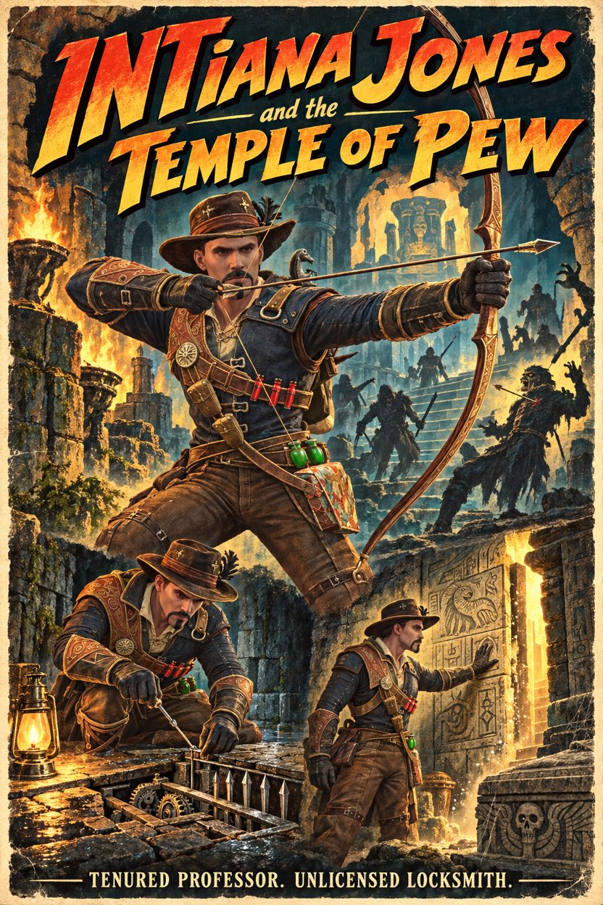
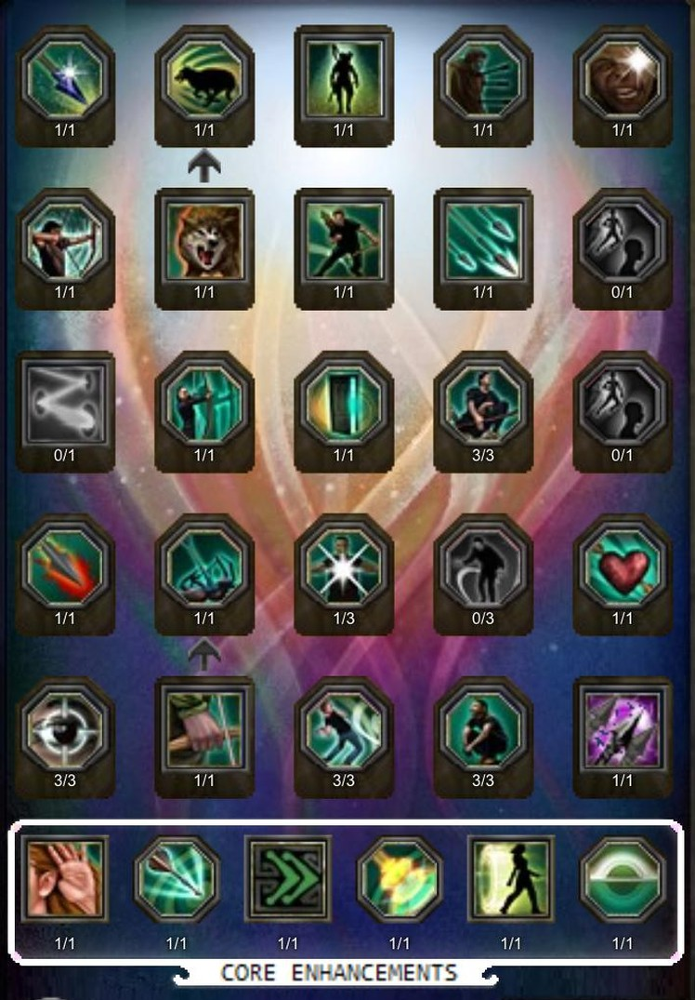
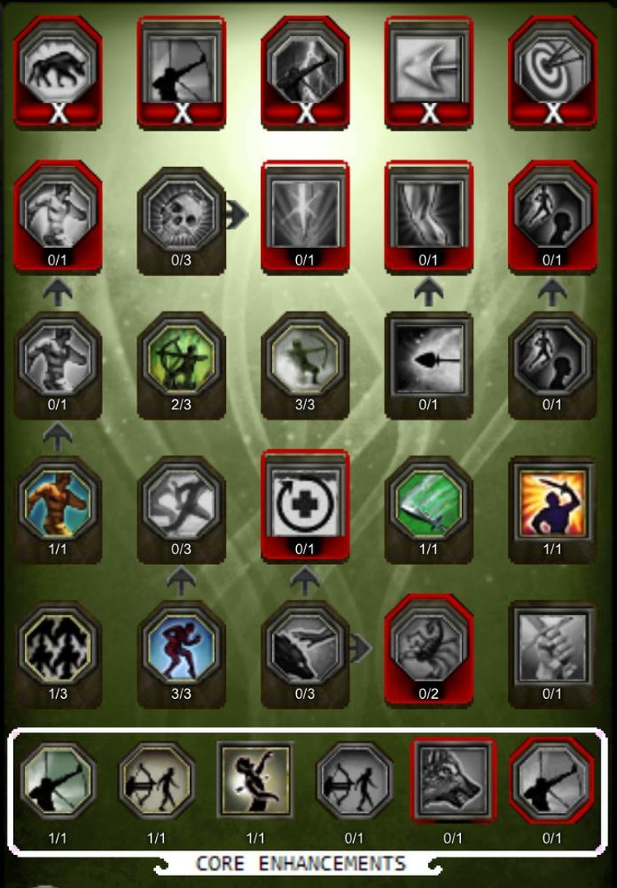
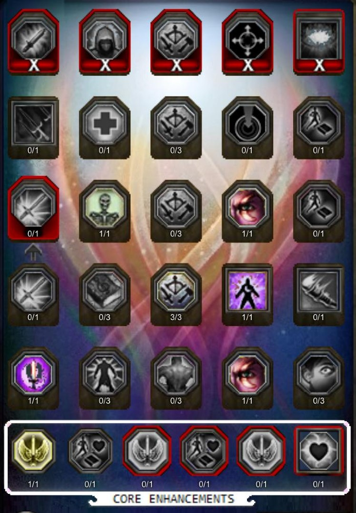
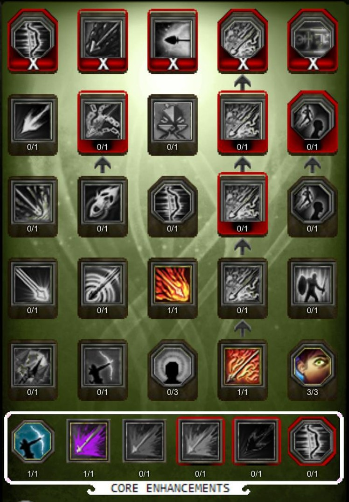
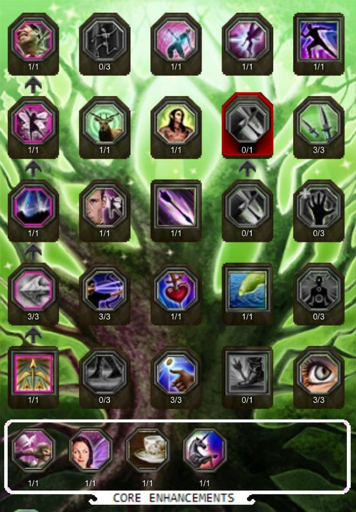
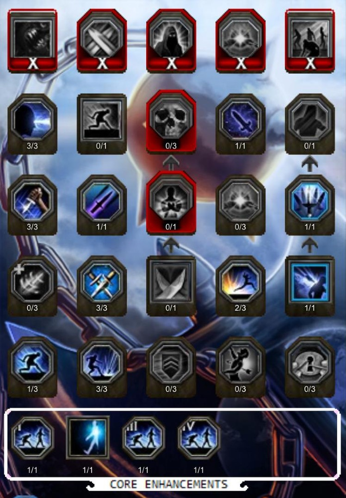
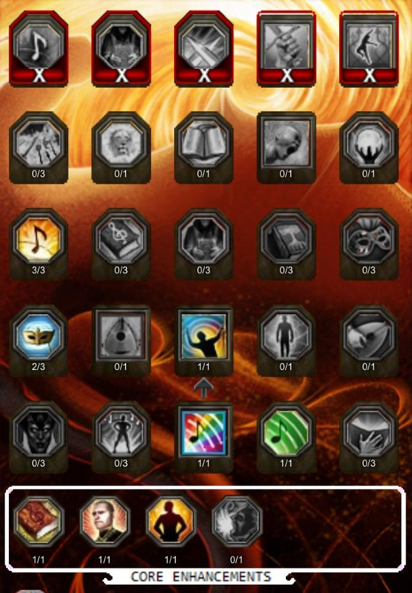

A Levelling Chassis That Can Run R10
INT Longbow GuideLast updated 15 November 2026 (Pacific)build 11-16-26.2

INTiana Jones and the Temple of Pew. The cover is the feeling of playing this character: it is a lot of fun.
Find your place: life schedule and current level
Use these links to the existing instructions; they do not calculate or replace your build.
- Life schedule: Full-BAB schedule · 3/4-BAB schedule · Aasimar Scourge selections and separate class grant. Check the class split and life-specific exceptions before choosing a schedule.
- Current level: use the level-by-level roadmap, then the AP purchase order or DP purchase order. The roadmap and AP table show class-life timing, not a separate schedule for every life; retain their timing exceptions and the Scourge Harper substitution. From level 21, consult the epic and legendary feat schedule.
- Gear at your level: 1–4 · 5–9 · 10–14 · 15–19 · 20–29 · 30–36 transition and endgame kit. Follow each item’s minimum level, not the band’s first level. A complete level 1–2 kit remains unresolved. Use the separate bow ladder for weapons.
Start here: what this guide is
This is a complete plan for one Dungeons & Dragons Online character: an Intelligence-based archer with a longbow, from level 1 to the level cap of 36 and into Reaper 10, the hardest difficulty in the game. Every number comes from the DDO wiki page named in Sources. Where a choice is a judgment call rather than a wiki fact, it is labelled build decision.
It is a platform build. DDO rewards playing a character to cap, reincarnating, and levelling again for a permanent past-life bonus. This build is the platform you do that on: the same Rogue 1 / Ranger 9 chassis every life with ten levels of whichever class you are collecting, the same enhancement and destiny layouts, and gear picked up while levelling that stays useful on the next life. One character, every grind, no re-planning.
What you will do with it. Shoot from range with Intelligence driving both your attack and your damage (Harper Agent’s Strategic Combat does that), mark a target so the whole party hits it harder, and press a small set of buttons on short timers. Playing it, at the end, explains every button and every defence, gives a rotation that works at Reaper 10, and says what kills this character and what to do about it.
Take the first-time Reaper bonuses on every life. Reaper difficulty gives Reaper experience (RXP) on top of normal XP. The wiki’s Reaper difficulty page records that the first run of a quest on any Reaper skull in the current life pays an extra 200% RXP, with a +45% first-time XP bonus on the quest itself. RXP buys Reaper enhancement points that persist through reincarnation (re-allocate them at level 4), and it is only awarded when at least ten enemies are defeated. Run each quest once on Reaper 1 as you level; the bonus resets with every new life, so a platform build collects it again and again.
How the guide is laid out. It is a set of building blocks, in the order you assemble them:
- The build in one page: the whole plan in one table.
- Class split, past-life priority, feats and skills: the chassis, the order to run lives in, what you pick as you level with every prerequisite checked, and where the skill points go.
- Enhancements and epic destinies: four enhancement trees and three destiny trees, with a picture of every tree.
- Levelling roadmap: level by level, which feat, which points, which bow, and what switches on.
- Gear: what to wear at each milestone, a bow for every stretch of levels, the levelling set, the endgame kit, and the survivability swaps.
- Audit and Reaper 10: proof that everything above stacks, and the rules the layout is tuned for.
- Playing it: what the character is, every ability and every defence explained, the rotation, what kills it and what to do, and how to survive the levelling years.
- Appendix: how the gear optimizer was driven, for anyone who wants to re-run it.
Glossary. Eight terms carry most of the guide:
| Term | Meaning |
|---|---|
| AP | Action points, spent in enhancement trees from level 1. 80 at level 20. |
| DP | Destiny points, spent in epic destiny trees from level 20. 76 at level 36. |
| Past life | The permanent bonus from reincarnating a capped character. |
| R10 | Reaper 10 skulls, the hardest difficulty. |
| ML | An item’s minimum level. |
| [W] | A weapon’s base-damage multiplier: 3[1d8] rolls the die three times. |
| Affix | One named line on an item, such as Doubleshot 9%. |
| Bonus type | The stacking rule. Two bonuses of the same type (Enhancement, Insight, Quality, Profane, Artifact, Competence, Morale) do not add; the larger one applies. |
Have fun playing the game. That is the point of all of it.
Written for Update 82.0.1 (October 16, 2026). Every enhancement and destiny cost, rank count, progression gate and prerequisite in this guide was checked line by line against the wiki’s tree pages on 29 October 2026 (see the audit note under Enhancements). Tree images are rendered on DDO BuildHub from the layouts in this guide and kept in the guide’s GitHub repository.
The build in one page
Everything below expands one row of this table. Each row links to its section.
| Area | Decision |
|---|---|
| Stats | Base DEX 14, INT 18, +8 tomes, every level-up into INT. Harper Strategic Combat I and II put INT on the bow’s attack and damage. |
| Class split | Class lives: Rogue 1, Ranger 2-10, past-life class 11-20. Iconic lives: iconic class 1, Rogue 2, Ranger 3-10 (11 on the Scourge), iconic base class to 20. Racial lives: Rogue 1-2, Ranger 3-11, Rogue 12-20. |
| Past lives | Every trip to 30 pays two past lives: iconic trips carry a class (Aasimar Scourge is Ranger, Shadar-kai Rogue, Purple Dragon Knight Fighter, Tabaxi Monk), heroic-race trips bank an epic life at 30 and a class or racial life from 20. Each bonus is finished to three stacks before the next: 45 trips, 89 lives; Ranger x3 by trip 3, Doubleshot x3 by trip 6, Tier A complete by 18, Completionist at 25, Tier B by 37, all twelve Divine (+36 PRR) by 45. |
| Heroic feats | Point Blank Shot 1, Precision 3, Insightful Reflexes 6, Improved Critical: Ranged 9. For levels 12–18, follow the full-BAB and 3/4-BAB schedules; Aasimar Scourge has a separate schedule and class grant. See those instructions for the selected order and optional alternative. |
| Skills | Search, Disable Device and Use Magic Device to maximum (UMD 39 for Heal scrolls, 35 for Raise Dead); Tumble to 10 trained ranks for the third charge (20 on Rogue lives); Jump 10; Spot to maximum, Listen on Ranger levels; Bluff and Diplomacy are outside the general priority list; see Skills for life-specific allocations. |
| Epic and legendary feats | Combat Archery 21, Pierce Adamantine 22, Overwhelming Critical 24, Doubleshot 25, Patience 27, Harbinger of Chaos 28, Scion of Arborea and Watchful Eye 30, Legendary Aim 31, Trick Shot 33, Pierce Cold Iron 34 (or Titan’s Blood; see the audit), Legendary Trick Shot 36 (confirm the slot accepts it). |
| Enhancements (80 AP) | Horizon Walker 41 (capstone), Deepwood Stalker 17, Harper Agent 14, Arcane Archer 8 (Elemental Arrows imbue, Morphic Arrows). Every tier gate and the 40-AP capstone gate met. |
| Epic destinies | 76 points, which every level-36 character has: Shiradi Champion 35 (tier 5, mantle), Shadowdancer 27, Fatesinger 14. Points from tomes, Machrotechnic and epic past lives (up to 91) follow the priority list under Epic destinies. Legendary Dreadnought is the assessed alternative for the third tree and is not taken. |
| Bows | By level band (historical damage model): heroic Calamitous Longbow or Silver Longbow 8, Thornlord 10, Alchemical Longbow 12, Bow of Sinew 14, Epic Thornlord 20, Pinion 23, Chaosbow or Aerania 28-29, a Dinosaur Bone or Attuned Bone Longbow with Meltscale 31. The current Wisdom loadout pins Calamitous; Sinew remains an unsolved conditional alternate for neutral or chaotic lives, not lawful/Paladin lives. The new Globe/Treatise fill leaves Calamitous ML34; the complete outfit still requires level 36. The historical bow model is not a DPS validation of this loadout. |
| Gear affixes, in order | Exact 32-target search order: eight named-effect presence guards, then Ranged Alacrity → Doubleshot → Ranged Power → Intelligence → Seeker → Armor-Piercing → Deadly → Imbue Dice → Sneak Attack Dice → Sneak Attack Damage → Constitution → Physical Sheltering → Magical Sheltering → Fortification → False Life → Healing Amplification → Dodge → Reflex Save → Fortitude Save → Will Save → Wisdom → Accuracy → Combustion → Damage to helpless enemies. Wisdom replaces Dexterity at rank 29; caps/floors and conditions are explicit. Practical Spot / Good Luck refinements are a manual utility tradeoff, not another optimal solve. |
| Kit | Wisdom-priority artifact recipe: full kit ML 36; 14 items; Yeenoghu’s Reign is the sole Minor Artifact; 34/34 sockets. Claws selects WIS 15; ring Nearly Finished is empty. Derived selected-gear INT +37, WIS +18 and direct Spot +27 at level 36. Selected gear Doubleshot contributes 35 percentage points, including one three-host Quickblade reward. Standing CON has a supported +17 subset; the full total is withheld because Skull +15/+16 remains conflicting. Modeled full gear CON 32/33 and DEX 6 remain separate. These are gear contributions, not character scores or DPS gains. Optional ring DEX 13 is separate and provisional. Search policy excludes event/limited gear except permitted Festive diamonds; exact non-event procurement of Healing Amplification +63 remains unverified. |
| Reaper | Run every quest once on Reaper for the first-time RXP bonus each life. The earlier passive Doubleshot 128% scenario remains unverified; acquisition, activation and every interaction must be established before asserting a cap comparison. Dodge is capped by the armor’s Max Dex Bonus (20 on both armors, 23 with Improved Marking, 29 with Lithe 3). |
| Playing it | Mark, Opening Shot, Scattershot and Manyshot on an 8-second cycle for packs; Mark, Corner the Quarry, Pluck and Arrow of Discord on bosses; stand still for Archer’s Focus. The section explains every ability and defence, what kills the character (melee packs, champions, Reapers, Will saves, knockdown) and the response to each, with a per-skull table and a levelling-survival list. |
Class split
This section fixes the class levels for every kind of life. The chassis is always Rogue 1 and Ranger 9; the other ten levels are whatever class the life is for.
| Character level | Class life | Iconic life | Racial life |
|---|---|---|---|
| 1 | Rogue (Rogue 1) | Iconic base class | Rogue (Rogue 1) |
| 2 | Ranger (Ranger 1) | Rogue (Rogue 1) | Rogue (Rogue 2) |
| 3-10 | Ranger (Ranger 2-9) | Ranger (Ranger 1-8) | Ranger (Ranger 1-8) |
| 11 | Past-life class | Ranger (Ranger 9) or base class | Ranger (Ranger 9) |
| 12-20 | Past-life class | Iconic base class | Rogue (Rogue 3-11) |
Why ten levels of the past-life class. Past Life Feats page: the past life goes to “the class you have the most levels of. In the case of a tie, the dominant class is the first listed on this list: Barbarian, Bard, Cleric, Fighter, Paladin, Ranger, Rogue, Sorcerer, Wizard, Monk, Favored Soul, Artificer, Druid, Warlock, Alchemist.” Ranger is sixth, so a 9/9 tie with any later class hands the life to Ranger. Ten levels of the past-life class win outright; one Rogue level can never be dominant.
Why Rogue at level 1. Rogue page: only “Arcane Tricksters, Rogues, Artificers, Dark Hunter Ranger archetype or those under the effect of the spell Find Traps” can Search for traps with DC above 20. Rogue 1 also gives a ranged sneak die (“can be used with ranged weapons within 30 ft.”), (8 + INT) x4 skill points, and Disable Device, Open Lock, Search, Spot, UMD and Tumble as class skills; Rogue is a free class. If you never trap, Fighter 1 is the alternative: a bonus feat from a list that includes Point Blank Shot, Precision, Weapon Focus, Power Critical and Improved Precise Shot, and full BAB that brings Improved Precise Shot to level 12 on every life.
Iconic lives. Iconic True Reincarnation “rewards both the Iconic PL and full Class PL benefits.” Level 1 is the iconic’s class, so Rogue moves to 2 and the base class fills 12-20. The Aasimar Scourge’s forced class is Ranger (“Scourge first level is Ranger”), so that life reaches Ranger 11 and Improved Precise Shot is free at level 12.
Racial lives. Racial Reincarnation grants “a Racial Past Life feat, based on the character’s current race”; class is irrelevant, so the split is chosen for power: Ranger 9 for Manyshot and Evasion, Rogue 11 for Evasion at level 2, 6d6 sneak attack and the Rogue 10 special ability.
Class grants used. Ranger (prerequisites waived): Bow Strength 1, Rapid Shot 2, Precise Shot 4, Manyshot 6, Evasion 9; Favored Enemy at 1 and 5; Improved Precise Shot at 11. Rogue: Sneak Attack +1d6 and Trapfinding 1, Evasion 2, +1d6 at every odd level, Improved Uncanny Dodge 8, Special Ability 10, 6d6 at 11.
Past-life prioritybuild decision
This is a platform build, so the order you run lives in is a build decision as real as the feat list. Every bonus below is quoted from the wiki page named in Sources (Past Life Feats, Racial Past Life Feats, Iconic Past Life Feats, Epic Past Life Feats, Completionist); the ranking is this guide’s, judged by one rule: what helps an Intelligence archer at Reaper 10 first, survivability second, trap and skill work third, and everything else only because Completionist needs it.
How the bonuses work (wiki)
Everything in this section rests on these rules, each from the page named in Sources.
| Rule | What the wiki says | What it means for this build |
|---|---|---|
| Class past lives | A free passive feat for the dominant class at reincarnation; “all passive Past Life feats can be stacked a maximum of three times each.” The named “purchased” version costs a feat slot from level 3 | Ten levels of a class make it dominant; the passive is permanent and stacks to three. Only Sneak of Shadows is worth a slot, and only where one is spare |
| Archetypes | An archetype’s past life is its own feat with its own passive and “counts as” the base class for Completionist; an archetype cannot be multiclassed with its base class | Dark Hunter and Dragon Disciple are extra stacks of sneak and to-hit lines, not substitutes for Ranger and Monk; Dark Hunter runs with no Ranger levels |
| Iconic lives | Iconic True Reincarnation gives the iconic feat “AND a Past Life Feat based on the class that the character is reincarnating out of”; every iconic’s first level is a fixed class (Iconic Heroes page); an iconic cannot take an archetype of that class; iconics start at 15 and must reach 30 to reincarnate | Two past lives per trip. The fixed class decides which class each iconic carries; on this guide’s iconic split that class is dominant |
| Racial lives | 1st, 2nd and 3rd life of a race each give a different reward; the 3rd is +1 Racial Action Point “applied to your current racial Enhancement tree”; the ability bonuses “do not count for Feat prerequisites” | Only Intelligence and Constitution races pay; the racial AP is spent in whatever race you are playing |
| Epic lives | Chosen freely at any level-30 Epic Reincarnation; each has a passive that “stacks up to 3 times” and a stance, “only 1 active stance allowed per Epic Destiny Sphere”; every feat in a sphere shares the sphere’s passive | Passive totals depend only on how many lives are in a sphere; pick the stance per sphere once |
| Epic then heroic in one trip | “An Epic Reincarnation on a non-Iconic character can be followed up with a Heroic True Reincarnation” at 20; Heroic and Racial Reincarnation are available from 20, Iconic only at 30, and an iconic that uses an Epic Heart cannot use an Iconic Heart “until you have finished the epic reincarnation process and have reacquired level cap” | A heroic-race trip to 30 banks an epic life and a class or racial life. An iconic trip banks the iconic and class lives, and adding an epic life to it costs a second climb from 20 to 30 |
| Completionist feats | Completionist (one life of every class or archetype): +2 all ability scores, +2 all skills; Racial Completionist (three lives of every race) is “identical to, and stacks with” it; Epic Completionist: +1 destiny point per twelve epic lives, up to 4 | Completionist at trip 25 is the single biggest step; Racial Completionist is 51 lives and is not in the plan; epic points feed the Past 76 destiny table |
| Costs and timers | Heroic XP requirements increase after the 4th and 7th True Reincarnation and not after that (Heroic True Reincarnation page, post-Update 72; the Racial and Iconic pages still say 1st and 2nd); epic XP never changes; three days between True Reincarnations; Reaper XP persists through every life; hearts: Heroic True Heart of Wood or Blood from Lahar or the store, Iconic and Epic Hearts for 4,200 Commendations of Valor or 42 Heart Seeds each | An iconic trip needs one Iconic Heart; a heroic trip that banks an epic life needs an Epic Heart and a Heroic Heart. Commendations of Valor are the real currency of the plan |
Class lives, ranked
What each passive does for this build, and how the life is run. Tier A are the lives whose passive feeds the bow directly; take their first stacks before anything else, then collect the rest once for Completionist, then come back for second and third stacks.
| Tier | Class life | Passive per stack (wiki) | Why it ranks here | How to run the life |
|---|---|---|---|---|
| A | Ranger | +2 damage with ranged weapons, +2 elemental resistances | The only past life that is ranged damage by name. Eligible flat weapon damage can benefit from applicable multipliers; a common Reaper reduction alone does not erase its relative value. Compare its marginal benefit and opportunity cost | Aasimar Scourge iconic life: the forced Ranger level plus Ranger 3-20 makes Ranger dominant, so the life pays the Ranger passive and the Scourge passive (+1 Fortitude save) together. Three Scourge lives are three Ranger stacks |
| A | Dark Hunter (Ranger archetype) | +1 to hit with sneak attacks, +1 sneak attack damage | Both lines land on every sneak-attack arrow this build fires. The life itself is a native longbow life: Bow Strength 1, Rapid Shot 2, Precise Shot 4, Manyshot 6, Evasion 9, Improved Precise Shot 11, Trapfinding 1 and sneak dice (Dark Hunter page) | Dark Hunter 20. An archetype cannot be multiclassed with its base class (Archetype page), so no Ranger levels; the Rogue level is not needed because Dark Hunter has Trapfinding |
| A | Rogue | +1 sneak attack damage, +2 saves vs traps | Sneak damage again, and the trap save for the trapper | Shadar-kai iconic life (Rogue 1-2, Ranger 3-10, Rogue 11-20): Rogue passive plus +1% Dodge. The racial-life split (Rogue 11 / Ranger 9) is the heroic alternative |
| A | Fighter | +1 to attack rolls (+1 tactical DCs) | To-hit on every arrow; full BAB also brings Improved Precise Shot to 12 on this life | Purple Dragon Knight iconic life: Fighter passive plus +3 PRR |
| A | Monk | +1 to damage rolls | The wiki does not limit it to melee. As with Ranger, evaluate the eligible flat addition with the applicable multipliers and target conditions | Tabaxi Trailblazer iconic life: Monk passive plus +1 saves vs traps |
| A | Dragon Disciple (Monk archetype) | +1 Attack (and -1 SP on Maximize) | A second +1 to hit line. Counts as Monk for Completionist, so it is a stack to add after the Monk life, not instead of it | Rogue 1 / Ranger 9 / Dragon Disciple 10 |
| B | Barbarian | +10 hit points | Survivability; 30 HP at three stacks against x11.1 damage taken | Razorclaw Shifter iconic life: Barbarian passive plus +1 Will save |
| B | Paladin | +10% healing received from positive energy | Party healing is the only healing at R10, and this multiplies it | Bladeforged iconic life: Paladin passive plus +5% Fortification |
| B | Warlock | +3 Magical Resistance Rating | The fully filled level-36 kit contributes unverified gear MRR (modeled raw 73, before caps); the combined character total remains unverified | Dhampir Dark Bargainer iconic life: Warlock passive plus +1 saves vs enchantments |
| B | Bard | +2 saves vs enchantments and illusions | The Will-save holes Improved Evasion does not cover | Tiefling Scoundrel iconic life: Bard passive plus +1 Reflex save |
| C | Artificer | +1 to all Intelligence-based skills and Use Magic Device | Search, Disable Device and Spellcraft are Intelligence skills; UMD for scrolls. The rogue-skills line | Rogue 1 / Ranger 9 / Artificer 10 |
| D | Cleric, Druid, Favored Soul, Sorcerer, Wizard, Alchemist | Caster lines (conjuration DC, hireling stats, spell penetration, evocation DC, wand DC, transmutation DC) | Nothing for a bow; taken once each because Completionist needs all fifteen | Cleric as a Morninglord, Wizard as a Deep Gnome, Sorcerer as an Eladrin Chaosmancer (Wild Mage); Druid, Favored Soul and Alchemist have no iconic and run Rogue 1 / Ranger 9 / class 10 |
Purchased past-life feats. Only one is worth a feat slot on this build, and only where a slot is free: Sneak of Shadows (Rogue) is +1 to all skills and a 3-per-rest skulk with sneak-attack bonuses; the guide names it as the Aasimar Scourge life’s optional alternative at level 18. Student of the Sword (Fighter) is +1 Max Dex Bonus on armor, a +1 to the dodge cap, if a slot ever opens.
The journey: 45 trips, 89 past lives
What a trip is. One climb of the character to level 30 followed by reincarnation. It is the unit of effort in this plan, and it comes in two kinds:
| Trip type | Climb | Hearts used | Past lives banked |
|---|---|---|---|
| Iconic trip | Start at 15 as an iconic, climb to 30 | Iconic True Heart of Wood at 30 | Two: the iconic feat and the class the iconic carried (an Aasimar Scourge trip is one Ranger stack and one Scourge stack) |
| Heroic-race trip | Start at 1 as a heroic race, climb to 30 | Epic Heart of Wood at 30, which puts you back at 20; then a Heroic True Heart (class life) or a Heroic True Heart of Blood (racial life) at 20 | Two: one epic life and one class life, or one epic life and one racial life |
A trip never pays two stacks of the same feat. The full bonus of anything is three separate lives, each on its own trip: three Ranger stacks are three Scourge trips; twelve Divine epic lives are twelve heroic-race trips that each used an Epic Heart. That is why 45 trips bank 89 past lives, and why the “stacks” in the table count up one at a time.
Worked example, trip 4. After three Scourge trips, reincarnate into a heroic race and run Dark Hunter 1 to 30. At 30, use an Epic Heart and choose Primal: Doubleshot (epic life 1 of 3). Re-level to 20 in the place between, use a Heroic True Heart, and because Dark Hunter is the dominant class the life pays Dark Hunter (stack 1 of 3). Trips 5 and 6 repeat it; then trip 7 starts at 15 as a Shadar-kai.
Why the plan looks like this. Two rules. First, every trip to 30 pays two past lives, so nothing is run for one: the class lives that must be heroic (Dark Hunter x3, Dragon Disciple x3, Artificer, Druid, Favored Soul, Alchemist) and the racial lives worth having (Drow x3, Gnome x3, Dwarf x2) are eighteen heroic-race trips, exactly the eighteen epic lives the build wants, so the epic lives ride the heroic trips and no iconic trip ever needs the extra 20-to-30 climb. Second, each bonus is finished to three stacks before the next one starts, in order of value to the bow, so the character is never carrying a half-built line. The one block that is not a triple is Completionist: seven one-off lives that pay a single feat (+2 all abilities, +2 all skills). Its placement after the Tier A triples and before Tier B remains a build decision. For the selected INT-to-damage route, its +1 INT modifier contributes +1 to hit and +2 ability-based bow damage once both Precise Shot and Improved Precise Shot are acquired; their separate +50% passive contributions stack. Know the Angles supplies its own conditional Insight bonus and is not doubled by those feats. Precise Shot · Improved Precise Shot · Harper Agent.
| Trips | Block | Type | Run | Past lives banked | Bonus completed |
|---|---|---|---|---|---|
| 1-3 | 1 | Iconic x3 | Aasimar Scourge, 15-30, three times | Ranger 3 of 3, Scourge 3 of 3 | +6 ranged damage, +6 elemental resistances; +3 Fortitude |
| 4-6 | 2 | Heroic race x3 | Dark Hunter 1-30, three times; Epic Heart at 30, Heroic Heart at 20 | Primal: Doubleshot 3 of 3; Dark Hunter 3 of 3 | +9% Doubleshot; +3 to hit and +3 damage with sneak attacks |
| 7-9 | 3 | Iconic x3 | Shadar-kai, three times | Rogue 3 of 3, Shadar-kai 3 of 3 | +3 sneak attack damage, +6 saves vs traps; +3% Dodge |
| 10-12 | 4 | Iconic x3 | Purple Dragon Knight, three times | Fighter 3 of 3, PDK 3 of 3 | +3 to hit; +9 PRR |
| 13-15 | 5 | Iconic x3 | Tabaxi Trailblazer, three times | Monk 3 of 3, Tabaxi 3 of 3 | +3 damage; +3 saves vs traps |
| 16-18 | 6 | Heroic race x3 | Dragon Disciple 1-30, three times, with an Epic Heart | Arcane: Enchant Weapon 3 of 3; Dragon Disciple 3 of 3 | +3 bow enhancement (stance), 3% elemental absorption; +3 to hit. Tier A complete |
| 19-25 | 7 | Heroic race x4, Iconic x3 | Artificer, Druid, Favored Soul, Alchemist, each 1-30 with an Epic Heart; then Morninglord, Deep Gnome, Eladrin Chaosmancer, 15-30 | Divine: Brace 3 of 3, Ancient Blessings 1 of 3; Artificer, Druid, Favored Soul, Alchemist, Cleric, Wizard, Sorcerer (Wild Mage) 1 of 1; Morninglord, Deep Gnome, Chaosmancer 1 of 3 | Completionist: +2 all abilities, +2 all skills; +3 all saves (stance), +12 PRR; +1 Intelligence skills and UMD; +3 MRR |
| 26-28 | 8 | Iconic x3 | Razorclaw Shifter, three times | Barbarian 3 of 3, Razorclaw 3 of 3 | +30 HP; +3 Will |
| 29-31 | 9 | Iconic x3 | Bladeforged, three times | Paladin 3 of 3, Bladeforged 3 of 3 | +30% healing received; +15% Fortification |
| 32-34 | 10 | Iconic x3 | Dhampir Dark Bargainer, three times | Warlock 3 of 3, Dhampir 3 of 3 | +9 MRR; +3 saves vs enchantments |
| 35-37 | 11 | Iconic x3 | Tiefling Scoundrel, three times | Bard 3 of 3, Tiefling 3 of 3 | +6 saves vs enchantments and illusions; +3 Reflex. Tier B complete |
| 38-40 | 12 | Heroic race x3 | Drow 1-30, three times; Epic Heart, then Racial Heart | Divine: Ancient Blessings 3 of 3, Block Energy 1 of 3; Drow 1st, 2nd, 3rd life | +1 Search, +1 Intelligence, +1 Racial Action Point; +21 PRR from Divine so far |
| 41-43 | 13 | Heroic race x3 | Gnome 1-30, three times; Epic Heart, then Racial Heart | Divine: Block Energy 3 of 3, Power Over Life and Death 1 of 3; Gnome 1st, 2nd, 3rd life | +1 UMD, +1 Intelligence, +1 Racial Action Point; +30 PRR |
| 44-45 | 14 | Heroic race x2 | Dwarf 1-30, twice; Epic Heart, then Racial Heart | Divine: Power Over Life and Death 3 of 3; Dwarf 1st, 2nd life | +1 Balance, +1 Constitution; Divine complete: +36 PRR; twelve epic lives, Epic Completionist: +1 destiny point |
Totals after trip 45: 27 iconic trips and 18 heroic-race trips; 36 class lives, 27 iconic lives, 8 racial lives, 18 epic lives. The cut lines, if 45 is more than one character will run: trip 18 (every Tier A line at three stacks, Doubleshot and Enchant Weapon complete), trip 25 (Completionist), trip 37 (Tier B complete). Blocks 12-14 are the Divine PRR and the Intelligence races, and the Dwarf block is the first to drop.
Racial and iconic lives
Racial lives run on the Rogue 11 / Ranger 9 split, so every one of them is a good archer life; the question is only which race first. Iconic lives are already placed in the journey above by the class they carry; this table is the iconic feats on their own merits, which decides the order among the ones that carry a Tier A or B class and which Tier D iconics are worth a second or third life.
| Order | Race (racial life) | 1st / 2nd / 3rd life (wiki) | Why |
|---|---|---|---|
| 1 | Drow | +1 Search / +1 Intelligence / +1 Racial AP | Intelligence is the build’s stat; Search is the trap skill |
| 2 | Gnome | +1 Use Magic Device / +1 Intelligence / +1 Racial AP | The other Intelligence race; UMD for scrolls |
| 3 | Dwarf, Duergar, Warforged | +1 Balance or Repair / +1 Constitution / +1 Racial AP | HP |
| 4 | Elf or Wood Elf, Eladrin, Halfling, Shifter, Tabaxi | +1 Spot, Listen, Move Silently or Tumble / +1 Dexterity / +1 Racial AP | Listen sets Corner the Quarry’s DC; the Dexterity does not count for feat prerequisites (Racial Past Life Feats page), so it is worth little here |
| 5 | Human, Aasimar, Half-Elf, Half-Orc, Dragonborn, Tiefling, Dhampir | +1 skill / +1 Wisdom, Charisma or Strength / +1 Racial AP | Only for Racial Completionist (+2 all abilities, +2 all skills) and the racial AP |
The three lives of a race are worth finishing together: the 3rd life’s Racial Action Point is spent only in your current race’s tree (Enhancements page), so a Human platform spends them in Human.
| Order | Iconic life | Passive per stack (wiki) | Stance (wiki) | Why |
|---|---|---|---|---|
| 1 | Shadar-kai | +1% Dodge, up to 3% | Below 50% HP and hit: 25% incorporeality for 6/12/18 s, once per 2 minutes | Carries Rogue. Dodge is the avoidance Reaper 10 does not bypass; the only iconic passive that is a multiplier |
| 2 | Purple Dragon Knight | +3 PRR, up to 9 | Action boost: group movement speed and +1/+2/+3 saves for 20 s | Carries Fighter. The selected level-36 kit contributes unverified gear PRR (modeled raw 133); the combined character total remains unverified |
| 3 | Deep Gnome | +3 MRR, up to 9 | Illusion DC and Acid spell power | Carries Wizard, a Tier D class, so the second and third lives are for the MRR alone; the best of the Tier D iconics to repeat |
| 4 | Tiefling Scoundrel | +1 Reflex save, up to 3 | Movement speed (does not stack with Speed items or Haste) | Carries Bard. Reflex feeds Improved Evasion |
| 5 | Aasimar Scourge | +1 Fortitude save, up to 3 | +2% Doublestrike per stack (melee) | Carries Ranger, the first life in the sequence, and the cheapest to run: the forced Ranger level means Improved Precise Shot is free at 12 (Class split). Fortitude is the save the kit does least for |
| 6 | Bladeforged, Tabaxi Trailblazer, Razorclaw Shifter, Dhampir Dark Bargainer, Eladrin Chaosmancer, Sun Elf | Fortification 5%, trap saves, Will save, enchantment saves, spell power | Repair, Trip DCs, melee attack, Necromancy DC, Fey Step, Light spell power | Carry Paladin, Monk, Barbarian, Warlock, Sorcerer and Cleric. Selected level-36 gear Fortification: 226%; the other benefits here are melee or caster, so each is run for the class life it carries, three times where that class is Tier A or B |
Epic lives
Every feat in a sphere shares that sphere’s passive, so the passive total depends only on how many lives you run in the sphere; the stance is the choice. One stance per sphere is active at a time.
| Order | Sphere and feat | Stance per stack (wiki) | Sphere passive per stack (wiki) | Why |
|---|---|---|---|---|
| 1 | Primal: Doubleshot (3 lives) | +3% Doubleshot, 9% at three | +3 max HP, +4 per ten character levels | Multiplies eligible hit damage, not independent extra arrows; this does not imply additional proc rolls (U49). Scaling is reduced above 200% (U81.4); a gear or past-life percentage is not a standalone DPS percentage. |
| 2 | Divine: Brace (3 lives), then the other three Divine feats | +1 to all saves per stack | +3 PRR per stack: 36 PRR at all twelve | The passive is the prize; twelve Divine lives are the largest survivability line any past life offers. Ancient Blessings (+5 healing amplification per stack) is the alternative stance when a healer is in the party |
| 3 | Arcane: Enchant Weapon (3 lives), then the other four | +1 enhancement bonus to the main-hand weapon per stack | +1% absorption of acid, cold, electric and fire; 15% at all fifteen | +3 to hit and damage on the bow from the stance; the absorption passive is the elemental line the gear could not carry |
| 4 | Martial: Skill Mastery (3 lives), then Fortification, then the rest | +1 to all skills per stack; or +10% Fortification per stack | +1% AC, +1 MRR and +1 MRR cap per stack | Skills for the trapper; Doublestrike is melee-only and Trap Damage Absorption is small |
| 5 | Primal: Colors of the Queen, Ancient Power, Fast Healing | Random effects; +2 attack per stack (the damage half is two-handed only); passive healing | as above | Fill the Primal sphere to twelve for the HP passive and the Epic Completionist count; Ancient Power’s +2 attack per stack is the best of the three stances after Doubleshot |
Twelve epic lives in any mix is one Epic Completionist point; the Past 76 table under Epic destinies is where those points go. At three stacks of Doubleshot, twelve Divine and three Enchant Weapon (eighteen epic lives) the build carries +9% Doubleshot, +36 PRR, +3 weapon enhancement, +3 saves, 3% absorption and about 90 HP at cap, all before gear.
What the journey pays, line by line
The totals after trip 45, every line from the wiki pages above, grouped the way the build is judged. Nothing here depends on gear, so it is carried into every life from level 1 (racial bonuses) or level 3 (Completionist).
| For | Lines | Total |
|---|---|---|
| Hitting | Fighter +3, Dragon Disciple +3, Dark Hunter +3 with sneak attacks; Completionist +2 Intelligence and Drow +1, Gnome +1 (+4 Intelligence, +2 modifier through Strategic Combat); Arcane Enchant Weapon stance +3 bow enhancement | +11 to hit, +14 on sneak attacks |
| Selected damage inputs | Ranger +6 ranged, Monk +3, Enchant Weapon +3, +2 Intelligence modifier at x2 (+4 once Precise Shot and Improved Precise Shot are both acquired); Dark Hunter +3 and Rogue +3 on eligible sneak attacks | Derived +16 eligible weapon damage, or +22 including the listed sneak additions, before other scaling and target defenses. Know the Angles is a separate active Insight bonus. A common Reaper factor preserves the relative gain of an eligible flat addition |
| Arrows | Primal Doubleshot stance | +9% Doubleshot |
| Not being hit | Shadar-kai +3% Dodge; Purple Dragon Knight +9 PRR and Divine passive +36 PRR; Warlock +9 MRR, Deep Gnome +3; Bladeforged +15% Fortification; Primal passive 45 HP at 30, Barbarian +30 HP, Dwarf +1 Constitution | +3% Dodge, +45 PRR, +12 MRR, +75 HP |
| Saves | Divine Brace stance +3 all; Scourge +3 Fortitude, Tiefling +3 Reflex, Razorclaw +3 Will; Rogue +6 and Tabaxi +3 vs traps; Bard +6 and Dhampir +3 vs enchantments; Ranger +6 elemental resistances | +6 Fortitude, +6 Reflex, +6 Will; +9 more vs traps; +9 more vs enchantments |
| Trap and skill work | Completionist +2 all skills; Artificer +1 Intelligence skills and UMD; Drow +1 Search; Gnome +1 UMD; Dwarf +1 Balance; the +4 Intelligence | Search +6, Disable Device +5, UMD +5 |
| Healing received | Paladin +30%; Divine Ancient Blessings stance (+5 per stack) if swapped in | +30% from positive energy |
| Points | Epic Completionist (12 of the 18 epic lives); Drow and Gnome third lives | +1 destiny point (into the Past 76 table); +2 Racial Action Points in the race being played |
DEX and BAB check
Base stats are DEX 14 and INT 18, with +8 tomes and every level-up into INT. The one thing a low-DEX archer has to prove is that every feat prerequisite is still met; this table does that.
Ability tome tiers (Ability tome page): +2 at level 1, +3 at 3, +4 at 7, +5 at 11, +6 at 15, +7 at 19, +8 at 22. Base DEX 14, no level-ups into DEX. Rogue BAB +0/+1/+2/+3 at Rogue 1-4.
| Level | DEX | Feat | Wiki prerequisite | Met |
|---|---|---|---|---|
| 3 | 17 | Precision | BAB +1, DEX 13 | Yes |
| 6 | 17 | Insightful Reflexes | INT 13 | Yes |
| 7 (8 racial) | 18 | Manyshot (Ranger 6) | granted, prerequisites waived | Yes |
| 9 | 18 | Improved Critical: Ranged | BAB +8 | Yes: Rogue 1 (0) + Ranger 8; Rogue 2 (1) + Ranger 7 on racial lives |
| 12 | 19 | Improved Precise Shot | DEX 19, Point Blank Shot, Precise Shot, BAB +11 | Yes with a full-BAB past-life class or on racial lives (Rogue 3 = +2, Ranger 9). A 3/4-BAB past-life class reaches BAB 11 at 15: swap the 12 and 15 picks. |
| 15 | 20 | Weapon Finesse | BAB +1, DEX 13 | Yes |
| 18 | 20 | Weapon Focus: Ranged | BAB +1 | Yes |
| 21 | 21 | Combat Archery | Level 21, Point Blank Shot, DEX 17 | Yes |
Heroic feats
Feat pages read 29 October 2026 (Weapon Finesse, Power Critical, Quicken, Shot on the Run, Spell-like ability).
Seven picks. The only real decision is at level 12: Improved Precise Shot needs BAB 11, which a full-BAB past-life class reaches at 12 and a 3/4-BAB class at 15, so the two columns swap one pair.
| Level | Full-BAB past-life class, iconic and racial lives | 3/4-BAB past-life class | What it does (wiki) |
|---|---|---|---|
| 1 | Point Blank Shot | Point Blank Shot | Prerequisite for Improved Precise Shot and Combat Archery; +1 critical threat range with longbows and shortbows (Threat range page) |
| 3 | Precision | Precision | +5% to hit, -25% target fortification |
| 6 | Insightful Reflexes | Insightful Reflexes | INT modifier to Reflex saves; this is what makes Evasion work on a 14-DEX character |
| 7 | Manyshot (Ranger 6; level 8 on racial and iconic lives) | same | Three arrows with +2 threat range and multiplier, 8-second cooldown; passive Doubleshot equal to 1.5x BAB with bows |
| 9 | Improved Critical: Ranged | Improved Critical: Ranged | Doubles the base threat range; does not stack with Keen; prerequisite for Overwhelming Critical |
| 12 | Improved Precise Shot | Weapon Finesse | Passive: “+50% ability-modifier damage with Longbows and Shortbows (stacks with Precise Shot).” Stance: shots pass through every enemy in the line at -20% damage |
| 15 | Weapon Finesse | Improved Precise Shot | “+2 bonus on attack rolls and +10% fortification bypass” (since Update 76; the old Dexterity-to-hit effect is gone). Prerequisites BAB +1 and Dexterity 13, both met |
| 18 | Weapon Focus: Ranged | Weapon Focus: Ranged | +1 attack and a stacking +2 Ranged Power (the Ranged Power counts without the weapon type equipped) |
Aasimar Scourge lives, feat by feat. The Scourge is the one life where the table above does not read straight, for two reasons: its forced first level is Ranger, so the split is Ranger 1 / Rogue 2 / Ranger 3-20 and Ranger 11 lands at character level 12, where the class grants Improved Precise Shot; and an iconic starts at 15 but still chooses every feat from 1 to 15 during creation, so the order below is picked in one sitting. Seven selected heroic feats, plus the class-granted Improved Precise Shot:
| Level | Feat | Note |
|---|---|---|
| 1 | Point Blank Shot | Chosen at creation |
| 3 | Precision | Chosen at creation |
| 6 | Insightful Reflexes | Chosen at creation; Ranger 5 at this level has already granted Precise Shot (Ranger 4) and Rapid Shot (Ranger 2) |
| 9 | Improved Critical: Ranged | Chosen at creation; Manyshot came free at Ranger 6 (level 7), Evasion comes at Ranger 9 (level 10) |
| 12 | Weapon Finesse | Improved Precise Shot is granted by Ranger 11 at this level; Weapon Finesse uses the level-12 selection during iconic creation |
| 15 | Weapon Focus: Ranged | The last creation-time pick; Power Critical’s prerequisite |
| 18 | Power Critical | Chosen after Weapon Focus: Ranged at 15 |
| 21-36 | As the epic and legendary feat table | Unchanged on every life |
Sneak of Shadows is the alternative at 18 if you hold a Rogue past life and want the skulk; Power Critical is the default.
Seven selections plus the Scourge class grant. The Scourge table uses the seven heroic selection levels (1, 3, 6, 9, 12, 15 and 18), plus Improved Precise Shot granted by Ranger 11 at character level 12. The selected order is Weapon Finesse 12, Weapon Focus: Ranged 15, then Power Critical 18 (+2 to confirm criticals, +2 critical damage before multipliers). Sneak of Shadows remains the optional alternative at 18 if you hold a Rogue past life and want the skulk.
Feats not taken, and why (build decision, wiki facts).
- Quicken Spell remains unselected. That is a build decision, not a conclusion that starting Wisdom 8 permanently prevents spellcasting. Check Ranger spell access against the actual Ranger level, total equipped Wisdom and prepared spells (Ranger page); tomes are not assumed to be the only relevant Wisdom source. The selected Wisdom gear does not itself certify a usable healing spell, adequate spell points or a reliable Reaper self-healing plan. Spell-like abilities have their own interruption and metamagic rules (Spell-like ability page); check the specific ability before assigning Quicken a benefit. No feat or spell selection changes here.
- Empower Healing Spell. Its prerequisite (Ranger 8) is met, but it is +75 spell power to healing spells, which on this build means Cure Light Wounds at 4% effectiveness in Reaper. Not worth any slot, including the Scourge level-18 selection.
- Shot on the Run. “Negates the -4 penalty to attack rolls associated with moving while firing” and +6 Ranged Power, but its prerequisites are Mobility (which needs Dodge) and Point Blank Shot: three feats for +6 Ranged Power, 1% dodge and the moving penalty. The build is built to stand still (Archer’s Focus loses a stack per 3 seconds of movement, Hunter’s Focus rebuilds it after 6 seconds stationary), so the penalty it removes is one the rotation already avoids. Weapon Finesse pays more per feat.
- Power Critical. Its listed +2 to confirm and +2 critical damage before multipliers serve different purposes: the confirmation benefit depends on the target, and the damage term requires an applicable, non-negated critical. The earlier roughly +4-per-hit illustration assumes the cap critical profile and favorable hit, confirmation and fortification conditions; it is not guaranteed damage on every attack. Weapon Finesse supplies +2 to hit and 10% fortification bypass. Power Critical remains selected at level 18 on Aasimar Scourge lives, after Weapon Focus: Ranged at 15; this qualification changes neither selection.
Epic and legendary feats
Eleven picks from 21 to 36. Two are conditional on the bow you carry (Pierce Adamantine and the level-34 slot); the audit explains why.
Epic levels page: feats at 21, 24, 27, 30, 33 and 36 may be epic or heroic; the 22, 25, 28, 31 and 34 slots take Epic Destiny feats only; the legendary feat is at 30; ability points at 32 and 36 go to INT.
| Level | Feat | Prerequisite | What it does (wiki) |
|---|---|---|---|
| 21 | Combat Archery | Level 21, Point Blank Shot, DEX 17 | +1[W], 2% dodge, +1 threat range and multiplier with longbows and shortbows; U81.4 added the threat-range point to its other effects (current feat page) |
| 22 | Pierce Adamantine | Level 22 | Unbroken DR costs 25% of weapon damage for Bludgeoning/Piercing/Slashing/Bane and 50% for other types since U81.4. Redundant with a bow that is already Adamantine (Thunder-Forged, or a Lamordia bow with Melancholic Flames): see the audit |
| 24 | Overwhelming Critical | Improved Critical | +1 multiplier on 19-20; “All effects that increase critical damage multiplier on rolls of 19-20 stack” |
| 25 | Doubleshot | Level 25 | +10% Doubleshot |
| 27 | Patience | Level 21 | +1 multiplier, -10% attack speed |
| 28 | Harbinger of Chaos | Level 28 | +2% Doubleshot; +2 Imbue dice while Chaotic, which Arcane Archer’s Elemental Arrows imbue uses |
| 30 | Scion of Arborea (legendary), Watchful Eye (epic) | Level 30; Level 27 | +20 Melee and Ranged Power, +2 weapon enhancement; Watchful Eye plus Shiradi’s Pierce Deception is listed as +5% Doubleshot; the automatic grant and separate feat choice need the source check below |
| 31 | Legendary Aim | Level 31 | +10 attack, +5% dodge bypass with ranged weapons |
| 33 | Trick Shot | Level 21 | +40 Ranged Power for 4 seconds on Tumble |
| 34 | Pierce Cold Iron, or Titan’s Blood | Level 22 | Titan’s Blood (+10% Legendary bonus to max HP) is the pick whenever the bow already counts as Cold Iron (Thunder-Forged, or Melancholic Chill on a Lamordia bow); see the audit |
| 36 | Legendary Trick Shot | Level 30, Trick Shot | Listed as a Legendary feat on the wiki; confirm the slot accepts it |
Skills
Spot, Search, Disable Device, Open Lock, Auto-Search, Use Magic Device and Augment pages read 30 October 2026.
Skills are where the Rogue level pays for itself. Two wiki rules shape the whole plan. First, one level of a class “permanently raises that skill’s maximum rank to (3 + character level)” for every one of that class’s skills (Cross-class skill page), so Rogue at level 1 lets Disable Device, Open Lock, Use Magic Device, Tumble, Bluff, Diplomacy and Balance be trained to the full maximum (23 at level 20) for the rest of the life. Second, each rank costs 1 skill point when the skill is a class skill of the class being advanced, or 2 points when it is cross-class and can be trained (Skill point and Class skill). A prior Rogue level raises those maximums; it does not make later levels use Rogue prices. Ranger’s class skills are Concentration, Heal, Hide, Jump, Listen, Move Silently, Search, Spot and Swim (Ranger page), so those seven Rogue skills cost 2 per rank on Ranger levels. Past-life-class levels use the class being advanced, which can make some of those skills 1-point purchases.
The cost column gives named class-skill examples, not an exhaustive list of classes or archetypes. Check the actual class being advanced, including its archetype; an unlisted class is not automatically cross-class. The 8 November source notes retain the unresolved Barbarian Balance and Dark Hunter Spot pricing limits. These price corrections do not verify the existing total budgets or change the selected ranks and priorities.
Training eligibility, maximum ranks and price are separate. Disable Device and Open Lock can be trained only when at least one class already taken has that skill as a class skill. Ordinary Ranger 1 cannot train either; paying a cross-class price does not make it eligible. UMD and Tumble can be trained cross-class. During heroic training (levels 1–20), a skill that is cross-class for all classes taken has a maximum of (3 + character level) / 2 ranks; taking a class that has it raises the maximum to character level + 3. Rogue-first class and racial lives can train Disable Device and Open Lock at character level 1, with a maximum of 4 ranks. On Scourge, Rogue 1 is taken at character level 2: the Rogue class-skill ceiling is 5 then, 6 at level 3 and 23 at level 20. These are ceilings, not purchased ranks; each purchase still uses the class being advanced. Choosing iconic levels 1–15 in one sitting does not let a later Rogue level supply eligibility at the earlier Ranger-1 training step. Dated source-ledger evidence and limits.
The budget. Level 1 gives four times the normal points (Skills page): Rogue’s (8 + Intelligence modifier) × 4 is 52 at the build’s Intelligence 20. Ranger levels give 6 + modifier (11-13 each as the tomes land, about 109 over levels 2-10), and the past-life class gives its own base + modifier (Fighter 2, Monk 4, Rogue 8). Only the base score and the Intelligence tome count toward points; items and buffs do not. A Fighter life has about 266 points to level 20; a Rogue life far more. Epic levels add ranks on top (the UMD page counts up to 10 of them).
| Skill | Target | Why (wiki) | Cost |
|---|---|---|---|
| Search | Maximum (23) | No die roll: “if your search skill is high enough, you’ll always discover the object/door, and if it isn’t you never will.” Trapfinding from Rogue 1 lets the skill find traps above DC 20. The trapper’s gate skill | 1 per rank on Ranger, Dark Hunter, Alchemist, Rogue and Artificer levels; 2 when cross-class |
| Disable Device | Maximum (23) | Fail by 5 or more and the box explodes; succeed by 20 or more for a critical success that can turn the trap on its makers. Intelligence-based, so it rides the build’s stat | 1 per rank on Artificer, Dark Hunter and Rogue levels; 2 when cross-class and trainable |
| Use Magic Device | Maximum (23) | Scroll DC is 18 plus twice the caster level: Raise Dead no-fail at 35, Heal at 39 (UMD benchmarks). With 23 ranks, a UMD item and Greater Heroism’s Morale bonus the build clears Heal at cap. At Reaper 10 this is the party’s raise button; self-healing there is 4%, so that is the point of it | 1 per rank on Artificer, Bard, Rogue, Warlock and Alchemist levels; 2 when cross-class |
| Tumble | 10 trained ranks; 20 on Rogue lives | One rank is needed to tumble at all. “10 trained ranks of Tumble skill (only applies while wearing light or no armor)” is a third Tumble charge and 20 trained ranks a fourth (Tumble page); items do not count. Trick Shot (+40 Ranged Power for 4 s) and Misty Step fire on tumbles, so charges are damage | 1 per rank on Bard, Monk and Rogue levels; 2 when cross-class |
| Jump | 10 ranks | “There is a soft cap on the Jump skill at 40”; “approximately 10 ranks in Jump are enough” with the Jump spell or potion (+30). More is wasted | 1 per rank on Ranger levels and other classes that have it, including Rogue, Bard, Monk and Warlock; 2 when cross-class |
| Listen | Ranger levels only (about 13) | Sets Corner the Quarry’s save DC (Horizon Walker) and shows sneaking enemies. Cheap on Ranger levels; stopping here is the build’s priority choice even when a later class also buys it at 1 per rank | 1 per rank on Ranger levels and other classes that have it, including Bard, Monk and Rogue; 2 when cross-class |
| Spot | Maximum (23) | The passive warning: “you sense a secret door” and the “danger” alert near a trap, both a threshold with no die roll, so a Spot score under the trap’s Spot DC gives no warning at all; also shows sneaking enemies and hidden enemies at range. Search is what then finds the box or the door. Trapfinding lets it work above DC 20 | 1 per rank on Alchemist, Artificer, Druid, Monk, Ranger and Rogue levels; 2 when cross-class |
| Open Lock | Whatever is left | Dexterity-based (14 here); a tool per try, no chance of damaging the lock, some quest doors cannot be picked. Useful, not critical | 1 per rank on Rogue levels; other classes use their own price (2 when cross-class and trainable) |
| Balance | 4-5 ranks | Speed of standing up after a knockdown; a few ranks is the whole value | 1 per rank on Alchemist, Bard, Monk and Rogue levels; 2 when cross-class (see source limits above) |
Spotting and Auto-Search (wiki). Two different things find traps for you, and the build has only one of them before level 23. Spot is passive and has no roll: “if your score is high enough you will always succeed and if it’s too low you’ll never know about it” (Spot page), and the same threshold rule gives the “you sense a secret door” message. That is why Spot is now at maximum: under the DC, nothing fires. A spotted trap still needs a manual Search to find the box. Auto-Search is the ability that searches for you: “a Spot check against the DC of the findable object, which is successful is then immediately followed by a Search check of the same DC” (Auto-Search page), so it needs both skills high. Its sources are the elf-family racial line Nothing Is Hidden (Eladrin and Chaosmancer tier 1, Drow, Elf and Morninglord tier 2, Shadar-kai tier 4, with a -12/-8/-4 penalty that Keen Senses offsets), the Inquisitive core Mind Like Iron (-4), and Watchful Eye, the epic feat at 27 that Shiradi’s Pierce Deception grants at tier 3, with no penalty but “cannot detect secret doors at all” since U81. So: traps find themselves from level 23 on every life; on elf-family and Shadar-kai lives the racial AP buys Nothing Is Hidden and secret doors find themselves too; on every other life before 23, Spot warns and you press Search.
Skill augments by level (wiki, Augment page). Spot, Search, Disable Device and Open Lock all come as colorless augments, “Diamond of <skill>”, which fit any slot colour. The ladder is +5 at ML4, +10 at ML8, +13 at ML12, +15 at ML16, +17 at ML20, +18 at ML24, +19 at ML28, +20 at ML32 and +22 at ML36. For the exact Diamond of Spot +22 (ML36), the retained own-item excerpt specifies a +22 Competence bonus. Multiple Competence bonuses to Spot do not add; only the highest applies. This correction does not classify other skill diamonds or levels, establish mixed-type stacking or promise a final +22 skill gain. Exact excerpts and provenance limits. The rule for the levelling set: carry the level-appropriate Diamond of Spot and keep it slotted in every band where the worn items have no Spot line or a lower one (the set’s own Spot pieces are the Loupe’s +6 from its listed ML 3 through level 9 and the crafted goggles from 15; an ML8 diamond already beats the Loupe), and treat the Diamond of Search, Disable Device and Open Lock the same way on a trapping life, since the set carries no Disable Device or Open Lock item after level 9 and the DCs in the trapping note need every point. Slot them in whatever colourless or spare slot the band has; none of the four is worth displacing a Ranged Power or Intelligence augment, so the trapper’s slots are the ones the set leaves empty.
Other skills and life-specific exceptions. These skills are outside the general priority list, not necessarily untrained on every life. The table below mentions Diplomacy for spare class-life points and includes Hide, Move Silently and Concentration in the Scourge level-1 example. Bluff: 4 seconds of sneak vulnerability and 40% threat reduction, immune list of undead, oozes, vermin, animals and magical beasts; Sniper Shot does the sneak job on everything every 6 seconds, so Bluff is a pulling tool, costing 1 point per rank when it is a class skill of the class being advanced, or 2 when cross-class. Diplomacy: drops you down the hate list for 6 seconds; the build already carries -85% ranged threat from three destiny lines plus gear. Hide, Move Silently, Concentration, Heal, Swim, Haggle, Intimidate and Repair are outside the general priority list; the life-specific examples below still include some of them.
Partial allocation examples. The rows below preserve the selected priorities and examples; they are not a complete skill-point budget or proof that every target is affordable. All skill points must be spent during each level-up and cannot be saved for a later level. No new allocation of the remaining points is supplied here.
| Life | Level 1 | Levels 2-10 | Levels 11-20 |
|---|---|---|---|
| Class life (Rogue 1 / Ranger 9 / class 10) | 52 points: 4 ranks each in Search, Disable Device, Open Lock, Use Magic Device, Tumble, Jump, Listen, Spot, Balance; 4 more where you like (Diplomacy is the least bad). Thirteen skills at 1 point a rank is why Rogue comes first | Search, Spot, Jump, Listen every level at 1 a rank; Disable Device and UMD every level at 2; Tumble to 10 by about level 7 | Search, Spot, Disable Device and UMD use the class being advanced: 1 per rank for its class skills, 2 for trainable cross-class skills (see the named examples above); Jump if the class has it (Fighter and Monk do); Open Lock with the remainder |
| Racial life (Rogue 1-2 / Ranger 3-11 / Rogue 12-20) | As above | As above, with level 2 a Rogue level at 1 a rank | On Rogue levels, all skills listed in the first table cost 1 per rank: take all of the first table to maximum and Tumble to 20 for the fourth charge |
| Aasimar Scourge life (Ranger 1 / Rogue 2 / Ranger 3-20) | The forced level is Ranger, so level 1 is (6 + modifier) × 4 = 44 points at Ranger prices: 4 ranks each in Search, Jump, Listen, Spot, Hide, Move Silently and Concentration are the selected 1-point examples here, not the full Ranger class-skill list; Disable Device and Open Lock cannot be trained at this step; UMD and Tumble cost 2 points per rank and have a maximum of 2 ranks each at character level 1 | Rogue 1 at character level 2: Disable Device and Open Lock become trainable; Rogue class skills have a maximum of 5 ranks at character level 2 and character level + 3 thereafter, with a price of 1 point per rank while advancing Rogue, so spend all of it on Disable Device, UMD, Tumble, Open Lock and Balance. From 3 on, as the class life | As the class life’s Ranger levels (Ranger to 20) |
| Other iconic lives (iconic class 1 / Rogue 2 / Ranger 3-10 / class 11-20) | Use the forced class’s points, training eligibility, rank ceilings and prices; do not apply ordinary Ranger’s limits to every iconic. Shadar-kai starts as Rogue and gets the class-life level 1 outright | At character level 2, advancing Rogue gives its class skills a maximum of 5 ranks, then character level + 3, at 1 point per rank on that Rogue level. Skills already eligible at level 1 remain eligible; then as the class life | As the class life |
Enhancements: 80 AP
Every cost, rank, progression gate and prerequisite checked line by line against the seven tree pages on 29 October 2026.
Four trees: Horizon Walker for the capstone and the bow lines, Deepwood Stalker for sneak dice and Sniper Shot, Harper Agent for Intelligence to hit and damage, and Arcane Archer for the imbue that wakes the build’s idle Imbue dice and for Morphic Arrows, which ends the damage-reduction penalty against bludgeoning and slashing DR. Every tier gate and the 40-AP capstone gate is met; the level-by-level purchase order is in the Levelling roadmap.
Rules (Enhancements page). 80 AP at level 20. Tier 2 needs 5 AP already in the tree, tier 3 needs 10, tier 4 needs 20, tier 5 needs 30, and the sixth core (capstone) needs 40. Tier 5 in one tree only; one capstone. Racial AP from Racial Reincarnation (1 per race at three racial lives, up to 16, plus 3 from Racial Enhancement Point Tomes) “can only be spent on racial enhancements.” Tomes of Universal Enhancement (up to +4) add AP usable in universal trees only (Horizon Walker, Harper Agent, Vistani, Inquisitive).
| Tree | AP | Gate check |
|---|---|---|
| Horizon Walker | 41 | 34 under tier 5 (needs 30); 40 under the capstone (needs 40) |
| Deepwood Stalker | 17 | 5 under tier 2 and the Sneak Attack core (both need 5); 12 under tier 3 and 12 under Sniper Shot (both need 10) |
| Harper Agent | 14 | 5 under tier 2, 10 under tier 3 |
| Arcane Archer | 8 | 6 under Morphic Arrows (core 2 needs 5 spent and Ranger 3); 6 under tier 2 (needs 5) |
| Total | 80 | Four trees of six allowed; tier 5 in Horizon Walker only; capstone Horizon |
Each tree below is followed by its image as laid out on DDO BuildHub (the build is saved there, unlisted, and linked in Sources). Lit icons with a rank count are taken; red-bordered icons are locked by level or class count. The builder’s own point counter is cropped off each image because its data prices two destiny picks differently from the wiki (noted under Epic destinies); the captions carry the wiki totals.
Wiki audit, 29 October 2026. Every row of the seven tree tables, the gate tables and the two by-level tables was checked against the AP Cost, Ranks, Progression and Requires lines on the wiki’s Horizon Walker, Deepwood Stalker, Harper Agent, Arcane Archer, Shiradi Champion, Shadowdancer and Fatesinger pages. Every cost and total matched. One layout did not: Deepwood Stalker had 4 AP below its 5-AP gates, which the game enforces and DDO BuildHub does not (“Tier Two: Requires Ranger Level 2, 5 APs spent in tree”; Sneak Attack core “Progression: 5”). The fix is in that tree’s section, and the Action points by level table was re-sequenced so that every purchase meets its gate at the level it is made.
Horizon Walker, 41 AP
The main tree. Mark Target, Haste, the two bow trainings, Feywild Attunement and the Horizon capstone are why the build is here.
| Tier | Picks (ranks) | AP | What it does (wiki) |
|---|---|---|---|
| Cores | Mark Target, Improved Marking, Haste, Dauntless Marking, Dimension Door, Horizon | 6 | Mark debuffs to -10 AC, -25% fortification, -4 saves, -20% speed; Haste SLA; +3 Max Dex Bonus in light armor; +3 Maximum Dodge; Dimension Door SLA; Horizon: +2 all abilities, +10 Ranged Power, Marked Targets are Favored Enemies, and a Marked Target that is also a Favored Enemy type “gets Favored Enemy bonuses twice” |
| 1 | Eye for Accuracy 3, Opening Shot, Skills 3, Conjure Arrow, Planar Dodge 3 | 12 | +3 attack; Opening Shot +30% damage and 3d6 Force; +3 Tumble/Spot/Listen (Listen sets Corner the Quarry’s DC); returning +1 arrows; +3% Dodge |
| 2 | Walker Training I, Take the Opening, Protection from Evil and Good 1, Favored Enemy: Evil Outsiders | 5 | +1/+1 with bows; Opening Shot +1d10 Force per 2 levels on full-HP targets, doubled on Marked; +2 AC and saves vs evil; a Favored Enemy feat |
| 3 | Two Places At Once, Hunter’s Focus, Tenacious Hunter 3 | 6 | Displacement for 12 seconds on Manyshot or Scattershot; 1d4+4 Archer’s Focus stacks after 6 seconds stationary; +6 damage vs Marked and extraplanar |
| 4 | Walker Training II, Corner the Quarry, Scattershot, Walker’s Guidance | 6 | +1/+1 with bows; +40% damage and immobilise on Marked; AoE shot with +2 threat range and multiplier; Evasion and Improved Evasion for 12 seconds on a 60-second cooldown (purchased at character level 14 in this Guide’s plan) |
| 5 | Feywild Attunement, Banish the Quarry, Misty Step, Powershot, Improved Archer’s Focus | 6 | “+1 Competence Bonus to Threat Range and Multiplier with Longbows and Shortbows” and BAB equal to character level with bows; 1d6 Force per level on Corner the Quarry; Ranged Power equal to level for 12 seconds on tumble; 1d10 Force per level on Manyshot/Scattershot criticals at 200% Ranged Power; 25 Archer’s Focus stacks and +10% Doubleshot |
Not taken: No Step Missed (a DEX trance; the wiki antirequisite blocks it alongside Know the Angles) and the two +1 DEX picks. The selected Harper offense and Insightful Reflexes use INT; DEX can still affect its own skills and the ability contribution to AC, so it is not a stat with no benefits. The Wisdom gear choice is a separate Spot/Will tradeoff, not an AP or base-ability change. Their 6 AP remain Two Places At Once, Planar Dodge 3 and Walker’s Guidance. Total 6 + 12 + 5 + 6 + 6 + 6 = 41.

Deepwood Stalker, 17 AP
Sneak dice, Sniper Shot, Improved Weapon Finesse and the Ranged Power boost. The tree stops at tier 3: Survivalist II and Killer are not bought, and the AP they would cost go to Arcane Archer, for the reasons given under that tree.
| Tier | Picks (ranks) | AP | What it does (wiki) |
|---|---|---|---|
| Cores | Far Shot, Sneak Attack, Called Shot: Sniper Shot | 3 | +1 sneak die each from Far Shot and Sneak Attack; Sniper Shot: +20% damage, +4 to hit, +2 threat range and multiplier, target vulnerable to sneak attack for 4 seconds. Cores 4-6 need Ranger 12/18/20 |
| 1 | Stealthy 3, Favored Defense 1 | 4 | +1/+2/+3 Hide and Move Silently; rank 3 adds a sneak die. Favored Defense 1: +2 AC when attacked by Favored Enemies and +1 to saves against their spells and effects (every Marked Target is a Favored Enemy once Horizon is bought); it is the fifth point the tier-2 gate and the Sneak Attack core need |
| 2 | Improved Weapon Finesse, Action Boost: Ranged Power, Survivalist | 5 | “+3 To Hit and +15% Fortification Bypass”; +30 Ranged Power for 20 seconds; +10 HP and +3 PRR in light armor |
| 3 | Thrill of the Hunt 2, Favored Hunter 3 | 5 | +2 damage for 6 seconds after damaging a target below 50%; +3 to hit and damage vs Favored Enemies |
Total 3 + 4 + 5 + 5 = 17. Why Favored Defense 1 (build decision, wiki gate). Tier 2 “Requires Ranger Level 2, 5 APs spent in tree” and the Sneak Attack core is “Progression: 5”, so Far Shot plus Stealthy 3 (4 AP) opens neither; Sniper Shot is “Progression: 10”. A fifth point in cores or tier 1 is mandatory, and Favored Defense is the one that does something on this build. It is paid for by the third rank of Thrill of the Hunt (+1 damage, only for 6 seconds after hitting a target below half health), the smallest number in the tree. DDO BuildHub accepts a tree 4 AP below its gate; the game does not. Not taken: Favored Defense ranks 2-3, Survivalist II (+20 HP, +4 PRR) and Killer (up to +20% Morale Doubleshot for 15 seconds after kills); the +1 DEX pick. Tier 5 (Heavy Draw, Strikes Like Lightning) is not reachable: tier 5 is allowed in one tree and Horizon Walker’s capstone needs 41.

Harper Agent, 14 AP
Fourteen points that make the whole build work: Strategic Combat I and II put Intelligence on the bow’s attack and damage.
| Tier | Pick (ranks) | AP | What it does (wiki) | Spent |
|---|---|---|---|---|
| Core | Agent of Good I | 1 | +1 to hit and damage, +1 to hit vs Evil | 1 |
| 1 | Strategic Combat I | 2 | “You can use your Intelligence modifier to hit with Melee and Missile weapons” | 3 |
| 1 | Harper Enchantment | 2 | +1 to the weapon’s enhancement bonus; chosen as the tier-2 filler because it is +1 to hit and damage on every arrow | 5 |
| 2 | Know the Angles | 2 | Battle Trance: insight bonus to damage equal to half INT modifier for 120 seconds | 7 |
| 2 | Versatile Adept I 3 | 3 | +3 Melee and Ranged Power | 10 |
| 3 | Strategic Combat II | 2 | “You can use your Intelligence modifier for damage with Melee and Missile weapons” | 12 |
| 3 | Know Your Foe | 2 | A Favored Enemy feat: Aberration, Construct, Dragon, Evil Outsider, Giant, Monstrous Humanoid or Undead (the image shows Undead). Not on Aasimar Scourge lives: see the note below the table | 14 |
Favored Enemy feats: Ranger 1 and 5, Horizon Walker Evil Outsiders, Know Your Foe, Shiradi Enemy of My Own = 5, each “+2 Damage” against a Favored Enemy and against every Marked Target. Choose a Know Your Foe type other than Evil Outsider unless you want the doubled bonus against them.
Aasimar Scourge lives: Harper Training I instead of Know Your Foe (build decision). The Scourge racial tree already carries the anti-undead damage (Aasimar Scourge enhancements page: the Scourge aura is “3d6 extra Light damage that scales with the higher of your Melee or Ranged Power” for one minute, and Strike Down adds “1d4+4 per Character Level ... in Positive Damage to Undead creatures”), so a Favored Enemy: Undead feat is the one pick in the layout that duplicates something the life already has. On those lives the same 2 AP buy the second Harper core instead: “Harper Training I / Ability Score: Choose one. +1 Dexterity, +1 Intelligence, +1 Charisma” (AP Cost 2, requires character level 3 and Agent of Good I, 5 AP spent in the tree). Take Intelligence: it is +1 to hit, damage, Reflex, Know the Angles, every skill the build trains and the spell points behind the toggles. Harper stays at 14, the tier-3 gate is unchanged (10 spent before Strategic Combat II), and the only timing change is in the Action points by level table: at level 20, Harper Training I is bought in Know Your Foe’s place. The Favored Enemy count on a Scourge life is four, not five; the Horizon capstone still makes every Marked Target a Favored Enemy, so the bonus against the target that matters is unchanged.

Arcane Archer, 8 AP
Eight points for two things no other tree in the build offers: an imbue, and arrows that count as bludgeoning and slashing. Every line is from the Arcane Archer enhancements page.
| Tier | Picks (ranks) | AP | What it does (wiki) |
|---|---|---|---|
| Cores | Arcane Archer, Morphic Arrows | 2 | Core 1: “Equipped bows gain a +1 Enhancement bonus for each Arcane Archer core ability you possess. All bows are treated as Implements in your hands, granting Spell Power” (+3 Implement spell power per point of the bow’s enhancement bonus, so a +15 bow is +45). Core 2 (Ranger 3, 5 AP spent): Morphic Arrows, a secondary imbue toggle: “Your arrows deal bludgeoning, piercing, and slashing damage.” Cores 3-6 (Metalline, Aligned, Shadow Arrows, Mystical Archer) need 10, 20, 30 and 40 AP spent |
| 1 | Elemental Arrows (Flaming), Awareness 3 | 5 | Elemental Arrows: imbue toggle, 1d6 fire on a qualifying hit scaling 100% with Fire Spell Power, passive +5 Universal Spell Power; the element is a choice (acid, cold, electric or fire). The selected Flaming imbue and the crafted bow’s Melancholic and Dolorous Flames are separate damage channels with their own rules. Awareness: +3 Listen, Search, Spot and to-hit |
| 2 | Elemental Inferno | 1 | AoE ranged attack, +10% damage; every enemy around the impact takes a stack of Elemental Inferno (1d6 per 2 seconds for 6 seconds in the imbue’s element, scaling with spell power, 20 stacks). 6 SP, 3-second cooldown |
Why it is in the build. Three reasons, in order. First, the selected Flaming imbue uses the bonus dice from Harbinger of Chaos and Scion of Arborea. With those feats acquired at level 30, the named feat-and-tree subtotal is 4d6 Fire while Chaotic or 2d6 otherwise: one base die, one from Scion, and two from Harbinger only while Chaotic. The selected Emerald of Arcane Empowerment adds one die when its ML34 Coldlight Runners host is equipped, giving 5d6 / 3d6; the complete filled outfit still requires level 36. Flaming scales at 100% Fire Spell Power and its eligible damage is multiplied by Doubleshot. Actual damage depends on the active toggle, a qualifying hit, alignment, equipped bonuses and the target’s defenses. The former fixed “about 24 on every arrow” example is not a current-kit damage result. Second, Morphic Arrows supplies bludgeoning and slashing bypass alongside piercing; the U81.4 penalty for unbroken physical-type DR makes that useful against matching targets. Third, Awareness adds +3 to hit, Search and Listen. The toggles cost 20 spell points each to activate; check available spell points and toggle state. Metalline Arrows (core 3: bypass all metallic DR) needs 10 AP spent in the tree and remains an unselected extension. Offensive source inventory and applicability limits.
What it displaces. Deepwood’s Killer (up to +20% Morale Doubleshot for 15 seconds after kills), Survivalist II and the third rank of Thrill of the Hunt. The selected imbue and Morphic Arrows do not require a killing blow, but still require their toggles and applicable attacks; Killer’s benefit depends on qualifying kills and its duration. Horizon Walker cannot lose a point (41 is the capstone gate plus the capstone) and Harper cannot drop below 10 without losing Strategic Combat II, which is why the points came from Deepwood.

Alternative: Haste Boost, a Vistani splashbuild decision
A Vistani splash buys Haste Boost at the cost of most of Arcane Archer. It is assessed and not taken.
Horizon Walker 41, Deepwood Stalker 17, Harper 12 (no Know Your Foe), Arcane Archer 3 (core, Elemental Arrows), Vistani Knife Fighter 7 (Knife Expertise, Undead Hunter, Acrobatic 1, Mist Stalker I, Haste Boost). Every gate met; 80 AP.
- Pro: Haste Boost is +30% attack speed for 20 seconds on a 30-second cooldown and works on bosses; it is an Action Boost bonus, so it stacks with the Haste SLA (Haste page: Haste “will stack with bonuses of other types (Rogue or Fighter haste boost)”); Undead Hunter keeps the Favored Enemy count at 5; Mist Stalker I is +25% negative absorption and +3 PRR/MRR.
- Con: loses Morphic Arrows (the DR fix), Awareness 3 (+3 to hit), Elemental Inferno and the choice of Favored Enemy type; keeps the imbue.
- Verdict: keep the recommended Arcane Archer layout; the Vistani splash remains unselected. The stated 20-second duration over a 30-second cooldown is two-thirds available-use time, not one-third. Sustainable Haste Boost uptime also depends on charges and the encounter’s rotation, so it is not a guaranteed average speed gain. Morphic Arrows and Awareness serve the selected route subject to their own conditions.
With Tomes of Universal Enhancement
Tome AP are universal-tree only. With all four: recommended layout minus Know Your Foe and the third rank of Awareness, plus Vistani 7 (Knife Expertise, Undead Hunter, Acrobatic 1, Mist Stalker I, Haste Boost): 41 + 17 + 12 + 7 + 7 = 84, every gate met, the full Arcane Archer core set and Haste Boost both in. With fewer tomes, each tome AP is +1 attack in Inquisitive (core, then Eye for Accuracy).
Optional: Mechanic, 4 AP for the trapperbuild decision
Ed runs this on his current life: four points in the Rogue Mechanic tree, the first core and the first tier-1 line, because the layout above has nothing that touches Disable Device or Open Lock and the levelling set carries no trap item after level 9 (Skills, and the Gear section). It is optional; the 80-AP layout stands without it.
| Pick | AP | What it does (wiki, Mechanic enhancements) |
|---|---|---|
| Arbalester (core 1) | 1 | “Your ranged sneak attack and Point Blank Shot range increases by 5 meters per trained Mechanic Core enhancement. You also gain proficiency with great crossbows.” Requires Rogue level 1 |
| Mechanics 3 (tier 1) | 3 | “+[1/2/3] Disable Device, Open Lock, and Repair. +[1/2/3] to Saving Throws you make against traps” |
What it buys: +3 on both trap skills on a build whose Open Lock is Dexterity-based and under-ranked, +3 Reflex against traps, and 5 more metres of ranged sneak-attack range from the core, which a bow uses on every life. Buy Arbalester (core 1) for 1 AP first, then Mechanics ranks 1–3 for 1 AP each: 4 AP total, available from Rogue level 1 when funded.
Funding and timing (build decision). Either optional package needs AP actually available or reallocated at the time of each purchase, while preserving all affected prerequisites and gates. Taking the 4-AP option at level 4 or 5 requires AP already earned by then, reallocating existing purchases only if needed and preserving all purchase gates. Omitting future purchases at levels 17 or 20 does not supply earlier AP, and a later reset only returns points at that later time. The published Action points by level schedule remains unchanged; this note does not establish an alternate level-by-level allocation.
Optional extension: 7 AP total, only on a life already at Rogue level 2 or higher. After the 4-AP package, buy tier-1 Awareness rank 1 for 1 AP: its printed bonus is +1 Listen, Search and Spot, bringing Mechanic to 5 AP spent. Then buy the single rank of tier-2 Skill Boost for 2 AP: activate it to gain a separate +6 Action Boost bonus to all skills for 20 seconds (30-second cooldown), for 7 AP total. Tier 2 requires both Rogue level 2 and 5 AP already spent in Mechanic before purchasing Skill Boost. A character still at Rogue level 1 cannot buy this extension merely by spending more AP. The selected class split is unchanged.
Awareness overlap. Only the highest Awareness bonus from the different trees applies. Mechanic Awareness rank 1 does not add to a higher Awareness already owned, so it does not improve those skills while the selected Arcane Archer Awareness 3 is trained. Skill Boost is the separate active effect described above. Sources: Mechanic enhancements and Enhancements; 8 November source receipt and limits.
Survivability dial
The build is tuned for damage. If a character keeps dying, turn this dial one step at a time; each step has a stated cost. The gear side of the same dial is under Gear.
Defences as built: INT to Reflex, Evasion (Ranger 9, or Rogue 2 on racial lives) upgraded to Improved Evasion by Shadowdancer’s The Darkest Luck, Precision, Displacement on demand, Planar Dodge, Survivalist I (+10 HP, +3 PRR), Walker’s Guidance, and threat reduction of -30% (Queen’s Diplomacy), -30% (Cover of Darkness) and -25% (Pianissimo 2).
| Order | Add | Cost | Effect (wiki) |
|---|---|---|---|
| 1 | Titan’s Blood at 34 in place of Pierce Cold Iron | 0 | +10% Legendary bonus to max HP; free whenever the bow already counts as Cold Iron |
| 2 | Survivalist II in place of Awareness ranks 2-3 | 0 net | +20 HP, +4 PRR; costs +2 to hit |
| 3 | Vistani Mist Stalker I and II | 4 AP (tome AP or the alternative layout) | +6 PRR and MRR, +25% negative absorption, +2 Will |
| 4 | Legendary Dreadnought 14 in place of Fatesinger 14 (see Epic destinies, Third tree) | 0 net | +15 PRR, +40 HP more than Fatesinger, +6% Doubleshot; loses Pluck, Arrow of Discord, Harmonic Resonance and -25% threat |
Epic destinies: 76 points
Every cost, rank, progression gate and prerequisite checked against the Shiradi Champion, Shadowdancer and Fatesinger pages on 29 October 2026.
Three trees: Shiradi Champion for the mantle, tier 5 and most of the multipliers; Shadowdancer for sneak dice, Improved Evasion and threat reduction; Fatesinger for the epic strikes and the Sonic line. 76 points is what every level-36 character has. The level-by-level purchase order is in the Levelling roadmap.
Epic Destinies page: 4 points per level, 64 from levelling at 36; the 12 free trees give 36 Fate Points, which convert at 3 per point to 12 more. 76 is what every level-36 character has. Tomes of Fate and Destiny, the Machrotechnic unlock, epic past lives and Epic Completionist add up to 15 more (maximum 91); those go in the priority order at the end of this section. Three trees at once; tier 5 in one tree. Tier gates: tier 2 at 5 spent, tier 3 at 10 spent and level 23, tier 4 at 20 and level 26, tier 5 at 30 and level 30; cores 2-4 at 5/10/20 spent and levels 23/26/32.
| Tree | Points | Gate check |
|---|---|---|
| Shiradi Champion (mantle, tier 5) | 35 | 30 under tier 5; 24 under tier 4 |
| Shadowdancer | 27 | 22 under tier 4 |
| Fatesinger | 14 | 10 under tier 3 and core 3 |
| Total | 76 |
Priority inside the 76. Multipliers that survive R10’s 10% damage come first (threat range and multiplier, Doubleshot, Ranged Power, sneak dice, fortification bypass, helpless damage), then Improved Evasion and threat reduction, then everything else.
| Priority | Block | Pts | Why |
|---|---|---|---|
| 1 | Shiradi: Prism mantle, Stay Loud 3 | 4 | 15% chance of 7d77 random-type and 15% chance of 7d77 Sonic on every ranged attack, both at 200% Ranged Power |
| 2 | Shiradi tier 5: Lore of the Hunt, Feywild Attunement, Nerve Venom, Inexorable Advance | 5 | +1 multiplier on 19-20; BAB equal to level; paralyze (helpless, and 6 seconds is the R10 floor); +30 Ranged Power with no IPS penalty for 30 seconds |
| 3 | Shiradi: the rest of the 30-point gate (Phase Double, Pierce Deception, Hunt’s End, Whirling Wrists 3, Cruelty of the Hunt, Track, Queen’s Diplomacy, 4 cores, Good Luck 3, Fey Sight 3, Enemy of My Own, Healing Spring) | 26 | +6% and +5% Doubleshot, Hunt’s End’s +20-threat-range shot (conditions below), +3 critical confirmation and damage, +10% vs helpless, the Track debuff, -30% threat, +20 Ranged Power and +60 HP from cores; the last 8 points (Good Luck, Fey Sight, Enemy of My Own, Healing Spring) are gate fillers |
| 4 | Shadowdancer cores 1-4 | 4 | +20 Ranged Power, +4 sneak dice, +60 HP, Improved Evasion, +3% dodge and fortification bypass |
| 5 | Shadowdancer: Dance in the Dark 3, Shadowstriker, Grim Precision 3 | 8 | +3 sneak dice, +5% Doubleshot, 15% fortification bypass |
| 6 | Shadowdancer: Shadowstrike, Dark Imbuement | 4 | The AoE epic strike and 1d6 per sneak die for 10 seconds after it |
| 7 | Shadowdancer: Pierce the Gloom 3, Bring Darkness | 5 | +3 to hit, +1 sneak die, Darkness debuff on natural 20s |
| 8 | Shadowdancer: Cover of Darkness 3, Stealthy 1, Lithe 2 | 6 | -30% threat; the tier-2 gate; +4 Reflex, AC and light-armor MDB |
| 9 | Fatesinger: Fate’s Repertoire, The Pluck of a String, Harmonic Resonance | 5 | The single-target epic strike (2d10 Sonic per level, +4 threat range) and +30% Sonic vulnerability, which Stay Loud’s procs also benefit from |
| 10 | Fatesinger: Arrow of Discord, Pianissimo 2, Intoxicating Presence | 5 | AoE epic strike; -25% threat; +5 Ranged Power and +15 HP |
| 11 | Fatesinger: Master the Acoustics 3, Glitter of Fame | 4 | Doubles the Sonic damage of Pluck and Discord; +1 all abilities and saves |
Shadowdancer stops at 27 because tier 5 is locked behind Shiradi and every remaining pick is melee, caster or Lithe 3. Fatesinger’s 14 is the Sonic line-up that Stay Loud feeds. The tree images below come from DDO BuildHub; its data prices Shiradi’s Crooked Touch at 2 per rank and Shadowdancer’s Epic Strike at 1, where the wiki says 1 per rank and 2, so its counter would read 38 and 26 against the wiki’s 35 and 27. The counters are cropped off the images; the picks are identical and the captions carry the wiki totals.
Shiradi Champion, 35
The mantle tree. Prism and Stay Loud fire on every arrow; tier 5 adds the 19-20 multiplier, BAB equal to level and the paralyse.
| Tier | Picks (ranks) | Pts | What it does (wiki) |
|---|---|---|---|
| Cores | Fey Favor, Vision, Audience with the Queen, Fey Countenance | 4 | Each core +5 Ranged Power and +15 HP; Vision: Ghost Touch, 5% dodge and fortification bypass; Fey Countenance: +2 damage with ranged weapons and +1 save vs spells per Favored Enemy feat |
| 1 | Prism, Good Luck 3, Fey Sight 3 | 7 | Prism is the mantle: ranged attacks have a 15% chance of 7d77 random-type damage at 200% Ranged Power; +3 luck to saves and skills; +6 Listen/Search/Spot |
| 2 | Stay Loud 3, Phase Double 3, Enemy of My Own, Healing Spring | 8 | 15% chance of 7d77 Sonic at 200% Ranged Power with a 25% silence chance at rank 3; +6% Doubleshot; Favored Enemy: Fey; Greater Vigor (gate filler) |
| 3 | Double Rainbow, Pierce Deception, Hunt’s End | 5 | 7% chance of a random effect; +5% Doubleshot with Watchful Eye (grant timing under review); Hunt’s End: +250% damage and +20 threat range, described as an automatic critical, 9-second cooldown; this wording does not establish a bypass of every hit or critical-negation check |
| 4 | Cruelty of the Hunt, Track, Queen’s Diplomacy, Crooked Touch: Whirling Wrists 3 | 6 | +10% damage vs helpless; -1 saves/AC and -2% fortification per hit, 10 stacks; -30% threat; +3 critical confirmation and critical damage |
| 5 | Nerve Venom, Lore of the Hunt, Feywild Attunement, Epic Moment: Inexorable Advance | 5 | 7% chance to paralyse living non-bosses (helpless); +1 multiplier on 19-20 with ranged weapons; BAB equal to character level and always in Point Blank range; +30 Ranged Power, no IPS penalty and Cold/Light procs for 30 seconds |

Shadowdancer, 27
Sneak dice, Improved Evasion, the Shadowstrike AoE and -30% threat.
| Tier | Picks (ranks) | Pts | What it does (wiki) |
|---|---|---|---|
| Cores | Shadow Training, Step Through Shadow, The Darkest Luck, Cut to the Soul | 4 | Each core +5 Ranged Power, +1 sneak die, +15 HP; Dimension Door SLA; Evasion upgraded to Improved Evasion; +3% dodge and fortification bypass |
| 1 | Stealthy 1, Cover of Darkness 3 | 4 | +1 Reflex; -30% threat and Nightshield. Trapper: Technician 1 in place of Stealthy 1 (note below) |
| 2 | Dance in the Dark 3, Lithe 2, Epic Strike: Shadowstrike (ranged) | 7 | +3 sneak dice; +4 Reflex, AC and light-armor Max Dex Bonus; AoE ranged strike with +30% damage, +2 multiplier, +3 threat range; Shadow Loss curse only if the struck opponent fails its Fortitude save |
| 3 | Grim Precision 3, Shadowstriker, Dark Imbuement | 7 | 15% fortification bypass; +5% Doubleshot and Doublestrike; 1d6 untyped per sneak die on hit for 10 seconds after the epic strike |
| 4 | Pierce the Gloom 3, Bring Darkness | 5 | +3 to hit, immunity to Silence and Blindness; natural 20s apply Darkness (-3 PRR/MRR/SR per stack) and +1 sneak die |
Total 4 + 4 + 7 + 7 + 5 = 27. Not taken: Epic Strike Upgrade II (every option is melee or caster); Technician is the trapper’s optional pick, next paragraph. Just a Taste (tier 5) is out of reach because Shiradi holds tier 5. Lithe 3 is the last point in the priority list below.
Rogue skills from this tree: Technician (build decision). Tier 1 has the trapper’s line: “Technician: +2/4/6 to Search, Spot, Disable Device, Open Lock. Rank 3: If you have the Nimble Fingers feat, +1 Sneak Attack dice” (EDP Cost 1, Ranks 3, Progression 0). Two rules for it. First, Cover of Darkness stays at 3: rank 3 is the permanent Nightshield (“a +1 resistance bonus to saves (+2 at 6th level, +3 at 9th) and protection from Magic Missiles, Force Missiles and Chain Missiles”, Nightshield page) on top of the -30% threat, and neither is given up for a skill. Second, the point that moves is Stealthy 1: it is in the layout only as the fifth point for the tier-2 gate, and Technician 1 fills that gate just as well (core 1 + Cover of Darkness 3 + Technician 1 = 5) while paying +2 to Search, Spot, Disable Device and Open Lock instead of +1 Reflex. Shadowdancer is still 27 and nothing else moves. Ranks 2 and 3 (+4 and +6) are where spare destiny points go on a trapping life: the tomes, Machrotechnic and epic-past-life points in the “Past 76” table, before Lithe 3 and alongside the Fatesinger lines, if the Disable Device or Open Lock rolls are what is holding the run up. The Nimble Fingers sneak die is not a reason to go to rank 3; the build does not take that feat.

Fatesinger, 14
The single-target and AoE epic strikes, Harmonic Resonance, and -25% threat.
| Tier | Picks (ranks) | Pts | What it does (wiki) |
|---|---|---|---|
| Cores | Fate’s Repertoire, Intoxicating Presence, Glitter of Fame | 3 | Each core +5 Ranged Power and +15 HP; Magical Training; +1 all abilities and saves |
| 1 | Epic Strike: The Pluck of a String, Harmonic Resonance | 4 | Single-target strike with +30% damage, +4 threat range, 2d10 Sonic per level at 200% Ranged Power, stun on critical; 20% chance per hit to stack +10% Sonic vulnerability and -5 AC (3 stacks). Harmonic Resonance is one 2-point purchase (“EDP Cost: 2, Ranks: 1”) |
| 2 | Pianissimo 2, Arrow of Discord | 4 | -25% threat; AoE ranged strike consuming Chords of Fate, +20% damage, +2 threat range, stun |
| 3 | Master the Acoustics 3 | 3 | Rank 3 doubles the Sonic damage of this tree’s epic strikes |
Total 3 + 4 + 4 + 3 = 14. Master the Acoustics is “Progression: 5” on the wiki, so it opens with tier 2; Glitter of Fame needs 10 spent and level 26.

Third tree: Fatesinger or Legendary Dreadnoughtbuild decision
Dreadnought is the other martial tree a bow can use. It is not taken, and the reasons are two wiki rules the build’s own choices trigger.
The two rules:
- Mantle conflict. Only one mantle can be active, and Shiradi’s Prism is the mantle. Every Dreadnought line that reads “while in your Dread Mantle” is dead: Dread Mantle’s Terror stacks, Combat Brute (+1[W]), Strike with Fear, Kick While They’re Down (+15% vs helpless) and Dusk Surge.
- Shared strike cooldown. “All strikes share a cooldown” (Epic Destinies page). Pluck (5 s), Arrow of Discord (15 s) and Shadowstrike (8 s) are already on that timer; Dire Shot (12 s) would be a fourth, and its Sunder is a Fortitude save against +15 monster saves at R10.
What is left at 14 points is a passive stat block. The best ranged layout without the mantle: Fearless, Weaponmaster (level 23), Thick Skinned (level 26); Push Through The Line 3; Shrug Off Punishment 1; Honor 3; Extra Action Boosts 1; Strike Twice 3. That is +15 Ranged Power, +85 HP, +2 attack and damage, +3 attack, +15 PRR, +6% Doubleshot, one more Action Boost use, fear immunity, and +3 to all ability scores while Deepwood’s Action Boost: Ranged Power runs. Swaps at the same cost: Armor of Dusk 3 for Strike Twice (+6 AC and Max Dex Bonus, which raises the dodge cap), or Dire Shot for the Shrug rank.
| Area | Fatesinger 14 | Dreadnought 14 |
|---|---|---|
| Ranged Power from cores | +15 | +15 |
| HP | +45 | +85 |
| PRR | 0 | +15 (damage taken is 100/(100+PRR)) |
| Doubleshot | 0 | +6 percentage points: in the historical assumed 109% to 115% pool, 2.15/2.09 − 1 gives about 2.87% more expected Doubleshot-eligible damage. This is below the 200% threshold; it is not extra independent shots or a certified current total |
| Attack and flat damage | +1 all abilities | +5 attack, +2 damage; compare the eligible flat addition’s marginal benefit under its applicable scaling and target conditions |
| Threat | -25% (Pianissimo 2) | none |
| Burst | Pluck every 5 s at +30% with 2d10 Sonic per level at 200% Ranged Power, doubled by Master the Acoustics; Arrow of Discord | none the shared cooldown makes useful |
| Party debuff | Harmonic Resonance: +30% Sonic vulnerability and -15 AC at 3 stacks, which also feeds Stay Loud’s 7d77 Sonic procs | none (Terror needs the mantle) |
| Online while levelling | In this Guide’s roadmap: Pluck at 22, Harmonic Resonance at 24, Pianissimo at 25; all 14 points bought by 28 (see DP order) | Weaponmaster needs 23, Thick Skinned 26, Strike Twice 10 spent and 23; little before 23 |
| Reaper 10 | Multipliers and -25% threat | +15 PRR and +40 HP against x11.1 damage taken; no threat reduction |
Verdict: Fatesinger. Its 14 points are all multipliers and threat reduction, which is what R10’s 10% damage and 60-second death timer reward. In this Guide’s roadmap, Fatesinger purchases start at 22 and all 14 points are bought by 28. Dreadnought 14 is the swap for a character dying to incidental damage while someone else holds aggro; it is step 4 of the Survivability dial. Taking Dreadnought to 20 for Carry On and Untouchable (Displacement during Action Boosts) means cutting Shadowdancer to 21 (Pierce the Gloom 3, Bring Darkness, Lithe 1) for a 20-second window per boost that overlaps Two Places At Once, since Champion and regular Displacement no longer stack (81.4); not worth it.
81 to 82.x check: no release note in U81, U81.4, U82 or the U82 hotfix changes either tree, except a U82 fix that “Dreadnought Action Boost: Tactics now grants charges and recharges them properly.”
Past 76: priority order for tomes, Machrotechnic and epic past lives
Up to 15 more points come from Tomes of Fate and Destiny, the Machrotechnic unlock, epic past lives and Epic Completionist. Spend them in this order.
| # | Buy | Pts | Total | Why |
|---|---|---|---|---|
| 1 | Fatesinger: The Sonata to Serve 2 | 2 | 78 | +6% fortification bypass |
| 2 | Fatesinger: Pianissimo 3 | 1 | 79 | Threat to -35% |
| 3 | Fatesinger: Jack of all Trades 3 | 3 | 82 | +3 all skills; reaches the 20-point tier-4 gate |
| 4 | Fatesinger: Hear my Voice Friend (core 4, level 32) | 1 | 83 | +5 Ranged Power, +15 HP |
| 5 | Fatesinger: Great Ballads of War 3 | 3 | 86 | +3 attack and damage |
| 6 | Fatesinger: Resonance of Fate: Arcane | 2 | 88 | +1 INT, WIS and CHA |
| 7 | Fatesinger: The Rhythm to Reign 2 | 2 | 90 | +2 to hit (the thunderclap scales with Spell Power this build lacks) |
| 8 | Shadowdancer: Lithe 3 | 1 | 91 | +2 Reflex, AC and light-armor MDB; move it to first if you run a Dodge item and Grim Barricade, because then it raises the dodge cap |
The order is forced by the gate: 1-3 must precede 4-6. At 91: Shiradi 35, Shadowdancer 28, Fatesinger 28.
Levelling roadmap
One table for the whole climb: at each level that changes something, the feat you take, the enhancement or destiny purchases that matter most, the bow to carry, and what switches on. The full AP and DP purchase orders follow it. Class-life levels are shown; on iconic and racial lives Ranger starts at 3, so the Deepwood picks slide one level later.
All five columns: on narrow screens, scroll this table horizontally to see “What switches on”. With a keyboard, focus the table area and use the Left and Right Arrow keys.
| Level | Feat | Points that matter (AP to 20, DP from 20) | Bow | What switches on |
|---|---|---|---|---|
| 1 | Point Blank Shot | Harper: Strategic Combat I | Any level-1-eligible bow; Nicked Longbow from 2, Spectral Longbow from 4 | INT to hit; Rogue sneak die and traps; +1 threat range |
| 3 | Precision | Harper: Know the Angles, Strategic Combat II | INT to damage; the trance; -25% target fortification | |
| 4-5 | Arcane Archer: Arcane Archer, Elemental Arrows (Flaming). Deepwood: Far Shot, Stealthy 3, Favored Defense 1 | Cheap Shot from 5; Sapphire Sting from 7 (not at 4-5) | The Flaming Arrows imbue: 1d6 now; named feat-and-tree subtotal 4d6 while Chaotic / 2d6 otherwise at 30. The selected Emerald’s later ML34-host contribution is detailed separately. +1 bow enhancement; three sneak dice, the fourth at 6 | |
| 6 | Insightful Reflexes | Deepwood: Sneak Attack core, Improved Weapon Finesse, Action Boost | INT to Reflex; fourth sneak die; +15% fortification bypass; the Ranged Power boost | |
| 7 | Manyshot (Ranger 6 grant) | Deepwood: Survivalist, Sniper Shot. Horizon: Mark Target | Manyshot and Sniper Shot: the first burst; Mark | |
| 8 | Horizon: Eye for Accuracy 3, Opening Shot | Silver Longbow, or Calamitous Longbow if you have Ravenloft | +3 to hit; Opening Shot | |
| 9 | Improved Critical: Ranged | Horizon: Skills 3, Improved Marking | Threat range 18-20; +3 Max Dex Bonus in light armor | |
| 10 | Horizon: Planar Dodge 3, Haste | Thornlord | Haste SLA; +3% dodge; Evasion at Ranger 9 | |
| 11 | Horizon: Walker Training I, Take the Opening, Favored Enemy | +1/+1 with bows; Take the Opening; a third Favored Enemy | ||
| 12 | Improved Precise Shot (full-BAB lives; Weapon Finesse on 3/4-BAB lives) | Horizon: Protection from Evil and Good 1, Two Places At Once, Dauntless Marking | Alchemical Longbow if one drops | The selected feat: IPS pass-through stance or Weapon Finesse (+2 to hit, +10% fortification bypass); Displacement on Manyshot; +3 Maximum Dodge |
| 13 | Horizon: Hunter’s Focus, Tenacious Hunter 3 | Archer’s Focus stacks on demand; +6 damage vs Marked and extraplanar | ||
| 14 | Horizon: Walker Training II, Corner the Quarry, Walker’s Guidance | Bow of Sinew | Corner the Quarry; Evasion on demand | |
| 15 | Weapon Finesse (or IPS on 3/4-BAB lives) | Horizon: Scattershot, Feywild Attunement, Misty Step | The selected feat: Weapon Finesse (+2 to hit, +10% fortification bypass) or IPS pass-through stance; Scattershot; +1 threat range and multiplier; BAB equal to level; Misty Step | |
| 16-19 | Weapon Focus: Ranged (18) | Horizon: Improved Archer’s Focus, Powershot, Banish the Quarry, Conjure Arrow, Dimension Door. Deepwood: Thrill of the Hunt 2, Favored Hunter 3. Arcane Archer: Awareness 3 | 25 Archer’s Focus stacks and +10% Doubleshot at 16; +3 to hit, Search, Spot and Listen at 19 | |
| 20 | Horizon capstone. Arcane Archer: Morphic Arrows, Elemental Inferno. Harper: Know Your Foe. Shiradi: Fey Favor, Prism, Good Luck 3, Stay Loud 3, Phase Double 3, Enemy of My Own | Epic Thornlord | Horizon: +10 Ranged Power, Marked Targets are Favored Enemies. Morphic Arrows: no DR penalty against bludgeoning or slashing DR. The mantle: Prism and Stay Loud on every arrow | |
| 21 | Combat Archery | Shiradi: Healing Spring, Fey Sight 3 | +1[W], +1 threat range and multiplier, 2% dodge | |
| 22 | Pierce Adamantine | Fatesinger: Fate’s Repertoire, Pluck of a String | Thunder-Forged (optional) | Pluck, the single-target strike |
| 23 | Shiradi: Vision, Double Rainbow, Hunt’s End | Pinion, Cloud-piercer | Hunt’s End | |
| 24 | Overwhelming Critical | Shiradi: Pierce Deception. Fatesinger: Harmonic Resonance, Intoxicating Presence | +1 multiplier on 19-20; the Sonic vulnerability debuff | |
| 25 | Doubleshot | Fatesinger: Arrow of Discord, Pianissimo 2 | +10% Doubleshot; Arrow of Discord; -25% threat | |
| 26 | Shiradi: Audience with the Queen, Cruelty of the Hunt, Track, Queen’s Diplomacy | Track; -30% threat; +10% vs helpless | ||
| 27 | Patience | Shiradi: Whirling Wrists 3. Fatesinger: Glitter of Fame | x6 multiplier; +3 critical confirmation and damage | |
| 28 | Harbinger of Chaos | Fatesinger: Master the Acoustics 3. Shadowdancer: Shadow Training | Chaosbow | Doubled Sonic on the strikes; +2% Doubleshot |
| 29 | Shadowdancer: Stealthy 1, Cover of Darkness 3 | Aerania (or keep Chaosbow) | -30% threat (the third reducer, after Pianissimo at 25 and Queen’s Diplomacy at 26); Nightshield | |
| 30 | Scion of Arborea, Watchful Eye | Shiradi: Wild Magics 1 (filler), Nerve Venom, Lore of the Hunt | +20 Ranged Power; Pierce Deception’s listed 5% Doubleshot (timing under review); paralyse; +1 multiplier on 19-20 | |
| 31 | Legendary Aim | Shiradi: Feywild Attunement, Inexorable Advance. Shadowdancer: Dance in the Dark 2 | Attuned Bone or Dinosaur Bone Longbow with Meltscale | Inexorable Advance; +10 attack |
| 32 | Shiradi: Fey Countenance (reset the filler). Shadowdancer: Dance in the Dark 3, Shadowstrike, Lithe 1 | Shadowstrike, the AoE strike; ability point into INT | ||
| 33 | Trick Shot | Shadowdancer: Step Through Shadow, Shadowstriker, Lithe 2 | Aeon, the Blazing Reign; the endgame kit’s ML33-34 pieces | +5% Doubleshot; +40 Ranged Power on Tumble |
| 34 | Titan’s Blood (or Pierce Cold Iron) | Shadowdancer: Dark Imbuement, Grim Precision 2 | Legendary Cataclysmic Longbow when the Relentless Mementos are in hand | Dark Imbuement after Shadowstrike; +10% HP |
| 35 | Shadowdancer: Grim Precision 3, The Darkest Luck, Pierce the Gloom 1, Cut to the Soul | Legendary Demon’s Arc; ML35-36 kit | Improved Evasion; 15% fortification bypass; +3% dodge | |
| 36 | Legendary Trick Shot (confirm the slot accepts it) | Shadowdancer: Pierce the Gloom 3, Bring Darkness | Ability point into INT; level-36 feat eligibility remains to be confirmed |
Action points by level
Four AP per level; unspent AP bank. Class-life column (Rogue at 1, Ranger from 2). Gates met at every row (wiki Progression and Requires lines): Arcane Archer needs Ranger 1, Morphic Arrows Ranger 3 and 5 AP spent, Elemental Inferno 5 AP spent; Harper tier 3 needs level 3 and 10 spent; Deepwood cores need Ranger 1, 3 and 6 with 0, 5 and 10 AP spent, and tier 2 needs 5 spent; Horizon Walker tier 5 needs level 12 and 30 spent, cores need levels 1, 1, 6, 12, 18, 20 and 0/5/10/20/30/40 spent.
| Level | AP | Buy | Totals |
|---|---|---|---|
| 1 | 4 | Harper: Agent of Good I, Strategic Combat I. Bank 1. | Harper 3 |
| 2 | 8 | Harper: Harper Enchantment, Versatile Adept I x2 | Harper 7 |
| 3 | 12 | Harper: Versatile Adept I 3, Know the Angles, Strategic Combat II | Harper 12 |
| 4 | 16 | Deepwood: Far Shot. Arcane Archer: Arcane Archer, Elemental Arrows (Flaming) | DWS 1, AA 3 |
| 5 | 20 | Deepwood: Stealthy 3, Favored Defense 1 (5 spent: tier 2 and the Sneak Attack core open) | DWS 5 |
| 6 | 24 | Deepwood: Sneak Attack core, Improved Weapon Finesse, Action Boost | DWS 9 |
| 7 | 28 | Deepwood: Survivalist (11 spent), Sniper Shot. Horizon Walker: Mark Target | DWS 12, HW 1 |
| 8 | 32 | Horizon Walker: Eye for Accuracy 3, Opening Shot | HW 5 |
| 9 | 36 | Horizon Walker: Skills 3, Improved Marking | HW 9 |
| 10 | 40 | Horizon Walker: Planar Dodge 3, Haste | HW 13 |
| 11 | 44 | Horizon Walker: Walker Training I, Take the Opening, Favored Enemy | HW 17 |
| 12 | 48 | Horizon Walker: Protection from Evil and Good 1, Two Places At Once, Dauntless Marking | HW 21 |
| 13 | 52 | Horizon Walker: Hunter’s Focus, Tenacious Hunter 3 | HW 25 |
| 14 | 56 | Horizon Walker: Walker Training II, Corner the Quarry, Walker’s Guidance | HW 29 |
| 15 | 60 | Horizon Walker: Scattershot (31 spent), Feywild Attunement, Misty Step | HW 33 |
| 16 | 64 | Horizon Walker: Improved Archer’s Focus, Powershot, Banish the Quarry | HW 37 |
| 17 | 68 | Horizon Walker: Conjure Arrow. Deepwood: Thrill of the Hunt 2 | HW 39, DWS 14 |
| 18 | 72 | Horizon Walker: Dimension Door. Deepwood: Favored Hunter 3 | HW 40, DWS 17 |
| 19 | 76 | Arcane Archer: Awareness 3. Bank 1. | AA 6 |
| 20 | 80 | Horizon Walker: Horizon. Arcane Archer: Morphic Arrows, Elemental Inferno. Harper: Know Your Foe (Aasimar Scourge lives: Harper Training I, +1 Intelligence, instead) | HW 41, DWS 17, Harper 14, AA 8 |
INT to hit from level 1, INT to damage and the trance from level 3, the Flaming Arrows imbue from 4, Sniper Shot with Manyshot at 7, Feywild Attunement at 15, Horizon and Morphic Arrows at 20. Sniper Shot needs Ranger 6: on lives where Ranger starts at character level 3 (Aasimar Scourge, racial lives with Rogue 1-2) swap it with one rank of Eye for Accuracy, so Sniper Shot lands at 8. Tome AP are not level-gated: spend them in Harper at level 1.
Destiny points by level
Shiradi’s tier 5 needs 30 spent and Fey Countenance needs level 32, so at 30-31 the tree is one point short: a 1-point filler (Wild Magics 1) opens tier 5 and is reset into Fey Countenance at 32.
| Level | Pts | Buy | Totals |
|---|---|---|---|
| 20 | 12 | Shiradi: Fey Favor, Prism, Good Luck 3, Stay Loud 3, Phase Double 3, Enemy of My Own | Shiradi 12 |
| 21 | 16 | Shiradi: Healing Spring, Fey Sight 3 | Shiradi 16 |
| 22 | 20 | Fatesinger: Fate’s Repertoire, Pluck of a String. Bank 1. | Fatesinger 3 |
| 23 | 24 | Shiradi: Vision, Double Rainbow, Hunt’s End. Bank 1. | Shiradi 20 |
| 24 | 28 | Shiradi: Pierce Deception. Fatesinger: Harmonic Resonance (2 points), Intoxicating Presence | Shiradi 22, Fatesinger 6 |
| 25 | 32 | Fatesinger: Arrow of Discord, Pianissimo 2 | Fatesinger 10 |
| 26 | 36 | Shiradi: Audience with the Queen, Cruelty of the Hunt, Track, Queen’s Diplomacy | Shiradi 26 |
| 27 | 40 | Shiradi: Whirling Wrists 3. Fatesinger: Glitter of Fame | Shiradi 29, Fatesinger 11 |
| 28 | 44 | Fatesinger: Master the Acoustics 3. Shadowdancer: Shadow Training | Fatesinger 14, Shadowdancer 1 |
| 29 | 48 | Shadowdancer: Stealthy 1, Cover of Darkness 3 | Shadowdancer 5 |
| 30 | 52 | Shiradi: Wild Magics 1 (filler), Nerve Venom, Lore of the Hunt | Shiradi 33 |
| 31 | 56 | Shiradi: Feywild Attunement, Inexorable Advance. Shadowdancer: Dance in the Dark 2 | Shiradi 35, Shadowdancer 7 |
| 32 | 60 | Shiradi: reset Wild Magics into Fey Countenance. Shadowdancer: Dance in the Dark 3, Shadowstrike, Lithe 1 | Shadowdancer 11 |
| 33 | 64 | Shadowdancer: Step Through Shadow, Shadowstriker, Lithe 2 | Shadowdancer 15 |
| 34 | 68 | Shadowdancer: Dark Imbuement, Grim Precision 2 | Shadowdancer 19 |
| 35 | 72 | Shadowdancer: Grim Precision 3, The Darkest Luck, Pierce the Gloom 1, Cut to the Soul | Shadowdancer 23 |
| 36 | 76 | Shadowdancer: Pierce the Gloom 3, Bring Darkness | Shadowdancer 27 |
That is the 76. Points beyond it follow the “Past 76” table above.
Gear
Gear is where a new player has the most questions and the least patience, so the answer comes first: a milestone table that says what to wear, then the levelling set slot by slot. Everything after that is the reasoning: the critical profile that every bow is judged against, the full ladder of bows with where they drop, the damage model that ranks them, the crafted endgame bow, the endgame kit, and the survivability swaps. Earlier optimizer runs are in the Appendix.
What to wear at each milestonebuild decision
| From level | Bow | Everything else |
|---|---|---|
| 1-7 | Level-1-eligible bow; Nicked Longbow from 2; Spectral Longbow from 4; Cheap Shot from 5; Sapphire Sting from 7 (listed 19-20/x3; Keen is not listed) | Selected Saltmarsh pieces from 3, according to the ML 3 labels below; a complete level 1–2 kit is not established here. |
| 8 | Silver Longbow, or a crafted Calamitous Longbow if you have Ravenloft | The levelling set: Feywild pieces at 5-9, the Essence-crafted set at 10-14, the Wallwatch set at 15-19 (its 3-piece bonus is +1 sneak die, +10% Doubleshot and +10 Ranged Power) |
| 10 | Thornlord | |
| 12 | Alchemical Longbow if one drops; otherwise keep Thornlord | |
| 14 | Bow of Sinew | |
| 20 | Epic Thornlord | The levelling set, levels 20-29 (Epic Saltmarsh and Cannith Challenge pieces); Thunder-Forged (22) is the optional metal-bypass bow if you have the Magma Forge |
| 23 | Pinion, Cloud-piercer | |
| 28-30 | Chaosbow or Aerania | |
| 31 | Attuned Bone or Dinosaur Bone Longbow with Meltscale | Endgame transition, not a complete earlier-level kit. The selected base items start with Legendary Chains at 28 and Legendary Celestial Sapphire Ring / Epic Purifying Quiver at 29; Ring of Unnatural Accuracy is 32. A slotted augment can raise its host’s level. Use the generated base/filled-level recipe, not base ML alone. |
| 33 | Aeon, the Blazing Reign | Reflection armor and Goggles of the Archer have base ML33; Coldlight Runners are base ML34. Their selected endgame augments may require a higher level. The former Battlerager bracers and Unbreakable Cord are not in the current loadout. |
| 34-36 | Calamitous is the solved reference; Sinew remains the conditional cross-life alternate, not a second optimized result. The new recipe uses Globe rather than Defense +40 in the bow. | Skull, Glabrezu Pendant, Abyssal Compass, Burrowing Claws, Queen of Rot and the required Minor Artifact Yeenoghu’s Reign have base ML35. The fully filled Wisdom loadout remains ML36; lower-level substitutions have not been solved. |
Levelling gear, levels 1-29build decision
The levelling set is a wiki-sourced item dataset built for a repeater levelling guide (Sources), reused slot for slot with one change: its weapon rows are repeating crossbows, so the weapon in every band is the bow from the ladder below, and the rune-arm off-hand is dropped because a longbow uses both hands. Every other piece, its lines and its source are the dataset’s, drawn from the wiki (each item name links to its wiki page). The bands group the selected loadouts; use the minimum level listed for each item, not the start of the band. It stops at 29: from level 30 the character moves straight to the endgame kit, worn piece by piece as each item’s minimum level arrives (the milestone table has the order), so the dataset’s ML29-32 pieces are not used. All of it is Bound to Account unless a row says otherwise, so it is farmed once and worn on every life.
Levels 1-4
The ten armor and accessory entries below are labelled ML 3 in this Guide, including the Saltmarsh Explorer pieces. On those listed minimum levels, they are not a level-1 or level-2 loadout. This Guide does not yet establish a complete level 1–2 kit; the weapon and quiver entries remain separate. This clarifies the existing labels, not a fresh verification of item eligibility.
Optional XP help for levels 1–3 build decision. Consider saving XP gems you receive from Daily Dice and using the ones you have toward levels 1–3; amounts vary by roll, so this does not promise a level skip. The Wiki lists free Silver rolls per account, per server every 16 hours, and free Gold rolls weekly per server for VIPs. Unused free rolls cannot be saved or accumulated. This advice requires no paid rolls or VIP subscription. Double-click a token to consume it; XP bonuses, including The Master’s Gift, do not increase its XP.
The Master’s Gift is a separate optional goal. If you already own or later earn it, the Wiki lists this colorless augment as ML 1, Bound to Account on Acquire, with a +5% Enhancement bonus to earned XP, fitting any color Augment Slot. Use suitable gear you can equip. Newer players need not have it: the listed Legacy Altar of Epic Rituals recipe requires five Greater Tokens of the Twelve, a Mantle of the Worldshaper and a Voice of the Master.
Retained Wiki checks and limits (Wiki pages observed 5 November 2026; no new capture or in-game test).
| Slot | Item | Lines (wiki) | Where |
|---|---|---|---|
| Armor | Smuggler's Gear (ML 3) | Blur (3 charges, 3/day); +2 Enhancement Bonus; Physical Sheltering +7; Haste Guard; Saltmarsh Explorer set. Slots: Green | The Haunting of Saltmarsh, end chest |
| Helmet | Smuggler's Cap (ML 3) | Charisma +3; Deception +2; Saltmarsh Explorer set. Slots: Blue | The Haunting of Saltmarsh, end chest |
| Goggles | Amethyst Loupe (ML 3) | Blindness Immunity; Search +6; Spot +6; Saltmarsh Explorer set. Slots: Blue | The Haunting of Saltmarsh, end chest |
| Necklace | none in the dataset | ||
| Trinket | Silver Pocketwatch (ML 3) | Intelligence +3; Vertigo +3; Saltmarsh Explorer set. Slots: Blue | Down You Go, end chest |
| Cloak | Sailcloth Cloak (ML 3) | Dexterity +3; Accuracy +5; Deadly +3; Saltmarsh Explorer set. Slots: Blue | Under the Cover of Darkness, end chest |
| Belt | none in the dataset | ||
| Ring 1 | Ethereal Ring (ML 3) | Invisibility (1 charge, 1/day); Ethereal; Speed +15%; Saltmarsh Explorer set. Slots: Blue | The Final Enemy, end chest |
| Ring 2 | Ring of the Stalker (ML 3) | ML3: Deception +2, Seeker +3. Slots: Green | Cannith Challenges (Vaults of the Artificers) ingredient turn-in |
| Gloves | Gloves of the Tinkerer (ML 3) | Rune Arm Focus +2; Disable Device +6; Open Lock +6; Saltmarsh Explorer set. Slots: Blue | Saltmarsh rare-encounter chests |
| Boots | Crocodile Skin Boots (ML 3) | Constitution +3; Acid Absorption 15%; Cold Absorption 15%; Saltmarsh Explorer set. Slots: Blue | Swim at Your Own Risk, end chest |
| Bracers | Saltiron Bracer (ML 3) | Insightful Strength +1; Sheltering +7; Fortitude Save +4; Vitality +9; Saltmarsh Explorer set. Slots: Blue | What Sleeps Below, end chest |
| Weapon | Nicked Longbow (ML2); Ship-Siege Bow or Cheap Shot from 4-5 | Bow ladder (build decision): the dataset’s weapon rows are repeating crossbows and are not used | |
| Quiver | Quiver of Alacrity | Ranged Alacrity 10%; (upgraded via Black Abbot) Striding +30% | Ascension Chamber, raid warded chest. Bound to Character |
Levels 5-9
The cloak upgrades inside this band: Dread Stalker’s Cloak at 7, Cloak of Invisibility at 9. The Nocturne Ring carries Insightful Incite +14 (melee threat); the ring pair is kept as it is, and the line is harmless to a ranged character at these levels.
| Slot | Item | Lines (wiki) | Where |
|---|---|---|---|
| Armor | The Lotus Mail (ML 5) | +2 Enhancement Bonus; Fortification +59%; Competence Healing Amplification +14; Reflex Save +4; Dodge +4%; Seasons of the Feywild set. Slots: Blue | The Icemount Curse, end chest |
| Helmet | Crown of Fireflies (ML 5) | Healing Lore +9%; Devotion +59; Insightful Resistance +1; Seasons of the Feywild set. Slots: Yellow | The Endless Revels, end chest |
| Goggles | Amethyst Loupe (ML 3) | Blindness Immunity; Search +6; Spot +6; Saltmarsh Explorer set. Slots: Blue | The Haunting of Saltmarsh, end chest |
| Necklace | none in the dataset | ||
| Trinket | Silver Pocketwatch (ML 3) | Intelligence +3; Vertigo +3; Saltmarsh Explorer set. Slots: Blue | Down You Go, end chest |
| Cloak | Cloak of Winter (ML 5) | Cold Absorption 16%; False Life +14; Ice Barrier; Lifesealed +16; Seasons of the Feywild set. Slots: Blue | Combatting Corruption, end chest |
| Belt | none in the dataset | ||
| Ring 1 | Nocturne Ring (ML 5) | Insightful Command +3; True Seeing; Insightful Incite +14; Insightful Fortification +29%; Seasons of the Feywild set. Slots: Yellow | A Frosty Reception, end chest (Frost Giant chest) |
| Ring 2 | Lionheart Ring (ML 5) | Stunning +4; Minor Action Boost Enhancement; Insightful Armor-Piercing 2%; Insightful Constitution +1; Seasons of the Feywild set. Slots: Yellow | The Thornwright, end chest |
| Gloves | Gloves of the Tinkerer (ML 3) | Rune Arm Focus +2; Disable Device +6; Open Lock +6; Saltmarsh Explorer set. Slots: Blue | Saltmarsh rare-encounter chests |
| Boots | Red Dragonscale Boots (ML 5) | Fire Shield (Hot); Seeker +4; Combat Mastery +3; Protection +3; Seasons of the Feywild set. Slots: Blue | The Thornwright, end chest |
| Bracers | Saltiron Bracer (ML 3) | Insightful Strength +1; Sheltering +7; Fortitude Save +4; Vitality +9; Saltmarsh Explorer set. Slots: Blue | What Sleeps Below, end chest |
| Weapon | Cheap Shot (5), Sapphire Sting (7), then Silver Longbow or a crafted Calamitous Longbow at 8 | Bow ladder (build decision): the dataset’s weapon rows are repeating crossbows and are not used | |
| Quiver | Quiver of Alacrity | Ranged Alacrity 10%; (upgraded via Black Abbot) Striding +30% | Ascension Chamber, raid warded chest. Bound to Character |
Levels 10-14
| Slot | Item | Lines (wiki) | Where |
|---|---|---|---|
| Armor | Feycraft Fearsome Light Armor (ML 10) | Essence-crafted: Fearsome (crafted), Repair/Heal Amplification (crafted), Parrying (crafted), slotted: Sapphire of Heavy Fortification + Sapphire of Resistance +4. Slots: ideally Green + Blue | Feycraft is a random-loot armor base MATERIAL (e.g. Feycraft Leather/Chainmail/Mail, all Light armor); used as an Essence Crafting blank. |
| Helmet | Cannith Crafted Helm — Sheltering / Accuracy (ML 10) | Essence-crafted: Sheltering, Accuracy, Insightful Physical Sheltering | Player-crafted via Essence Crafting (formerly Cannith Crafting) |
| Goggles | Cannith Crafted Goggles — Deadly / Seeker (ML 10) | Essence-crafted: Deadly, Seeker, Insightful Seeker | Player-crafted via Essence Crafting (formerly Cannith Crafting) |
| Necklace | Cannith Crafted Necklace — Natural Armor / Spell Saves (ML 10) | Essence-crafted: Natural Armor, Spell Saves, Insightful Magical Sheltering | Player-crafted via Essence Crafting (formerly Cannith Crafting) |
| Trinket | Cannith Crafted Trinket — Intelligence / Armor-Piercing (ML 10) | Essence-crafted: Intelligence, Armor-Piercing, Insightful Intelligence | Player-crafted via Essence Crafting (formerly Cannith Crafting) |
| Cloak | Cloak of Invisibility (ML 9) | Invisibility (1 charge, 1/day); Protection +2; Ghostly. Slots: Green | Tempest's Spine, A'tchkar's chest. Bound to Character |
| Belt | Cannith Crafted Belt — Constitution of False Life (ML 10) | Essence-crafted: Constitution, False Life, Insightful Constitution (ML10+), slotted: The Master's Gift (XP); later Topaz of Vitality | Player-crafted via Essence Crafting (formerly Cannith Crafting) |
| Ring 1 | Nocturne Ring (ML 5) | Insightful Command +3; True Seeing; Insightful Incite +14; Insightful Fortification +29%; Seasons of the Feywild set. Slots: Yellow | A Frosty Reception, end chest (Frost Giant chest) |
| Ring 2 | Lionheart Ring (ML 5) | Stunning +4; Minor Action Boost Enhancement; Insightful Armor-Piercing 2%; Insightful Constitution +1; Seasons of the Feywild set. Slots: Yellow | The Thornwright, end chest |
| Gloves | Cannith Crafted Gloves — Tendon Slice / Wizardry (ML 10) | Essence-crafted: Tendon Slice, Wizardry, Insightful Accuracy | Player-crafted via Essence Crafting (formerly Cannith Crafting) |
| Boots | Cannith Crafted Boots — Strength / Feather Falling (ML 10) | Essence-crafted: Strength, Feather Falling, Insightful Dodge | Player-crafted via Essence Crafting (formerly Cannith Crafting) |
| Bracers | Cannith Crafted Bracers — Dodge / Protection (ML 10) | Essence-crafted: Dodge, Protection, Insightful Fortification | Player-crafted via Essence Crafting (formerly Cannith Crafting) |
| Weapon | Thornlord (10); Alchemical Longbow at 12 if one drops; Bow of Sinew at 14 | Bow ladder (build decision): the dataset’s weapon rows are repeating crossbows and are not used | |
| Quiver | Quiver of Alacrity | Ranged Alacrity 10%; (upgraded via Black Abbot) Striding +30% | Ascension Chamber, raid warded chest. Bound to Character |
Levels 15-19
| Slot | Item | Lines (wiki) | Where |
|---|---|---|---|
| Armor | Wildwood Vest (ML 15) | +5 Enhancement Bonus; Fortification +94%; Physical Sheltering +19; Competence Healing Amplification +30; False Life +29; Wallwatch set. Slots: Blue | Scavenger Hunt, end chest |
| Helmet | Wallwatch Circlet (ML 15) | Tendon Slice +6; Accuracy +12; Reflex Save +7; Doubleshot 5%; Wallwatch set. Slots: Blue | Ruinous Schemes, end chest |
| Goggles | Cannith Crafted Goggles — Spot / Search (ML 15) | Essence-crafted: Search, Spot, Insightful Search | Player-crafted via Essence Crafting (formerly Cannith Crafting) |
| Necklace | Family Recruit Sigil (ML 15) | True Seeing; Armor-Piercing 12%; Deadly +6; Relentless Fury; Part of the Family set. Slots: Yellow | House of Pain, end chest |
| Trinket | Cannith Crafted Trinket — Intelligence (ML 15) | Essence-crafted: Intelligence, Insightful Intelligence | Player-crafted via Essence Crafting (formerly Cannith Crafting) |
| Cloak | Cloak of Invisibility (ML 9) | Invisibility (1 charge, 1/day); Protection +2; Ghostly. Slots: Green | Tempest's Spine, A'tchkar's chest. Bound to Character |
| Belt | Cannith Crafted Belt — Constitution of False Life (ML 10) | Essence-crafted: Constitution, False Life, Insightful Constitution (ML10+), slotted: The Master's Gift (XP); later Topaz of Vitality | Player-crafted via Essence Crafting (formerly Cannith Crafting) |
| Ring 1 | Ring of the Stalker (ML 3) | ML3: Deception +2, Seeker +3. Slots: Green | Cannith Challenges (Vaults of the Artificers) ingredient turn-in |
| Ring 2 | Celestial Sapphire Ring (ML 15) | Nearly Finished (upgradeable); Rolls one of: Dexterity +8 / Intelligence +8 / Constitution +8 / Improved Deception / Dodge +8% / Profane Well Rounded +1. Slots: Yellow | Blown Deadline, end chest |
| Gloves | Wildwood Gauntlets (ML 15) | Blurry; Dodge +8%; Natural Armor +8; Distant Diversion +12%; Wallwatch set. Slots: Yellow | Reach for the Sky, end chest |
| Boots | Cannith Crafted Boots — Seeker / Parrying (ML 15) | Essence-crafted: Seeker, Insightful Seeker, Parrying | Player-crafted via Essence Crafting (formerly Cannith Crafting) |
| Bracers | Hallowed Castigators (ML 15) | Devotion +94; Healing Lore +14%; Insightful Sheltering +10; Efficient Metamagic - Empower Healing I; Flamecleansed Fury set. Slots: Green | Blown Deadline, end chest |
| Weapon | Bow of Sinew | Bow ladder (build decision): the dataset’s weapon rows are repeating crossbows and are not used | |
| Quiver | Quiver of Alacrity | Ranged Alacrity 10%; (upgraded via Black Abbot) Striding +30% | Ascension Chamber, raid warded chest. Bound to Character |
Levels 20-29
| Slot | Item | Lines (wiki) | Where |
|---|---|---|---|
| Armor | Wildwood Vest (ML 15) | +5 Enhancement Bonus; Fortification +94%; Physical Sheltering +19; Competence Healing Amplification +30; False Life +29; Wallwatch set. Slots: Blue | Scavenger Hunt, end chest |
| Helmet | Wallwatch Circlet (ML 15) | Tendon Slice +6; Accuracy +12; Reflex Save +7; Doubleshot 5%; Wallwatch set. Slots: Blue | Ruinous Schemes, end chest |
| Goggles | Cannith Crafted Goggles — Search / Spot (+Ranged Power) (ML 20) | Essence-crafted: Search, Spot, Insightful Search, slotted: Topaz of Ranged Power +6 (Yellow). Slots: Yellow | Player-crafted via Essence Crafting (formerly Cannith Crafting) |
| Necklace | Epic Lizardfolk Tooth Necklace (ML 20) | Strength +9; Shatter +11; Melee Alacrity 15%; Insightful Seeker +4; Relentless Fury; Epic Saltmarsh Explorer set. Slots: Green, Colorless | Epic version of Lizardfolk Tooth Necklace (Sinister Secret of Saltmarsh, epic) |
| Trinket | Epic Crocodile Tooth (ML 20) | Crippling; Armor-Piercing 15%; Accuracy +15; Insightful Accuracy +7; Epic Saltmarsh Explorer set. Slots: Green, Colorless | Epic version of Crocodile Tooth (Sinister Secret of Saltmarsh, epic) |
| Cloak | Cannith Crafted Cloak — Intelligence / Fire Absorption (ML 20) | Essence-crafted: Intelligence, Insightful Intelligence, Fire Absorption, slotted: Topaz of Feather Fall + Diamond of Exceptional Intelligence +1 | Player-crafted via Essence Crafting (formerly Cannith Crafting) |
| Belt | Epic Belt of Myriad Pockets (ML 20) | Insightful Constitution +4; Physical Sheltering +24; Protection +8; Shield +9; Epic Saltmarsh Explorer set. Slots: Green, Colorless | Epic version of Belt of Myriad Pockets (Sinister Secret of Saltmarsh, epic) |
| Ring 1 | Epic Ring of the Stalker (ML 20) | ML20 T1: Manslayer, Insightful Deception +3, Seeker 9, Ethereal. Slots: Colorless, Green | Cannith Challenges (Vaults of the Artificers) ingredient turn-in |
| Ring 2 | Epic Ethereal Ring (ML 20) | Invisibility (3 charges, 3/day); Ghostly; Speed +30%; Dodge +9%; Reflex Save +9; Epic Saltmarsh Explorer set. Slots: Green, Colorless | Epic version of Ethereal Ring (Sinister Secret of Saltmarsh, epic) |
| Gloves | Wildwood Gauntlets (ML 15) | Blurry; Dodge +8%; Natural Armor +8; Distant Diversion +12%; Wallwatch set. Slots: Yellow | Reach for the Sky, end chest |
| Boots | Epic Crocodile Skin Boots (ML 20) | Constitution +9; Acid Absorption 27%; Cold Absorption 27%; Freedom of Movement; Acidic Reaping; Epic Saltmarsh Explorer set. Slots: Green, Colorless | Epic version of Crocodile Skin Boots |
| Bracers | Epic Driftwood Bracers (ML 20) | Insightful Wisdom +4; Healing Lore +16%; Devotion +111; Wizardry +195; Epic Saltmarsh Explorer set. Slots: Green, Colorless | Epic version of Driftwood Bracers |
| Weapon | Epic Thornlord (20), Pinion at 23, Chaosbow or Aerania at 28-29 | Bow ladder (build decision): the dataset’s weapon rows are repeating crossbows and are not used | |
| Quiver | Epic Quiver of Alacrity (ML 20) | Concentration -50; Speed XV (Ranged Alacrity); Stealth Strike; Insightful Sneak Attack Bonus +4; Doubleshot 8% | The Mark of Death (raid), warded chest (also a 15th Anniversary freebie code reward). Bound to Character |
Sets inside the levelling set. Saltmarsh Explorer from 3 through 4, according to the selected pieces’ ML 3 labels above (5 pieces: +5 Artifact PRR and MRR, +1 all abilities); Wallwatch at 15-19 (Wildwood Vest, Wildwood Gauntlets, Wallwatch Circlet: +1 sneak die, +15% fortification bypass, +10% Doubleshot and +10 Artifact Ranged Power, all of which this build uses). Augments for the levelling set are a build decision, with one standing rule: a level-appropriate Diamond of Spot (+5 at ML4, +10 at ML8, +13 at ML12, +15 at ML16, +17 at ML20; colourless, any slot) in every band where no worn item carries a higher Spot line, and the Search, Disable Device and Open Lock diamonds likewise on a trapping life (Skills, “Skill augments by level”). The Appendix’s affix list applies at every cap.
The build’s critical profile, and what a bow adds to it
For a standard 20/x3 longbow, the table shows conditional arithmetic for the selected feats and enhancements. Every prerequisite, rank and weapon condition must apply; this is not a measured character profile or an optimizer result. Item-specific profiles require their own evidence.
| Layer (level it arrives) | Threat range | Multiplier | Rule |
|---|---|---|---|
| Longbow base | 20 (5%) | x3 | Threat range page |
| Point Blank Shot (1) | 19-20 | “+1 for Longbows and Shortbows” (Threat range page, listed untyped) | |
| Improved Critical: Ranged (9) | 18-20 | “doubles the base threat range”; “does not stack with Keen” (Keen, Threat range pages) | |
| Feywild Attunement (15 in the selected plan, Horizon Walker tier 5) | 17-20 | x4 | “+1 Competence Bonus to Threat Range and Multiplier”; the build’s only Competence source. The 30-AP tier-five gate is met after the selected level-15 Scattershot purchase |
| Combat Archery (21) | 16-20 (25%) | x5 | “+1 critical threat range and multiplier”; bonus type not stated on the wiki and not in the Threat range page’s competence list |
| Overwhelming Critical (24) | +1 on 19-20 | “All effects that increase critical damage multiplier on rolls of 19-20 stack” | |
| Patience (27) | x6 | +1 multiplier, -10% attack speed | |
| Lore of the Hunt (30, Shiradi tier 5) | +1 on 19-20 (x8 there) | +1 multiplier on 19-20 with ranged weapons | |
| Per attack: Manyshot and Scattershot +2/+2, Sniper Shot +2/+2, Pluck +4 range, Shadowstrike +3 range and +2 multiplier, Arrow of Discord +2 range | These are separate attack-specific effects. The Threat range page says such effects usually stack with other bonuses; that does not apply every listed special attack to one shot |
Conditional build arithmetic: with the applicable bow, selected feats and listed enhancement/destiny ranks active, the ordinary-attack profile is 16–18/x6 and 19–20/x8. This is not an observed character profile or a critical-range gain from the new artifact. The selected roadmap acquires Feywild Attunement at 15, Combat Archery at 21, Patience at 27 and Lore of the Hunt at 30. Special attacks require their own bonuses and conditions; U81.4’s changes and the U82 Manyshot/Scattershot fixes remain separate evidence (U81.4; U82). The 15 November offensive audit supports the named components while retaining interaction, eligibility and live-character limits. The following bow properties must be evaluated in that context:
- Native expanded range is not Keen. Bow of Sinew’s item page specifically explains its printed 19-20 range as a base 5% plus a bonus 5%, with Improved Critical applying only to the base and yielding 18-20. Do not extrapolate that item-specific explanation to every printed 19-20 bow. Sapphire Sting’s item page lists 19-20/x3; Keen is not listed; its post-Improved-Critical interaction is not verified here.
- Keen does not stack. Keen “does not stack with Improved Critical feat” (Keen page). Once the matching Improved Critical feat is active, Keen supplies no additional threat-range increase; the bow’s other properties can still matter. Keen is not listed among Sapphire Sting’s enchantments.
- Elasticity adds +1 critical multiplier on natural 19 or 20 ranged rolls (Elasticity page). The additional critical damage requires an applicable confirmed critical that is not negated by fortification; it is not guaranteed extra damage on one tenth of all attacks. A conditional x8 result would become x9 on those qualifying rolls. Bow of Sinew, Twisted Willow, Chaosbow, Aerania, Aeon, Legendary Demon’s Arc, Legendary Demogorgon’s Sinew and The Faceless Lord’s Reach carry it. This does not add Elasticity to the selected Calamitous recipe.
Ranged Alacrity on a bow. Ranged Alacrity is an Enhancement speed bonus and overlaps with the Haste spell’s 15% Enhancement attack-speed bonus. The selected Warblade’s Reflection armor already supplies Shadow Striker’s 20% Enhancement Ranged Alacrity. Another 20% bonus of that type on a bow adds no speed while that armor is equipped; Haste can still provide its other benefits. The preserved historical model assumes a 15% Haste baseline, under which 1.20/1.15 ≈ 1.0435 is about +4.35%. That ratio is historical model arithmetic, not a measured current-kit attack-rate gain. BAB, animations, boosts and Patience need a complete timing treatment before assigning actual attacks per second.
Bow ladder, levels 1-36build decision
Endgame with the current Wisdom recipe: the saved run pins Calamitous. Legendary Demogorgon’s Sinew remains a conditional bow option across lives, not a second optimized result. Calamitous is the recommendation for lawful/Paladin lives; Sinew is an alternate for neutral or chaotic lives. The table lists base item levels. Current Globe/Treatise fills leave Calamitous at ML34 and would leave Sinew at ML35; the fully filled outfit still requires level 36.
Targeted correction, 2 November 2026: Spectral Longbow (level 4) requires level 4; Sapphire Sting has listed 19-20/x3; Keen is not listed. These errors were missed by the 31 October check. This correction is not a fresh certification of the entire ladder.
Spectral source discrepancy: the level-4 item page states Minimum Level 4, while the aggregate Long Bow table lists 1. This guide follows the item’s own minimum level; level-1 eligibility is not verified.
Every longbow worth carrying, with its profile, lines and source as the wiki states them. Bold rows are the picks in the milestone table; the others are the fallbacks and the near-misses. Most of the ladder is Bound to Account, so it is collected once and reused on every later life.
Print reference: heroic Calamitous recipe and augment-handling checklist
Already have some of the four Heroic Calamitous purchases?
Check a purchase you already own or do not need to buy. The result adds only the listed ingredients for unchecked purchases in the heroic recipe and its retained sources; it is not all possible costs or current availability. Entries are not saved and reset when this page reloads.
Heroic Calamitous listed-ingredient subtotal (derived): 25 each of Bleak Alternators, Conductors, Insulators and Resistors (5 + 5 + 10 + 5), plus 20 Bleak Wires. This adds only the listed ingredients for the four purchases in the heroic Calamitous row below, not all possible costs or current availability.
All six columns: on narrow screens, scroll this table horizontally to see “Where”. With a keyboard, focus the table area and use the Left and Right Arrow keys.
| Carry from | Bow | ML | Profile | What it carries (wiki) | Where (wiki) |
|---|---|---|---|---|---|
| 2 | Nicked Longbow | 2 | 20/x3 | [1d8]+2, Electrifying 2, Seeker +3, Deadly +3. Bound to Account | The Sharn Syndicate |
| 4 | Spectral Longbow (level 4) | 4 | 20/x3 | [1d8]+2, Ghostbane 2, Evil Outsider Bane 2, Crushing 4; the line scales in steps to level 36 (6.70[1d8+2]+15). Bound to Account | Event item; use only a version whose minimum level you meet |
| 4 | Ship-Siege Bow (level 4) | 4 | Keen | [1d8]+2, Fiery 2, Construct Bane 2, Destruction, Red slot. Bound to Account | Treasure of Crystal Cove (event) |
| 5 | Cheap Shot (level 5) | 5 | Keen | [1d8]+2, Doubleshot 3%, Poisonous 2, Critical Befouling 1, Orange slot. Bound to Account | Anniversary Party (event) |
| 7 | Sapphire Sting | 7 | listed 19-20/x3 (Keen is not listed) | [1d8]+3, Ranged Alacrity 10%, Destruction, Maiming, Lesser Human Bane, Purple slot. Bound to Account | ToEE: Air Node, dragon’s hoard chests |
| 8 | Calamitous Longbow (crafted) | 8 | 20/x3 | [1d8]+4, Vampirism 1, Melancholic, Dolorous and Miserable weapon slots, Red slot. Bound to Account. Fill: Melancholic Flames (2d6 Fire on hit, Adamantine), Dolorous Flames (Good bypass, 6d6 Fire on critical), Miserable Armor-Piercing 8% | Heroic Viktranium Experiment crafting — separate purchases; “parts” below means Bleak Alternators, Conductors, Insulators and Resistors.
|
| 8 | Silver Longbow | 8 | base 19-20 | [1d10]+3, Holy, Red slot. Bound to Character on Equip | The Church and the Cult, end chest |
| 10 | Thornlord | 10 | 20/x3 | [1d8+2]+5, Armor-Piercing 9%, Piercing 3 (3d6 on hit), Insightful Doubleshot 2%, Insightful Distant Diversion +4%, Red slot. Bound to Account | Sands of Menechtarun, Yurrugh the Swift’s chest (rare), or Masei Mkembe for 625 Antique Bronze Tokens |
| 11 | Duergarcraft Longbow | 11 | 20/x3 | 1.50[1d8]+5, Improved Destruction, Piercing 3, Stabbing 7, Banishing 45, Red slot. Bound to Account | Terror of Demogorgon, any end chest |
| 12 | Alchemical Longbow | 12 | 20/x3 | 3[1d8]+5, Alchemical (Prototype). Unbound | The Master Artificer, either end chest |
| 13 | Longbow of the Golden Age | 13 | 20/x3 | 2.10[1d8]+5, Force Blast 3, Impactful 3, Vorpal, Entropic 3, Red slot. Bound to Account | Magic of Myth Drannor, rare drop in any end chest |
| 14 | Bow of Sinew | 14 | base 19-20, Elasticity | 2[1d8]+5, Seeker +8, Stealth Strike (Insight -15% ranged threat; Stealth Strike page), Overfocus (-10 Search and Spot; suppressed by a Sustaining Symbiont trinket), Aligned. Does not accept sentience. Bound to Account | Harbinger of Madness |
| 15 | Twisted Willow | 15 | Keen, Elasticity | 2[1d8]+5, Armor-Piercing 12%, Poisonous 4, Red slot. Bound to Account | Just Business, end chest |
| 18 | Shining Reliquary Longbow | 18 | 20/x3 | 2.60[1d8]+5, Improved Destruction, Coruscating 4, Blazing 10, Evil Outsider Bane 4, Red slot. Bound to Account | Vecna Unleashed, any chest, or trade with Steps Obliss |
| 20 | Epic Thornlord | 20 | base 19-20 | 3[1d8+2]+6, Armor-Piercing 15%, Piercing 4 (4d6 on hit), Insightful Doubleshot 3%, Colorless and Red slots. Bound to Account | Epic Crafting |
| 22 | Thunder-Forged Alloy Longbow | 22 | 20/x3 | 4.60[1d8]+9 at Tier 0, Orange slot; counts as Silver, Adamantine, Mithral, Cold Iron and Byeshk (so Pierce Adamantine and Pierce Cold Iron add nothing while it is equipped). Unbound. Its three upgrade tiers are not modelled here | Magma Forge crafting |
| 23 | Pinion, Cloud-piercer | 23 | base 19-20 | 3.60[2d6]+7, Ranged Alacrity 20%, Seeker +10, Shrieking (2d6 Sonic on hit), Attuned to Heroism. Bound to Character | Caught in the Web, end chest (raid) |
| 28 | Chaosbow | 28 | 20/x3, Elasticity | 4.60[1d8+3]+15, Ranged Alacrity 20%, Anarchic 6, Fetters of Unreality, Red and Orange slots. Bound to Character | Killing Time, end chest |
| 29 | Aerania, the Boltbow | 29 | Keen, Elasticity | 4.80[1d8+3]+15, Ranged Alacrity 20%, Alchemical Air Attunement, Red and Purple slots. Bound to Character | The Dryad and the Demigod, end chest and optional chest |
| 30 | Legendary Thornlord | 30 | 20/x3 | 5[1d8+2]+15, Armor-Piercing 21%, Piercing 6 (6d6 on hit), Insightful Doubleshot 4%, Insightful Distant Diversion +10%, Purple and Red slots. Bound to Account | Legendary Crafting |
| 31 | Attuned Bone Longbow or Dinosaur Bone Longbow (crafted) | 31 | 20/x3 | Attuned 5.20[1d8+3]+15 with The Legendary Dread Isle’s Curse (Bound to Character); Dinosaur Bone 5.20[1d8+2]+15 (Bound to Account). Scale, Fang, Horn and Claw weapon slots, Orange and Purple slots. Fill: Meltscale (Acidic, 15d6 Acid on hit, Crystal and Byeshk), Flamefang (Good alignment, Alchemical Fire Attunement), Melthorn (Legendary Dust), Brightclaw (+2 INT) | Skeletons in the Closet end chest (Attuned); Isle of Dread rare chests or trade with Sharpened Bone (Dinosaur Bone); slot items from Sharpened Bone |
| 31 | Eon, the Poisoned Reign | 31 | Keen | 5.20[1d8+3]+15, Ranged Alacrity 20%, Poisonous 7, Legendary Virulent Poison, Orange and Purple slots. Bound to Character; the wiki notes it is currently unobtainable unless the Draconic Raider’s Reward Box was claimed | Year of the Dragon |
| 33 | Aeon, the Blazing Reign | 33 | 20/x3, Elasticity | 5.60[1d8+3]+15, Ranged Alacrity 20%, Dripping with Magma, Sealed in Fire, Orange and Purple slots. Bound to Character | Threats Old and New, raid warded chest |
| 33 | Longbow of the Undying Age | 33 | 20/x3 | 6.10[1d8+3]+15, Dripping with Magma, 3rd Degree Burns, Sovereign Vorpal, Sealed in Fire. Bound to Character | Ritual Table |
| 34 | Legendary Cataclysmic Longbow (crafted) | 34 | 20/x3 | 5.80[1d8+3]+15 (Calamitous: 5.80[1d8+2], Bound to Account), Melancholic, Dolorous, Miserable and Woeful weapon slots, Orange and Purple slots. See the crafted endgame bow | Viktranium Experiment crafting (Lamordia) and the Wicked device in Relentless |
| 35 | Legendary Demon’s Arc | 35 | 20/x3, Elasticity | 6[1d8+3]+16, Stealth Strike (Insight -15% ranged threat), Revel in Blood (16d6 Piercing on critical, bleed DoT), Overfocus, Aligned, Orange and Purple slots. Bound to Account | Catalyst Crafting: Bow of Sinew, its Legendary Abyssal Catalyst and 5 Legendary Abyssal Gems |
| 35 | The Faceless Lord’s Reach | 35 | 20/x3, Elasticity | 6[1d8+3]+16, Legendary Slime (-10 PRR and MRR on hit), Revel in Blood, Disintegrate 7, Orange and Purple slots. Bound to Character | Terror of the Demon Lords, end chest |
| 35 | Legendary Demogorgon’s Sinew | 35 | 20/x3, Elasticity | 6[1d8+3]+16, Anarchic Burst 7, Paralyzing 117, Anarchic 7, Orange and Purple slots. Bound to Account | Back to the Abyss, end chest |
| 35 | Legendary Duergarcraft Longbow; Legendary Longbow of the Oozing Hunger | 35 | 20/x3 | Duergarcraft 6[1d8+2]+16, Piercing 7 (7d6 on hit), Stabbing 16 (16d6 on critical), Banishing 117, Improved Destruction (Bound to Account). Oozing Hunger 6[1d8+3]+16, Acidic 7 (7d6 on hit), Lingering Acidic Burn, Legendary Slime (Bound to Character) | Terror of Demogorgon end chests; Sealed Altar (Duergarcraft + 50 Legendary Abyssal Gems) |
| 36 | Legendary Ship-Siege Bow (level 36) | 36 | Keen | 6.20[1d8+2]+15, Fiery 7, Construct Bane 7, Improved Destruction, Red slot. Bound to Account | Treasure of Crystal Cove (event) |
Before changing a Lamordia augment
Use this checklist when filling the heroic Calamitous or changing the crafted endgame bow. The retained crafting page (revision 720728) distinguishes slot compatibility, item level and recovery:
- Match the full slot type. Compare the augment tooltip’s Augment Type with the item’s slot. The family and variant must match: Melancholic (Weapon) fits Melancholic Slot (Weapon), not Melancholic Slot (Armor). Use Weapon augments for the bow’s Lamordia weapon slots.
- Keep a levelling bow usable. Heroic slots accept Legendary augments and vice versa, but a Legendary augment raises a heroic item’s minimum level to 34. For the heroic Calamitous route, choose the heroic versions in the recipe above; fitting the slot alone does not make an augment suitable for your level.
- Recover before replacing if you want to keep the old augment. Placing a new augment in an occupied slot can destroy the slotted augment. A Viktranium Pick removes a Lamordia augment and returns it unharmed for use elsewhere; a Jeweler’s Tool Kit does not work. Check that you have the Pick before changing a fill you intend to keep.
Finding a Pick: the retained page lists rare finds in Chill of Ravenloft chests, DDO Store purchase, and possible Chill of Ravenloft Saga rewards. It does not give a drop rate or guarantee a reward. These are retained crafting instructions, not a fresh live-game check or a claim about ordinary colored augment slots.
Historical bow model: speed-adjusted comparison scoresbuild decision
Sapphire scope: its comparison below is evaluated at level 8 only. Do not carry that result into Improved Critical at level 9 or later; the model rejects that unverified Sapphire interaction rather than treating it as Keen.
The preserved model supplies a historical speed-adjusted comparison score at representative evaluated levels. It combines an idealized damage calculation, a Doubleshot factor and an assumed speed ratio. Its returned score is neither a complete expected-damage-per-attack calculation nor calibrated DPS, and it does not simulate the current Wisdom loadout. Scores also do not establish item-level eligibility: check each bow’s listed minimum level separately.
Historical assumptions, preserved: every critical confirms; Ranged Power is omitted under an equal-factor assumption, which does not establish equal scaling for every damage channel; the chosen flat additions for INT, Deadly and other damage are +8 at 8, +12 at 12, +15 at 15, +18 at 18, +28 at 22, +35 at 25, +42 at 29, +45 at 31 and +55 at 35. On-hit dice (Piercing, Acidic, Shrieking, Melancholic, Meltscale) are added without critical multiplication; on-critical dice (Revel in Blood, Stabbing) are added on modeled criticals. Haste is assumed active, giving the model’s 1.20/1.15 ratio for 20% Ranged Alacrity; its level-8 case therefore requires an outside Haste source because the selected SLA arrives at 10. A bow’s Doubleshot adds to a hypothetical pool from 12% at 8 to 109% at 35, using the linear expected eligible-damage factor below 200%; all stored cases stay below that threshold. Thunder-Forged is Tier 0; sentience, filigrees and sets are omitted. These fixed assumptions preserve the historical results, not a validated current damage ranking.
Reading the scores: each comparison sets its highest modeled result to 100. Other scores are relative to that same row: 75 means approximately three quarters of its highest historical speed-adjusted comparison score under the assumptions above. The table summarizes with approximate whole-number scores; the model script prints percentages to one decimal place. Rounding can make unequal results look tied. These are not DPS figures, and scores in different level rows are not comparable.
Model limits: the frozen engine has no explicit Seeker input or Combat Archery +1[W] term. A shared flat amount cannot exactly stand in for an extra weapon die across bows with different dice. It also has no complete hit/AC, confirmation, fortification, dodge or concealment treatment, and awards full normal damage to every nonthreat d20 outcome. The current build’s imbue, rider, sneak, proc and active-rotation channels require their own rules and timing. The engine and stored results have not been changed by this source-and-text correction. Reviewed limits and source records.
| Historical band · evaluated level and assumed ordinary profile | Highest historical score | Other scores | Historical interpretation and limits |
|---|---|---|---|
| 8 · evaluated at 8 (19-20 x3) | Calamitous Longbow, crafted (100) | Silver Longbow 80, Sapphire Sting 75, Cheap Shot 72 | +4 enhancement and 2d6 on every hit outweigh a threat point under these assumptions; Silver Longbow is the pick without Ravenloft |
| 10-13 · evaluated at 12 (18-20 x3) | Thornlord (100) | Alchemical Longbow 95 (from 12), Duergarcraft 74, Silver Longbow 69 | Thornlord’s 3d6 on hit and +5 enhancement edge the 3[1d8] bow under these assumptions |
| 14-19 · evaluated at 15 and 18 (17-20 x4); selected Feywild arrives at 15 | Bow of Sinew (100) | Alchemical Longbow 99-100, Twisted Willow 92, Shining Reliquary 94 at 18 | Bow of Sinew’s item-specific range and Elasticity approximately match the 3[1d8] bow in these evaluations; Twisted Willow’s Keen adds no range after Improved Critical |
| 20-22 · evaluated at 22 (16-20 x5); Combat Archery arrives at 21 | Epic Thornlord (100) | Thunder-Forged Tier 0 86 | The modeled range and 4d6 on hit beat the bigger [W] in this scenario; Thunder-Forged upgrades are outside the Tier 0 comparison |
| 23-27 · evaluated at 25 (16-20 x5, x6 on 19-20); Patience changes the profile at 27 | Pinion, Cloud-piercer (100) | Epic Thornlord 92, Thunder-Forged 81 | 3.60[2d6], item-specific range and assumed alacrity. The item’s Seeker +10 is not included in the frozen model |
| 28-30 · evaluated at 29 (16-20 x6, x7 on 19-20); Lore of the Hunt arrives at 30 | Aerania 100 or Chaosbow 98 | Pinion 88, Thunder-Forged 71 | Elasticity and the [1d8+3] die matter within this scenario; Aerania’s Keen adds no range after Improved Critical. Both are Bound to Character |
| 31-32 · evaluated at 31 (16-20 x6, x8 on 19-20) | Attuned Bone Longbow + Meltscale (100) | Dinosaur Bone + Meltscale 96, Aerania 87, Eon 86, Legendary Thornlord 86 | The modeled 15d6 Acid rider produces the highest score among these listed cases; target defenses and channel scaling remain separate |
| 33-36 · model evaluated at 35 (16-20 x6, x8 on 19-20); enforce each item’s minimum level separately | Legendary Cataclysmic Longbow + Melancholic 16d6 + Woeful (100) | Legendary Demon’s Arc 88, The Faceless Lord’s Reach 88, Oozing Hunger 87, Duergarcraft 87, Aeon 84, Demogorgon’s Sinew 84, Ship-Siege 83, Cataclysmic without the Melancholic slot 83, Undying Age 80 | The 16d6 rider drives this historical Cataclysmic score. Removing it changes the ranking within these assumptions. These results do not establish a current Calamitous/Sinew winner |
Verdict by band: Silver Longbow at 8 (Calamitous if you have Ravenloft), Thornlord at 10, Alchemical Longbow at 12 if one drops, Bow of Sinew at 14, Epic Thornlord at 20, Pinion at 23, Chaosbow or Aerania at 28-29, an Attuned Bone or Dinosaur Bone Longbow with Meltscale at 31, Aeon at 33. For the current endgame set, use the Calamitous/Sinew choice by life. The historical model above uses a different weapon/craft scenario; it does not settle this bow swap or establish a universal damage winner.
The crafted endgame bowbuild decision
Calamitous remains the kit’s crafted endgame choice, with Melancholic Flames and the other three selected weapon crafts below. Keep those crafts on Calamitous when using Legendary Demogorgon’s Sinew as the alternate.
The Legendary Cataclysmic Longbow (ML34, 5.80[1d8+3]+15, Bound to Character) and the Legendary Calamitous Longbow (ML34, 5.80[1d8+2]+15, Bound to Account) are the Lamordia weapons with four Lamordia slots. The wiki’s Viktranium Experiment crafting page prices and describes every slot; the picks for this build are:
Buying and slotting the selected crafts. The retained crafting page places the Calamitous blank and ordinary Lamordia augments at Ludendorf City Hall’s separate Heroic and Legendary workbenches; use the Legendary system for this recipe. Woeful Salt belongs to the Wicked Weapon recipes, alongside the separate Cataclysmic blank option. The Wicked device is at the start of Relentless, before the wax statues activate, and also at the corresponding Ludendorf Wax Museum location in the Lamordia wilderness. The retained page reports a door-click bug there: target the door, then use the interact key. Device access does not supply the required ingredients or establish current availability. Slot Lamordia augments through the Inventory Panel’s Augment Item UI; first follow the slot-matching and recovery instructions.
| Slot | Pick | Effect (wiki) | Cost (wiki) |
|---|---|---|---|
| Base | Legendary Cataclysmic Longbow, or Legendary Calamitous Longbow to keep it on the account | +15 enhancement, 5.80[W], Melancholic, Dolorous, Miserable and Woeful weapon slots, Orange and Purple augment slots, accepts Sentience | Cataclysmic: 25 each of Legendary Bleak Alternators, Conductors, Insulators, Resistors and Mementos at the Wicked device. Calamitous: 25 each of the four Legendary Bleak parts |
| Melancholic | Melancholic Flames (or Melancholic Chill) | 16d6 Fire on hit with Adamantine, or 16d6 Cold on hit with Cold Iron. This is the line that puts the bow first in the model, and the material makes the matching Pierce feat redundant (see the audit) | 25 each of the four Legendary Bleak parts |
| Woeful | Woeful Salt (the kit’s pick) | Salt: “a chance to significantly slow your enemies. This inflicts 8 stacks, which fade over time. This effect has a short internal cooldown. Doesn’t affect bosses.” Woeful Shadow’s Profane Doubleshot and Ranged Alacrity are already on the kit armor’s Shadow Striker (same types), so the slot is free for Salt; Woeful Magma (Dripping with Magma, the proc Aeon has) is the alternative if you do not want the slow | 50 each of the four Legendary Bleak parts and 50 Bleak Mementos (Relentless raid), at the Wicked device |
| Miserable | Legendary Miserable Dimlight (Weapon) — Exceptional Intelligence +2 (selected Calamitous craft), or Miserable Improved Destruction if Intelligence is covered elsewhere; never Miserable Armor-Piercing while the Skull of the Horned King is worn | Exceptional Intelligence +2 is the selected kit’s only Exceptional source above the Globe’s +1; see the current component audit for combination limits. Improved Destruction: a stack of -1 AC and -1% fortification per hit, 15 stacks, once a second. Armor-Piercing is “+23% Enhancement bonus to bypass enemy Fortification”, the same type as the selected Skull’s 25%; the former Pendant of Subtle Pain is no longer equipped | 25 each of the four Legendary Bleak parts and 100 Legendary Bleak Wires |
| Dolorous | Dolorous Flames | Good alignment bypass and “a small chance to deal a large amount of Fire damage” (Alchemical Fire Attunement). Dolorous Shadows is the untyped curse alternative (6d6+6 every 2 seconds for 12 seconds, extended by consecutive hits) | 50 each of the four Legendary Bleak parts |
| Augments | Orange and Purple slots | Use the current loadout’s Purple Globe of True Imperial Blood and Orange A Treatise on Battle. Calamitous stays filled ML34; the complete outfit is ML36 |
Listed-ingredient budget for a new Legendary bow. This derived subtotal buys one new blank and one of each selected Legendary Weapon fill above: Melancholic Flames, Dolorous Flames, Miserable Dimlight and Woeful Salt. It uses the retained crafting revision 720728, not a fresh availability check.
- Calamitous: 175 each of Legendary Bleak Alternators, Legendary Bleak Conductors, Legendary Bleak Insulators and Legendary Bleak Resistors; 100 Legendary Bleak Wires; 50 Bleak Mementos.
- Cataclysmic: the same parts and Wires, with 75 Bleak Mementos instead. Only the blank adds 25 Mementos to this listed budget (50 + 25 = 75).
For each part, the arithmetic is 25 (blank) + 25 (Melancholic Flames) + 50 (Dolorous Flames) + 25 (Miserable Dimlight) + 50 (Woeful Salt) = 175. Dimlight lists the 100 Wires; Salt lists the 50 Mementos. Flames and Dimlight use the ordinary Legendary Weapon recipes; Salt uses the Wicked Weapon recipe, not the ordinary Woeful recipe that lists Transformers. The retained page links both “Bleak Mementos” and “Legendary Bleak Mementos” to the same ingredient.
This covers only those five purchases’ listed ingredients. It excludes colored augments, recovery tools, optional alternative fills and other kit crafts. An unlisted cost is not a guaranteed zero; this is not a complete-cost or current-availability promise.
Endgame kit: Wisdom + Minor Artifact (base items ML28-35; filled kit ML36)
Two bows across lives, one equipment setbuild decision
Calamitous is the only bow in the saved Wisdom optimizer run and the generated totals below. The existing Sinew option remains a conditional cross-life alternative, not a second solved or fully validated loadout. Keep its alignment and effect conditions separate; replacing the bow requires a new comparison of the lost crafts, INT and conditional effects.
- Calamitous (base ML34): recommended for lawful lives, including Paladin. Paladins require Lawful Good alignment; Sinew’s Anarchic effects impose a negative level on lawful wielders. That is a penalty, not a prohibition on wielding it; do not assume two negative levels from the two effect descriptions.
- Legendary Demogorgon’s Sinew (base ML35): an alternate for neutral or chaotic lives. Its printed profile is 6[1d8+3]+16, 20/x3, with Anarchic 7, Anarchic Burst 7, Paralyzing 117 and Elasticity. Acquisition: Back to the Abyss, end chest (Terror of Demogorgon).
What the swap gives up: Calamitous’s four selected weapon crafts stay with that bow: Melancholic Flames (16d6 fire and Adamantine), Dolorous Flames (Good bypass and a fire proc), Miserable Dimlight (Exceptional INT +2) and Woeful Salt. Sinew has no Lamordia weapon slots. These are lost bow-supplied effects; other build sources of bypass remain unchanged. The unchanged Globe of True Imperial Blood supplies Exceptional +1 instead: a derived net loss of 1 INT, not a claim about the INT modifier, Know the Angles or DPS.
Conditional benefits: Elasticity adds +1 critical multiplier on confirmed natural 19/20 criticals; it does not widen threat range. Paralyzing 117 allows a Will save and has immunities; no helpless-damage benefit is assumed. Anarchic excludes chaos-aligned creatures; Anarchic Burst lists damage against lawful enemies. These are different target conditions; their joint damage is not established here. Neither bow is a universal damage winner.
Current bow fills: Purple: Globe of True Imperial Blood (Colorless, catalog ML25) and Orange: A Treatise on Battle (ML32; Combat Mastery +11 and Fear Immunity). Defense +40 is no longer selected. Under the ordinary augment rules, this modeled Calamitous recipe remains filled ML34; applying only the same two ordinary augments to base-ML35 Sinew would leave it ML35. This does not make the whole outfit wearable before 36. Reusing a slotted augment requires extraction with a Jeweler’s Tool Kit before re-slotting; overwriting destroys it. Identical duplicates are another option. Neither method transfers weapon crafts, sentient gems, XP or filigrees, and no free transfer or owned materials are assumed.
Retained bow-choice sources and limits. The historical damage model has not been recalculated for this Wisdom loadout or Sinew. The selected Calamitous model has gear INT37; moving the same Globe to Sinew while losing Dimlight is a conditional net loss of one gear INT, not a new solve, guaranteed modifier change or DPS ranking. Neither composite total is source-certified by the optimizer.
Evidence lineage, not a fresh blanket certification. The previous Queen BASIC recipe, its A-074 source limits and older retained Wiki captures remain historical records. The current loadout adds the actual 15 November optimizer receipt, independent construction checks and a claim-by-claim source inventory. Retained item support, modeled arithmetic, missing source metadata and current live-game validation are different evidence levels; the Wisdom evidence map keeps them separate.
Wisdom-priority artifact loadout — practical Spot / Good Luck selection
PRIMARY RECIPE · MODEL-ONLY COMBINATIONS 14 items, exactly 1 Minor Artifact and 34 occupied sockets. The fully filled kit requires level 36. Base and filled minimum levels are shown separately below; Calamitous remains filled ML 34.
The actual optimizer ancestor completed 45 stages in 271.998 seconds. The selected practical recipe is an independently checked manual derivative, not another solve or the unchanged lexicographic optimum. Equal-type craft rotations, an unused Chains Spot slot and Good Luck replacing Festive Constitution restore utility: raw-run CON 34 becomes CON 32; direct Spot 4 becomes Spot 27 and direct saves rise by 3. The explicit query order below still describes the actual search, not this subsequent utility choice.
No event or limited-time gear is selected; the user-authorized Festive ability diamonds are the only exception. The primary uses Festive Intelligence +2 only. Shard-auction availability and prices are not guaranteed. No filigree loadout, proc uptime, total DPS improvement, critical-range increase or global optimum is established.
Wide table: focus this region and scroll horizontally if needed.
| Slot | Selected item | Base → filled ML | Selected crafting | Exact socket recipe and prerequisites |
|---|---|---|---|---|
| Armor | Light Armor of the Warblade's Reflection | 33 → 33 | None selected |
|
| Helmet | The Skull of the Horned King | 35 → 36 |
|
|
| Goggles | Legendary Goggles of the Archer | 33 → 36 | None selected |
|
| Necklace | Legendary Glabrezu Claw Pendant | 35 → 35 |
|
|
| Trinket | Legendary Abyssal Compass | 35 → 36 | None selected |
|
| Cloak | The Queen of Rot | 35 → 35 |
|
|
| Belt | Legendary Chains | 28 → 30 |
|
|
| Ring | Legendary Celestial Sapphire Ring | 29 → 30 |
|
|
| Ring | Legendary Ring of Unnatural Accuracy | 32 → 32 | None selected |
|
| Gloves | Legendary Burrowing Claws | 35 → 35 |
|
|
| Boots | Legendary Coldlight Runners | 34 → 34 |
|
|
| Bracers | Yeenoghu's Reign MINOR ARTIFACT | 35 → 36 | None selected |
|
| Quiver | Epic Purifying Quiver | 29 → 29 | None selected | None selected |
| Main Hand | Legendary Calamitous Longbow | 34 → 34 |
|
|
Construction prerequisites: Chains requires the Legendary Slaver’s Green Augment Slot upgrade (100 Legendary Staff Splinters and 50 each Legendary Broken Shackles, Chain Links and Broken Collars). Claws Nearly Complete is irreversible: changing an already finished Dexterity pair to Wisdom requires a new pair. Coldlight retains Melancholic Intelligence but changes the former guide’s Dolorous Quality Intelligence to Quality Constitution. The Celestial Sapphire ring’s Nearly Finished slot is deliberately empty. No Slaver set membership or extra ordinary socket is invented.
Wide table: focus this region and scroll horizontally if needed.
| Set | Catalog effects, not certified combined totals | Exact three hosts |
|---|---|---|
| Dusk Raider | Melee Power +15 (Artifact); Ranged Power +15 (Artifact) |
|
| Perfect Silence | Sneak Attack Dice +3 (Artifact) |
|
| Quickblade | Doublestrike +15 (Artifact); Doubleshot +15 (Artifact) |
|
| Tough Shields | Physical Sheltering +30 (Artifact) |
|
Each set uses one ordinary socket on each of three distinct hosts; at most one set augment is placed on a host. Set augments suppress their host’s native set membership, if any; the retained selected audit found no native set to suppress. The 34 sockets are 25 ordinary-color positions plus 9 Sun/Moon positions. 12 hold set augments; the remaining 22 hold non-set gems.
Wide table: focus this region and scroll horizontally if needed.
| Slot | Former guide | Selected Wisdom recipe |
|---|---|---|
| Belt | The Unbreakable Cord | Legendary Chains |
| Bracers | Bracers of the Battlerager | Yeenoghu's Reign |
| Necklace | Legendary Pendant of Subtle Pain | Legendary Glabrezu Claw Pendant |
| Ring | Legendary Ring of Unnatural Accuracy, Legendary The Earth and the Sky | Legendary Celestial Sapphire Ring, Legendary Ring of Unnatural Accuracy |
Wide table: focus this region and scroll horizontally if needed.
| Stat / direct contribution | Former guide kit | Prior artifact kit | Primary Wisdom kit |
|---|---|---|---|
| Wisdom | 3 | 3 | 18 |
| Dexterity | 28 | 21 | 6 |
| Spot | 29 | 27 | 27 |
| Will Save | 26 | 26 | 26 |
| Reflex Save | 26 | 26 | 26 |
| Fortitude Save | 27 | 27 | 27 |
| Intelligence | 37 | 37 | 37 |
| Constitution | 32 | 32 | 32 |
| Ranged Power | 44 | 44 | 44 |
| Doubleshot | 35 | 35 | 35 |
| Seeker | 29 | 29 | 29 |
| Armor-Piercing | 76 | 76 | 76 |
| Deadly | 12 | 20 | 20 |
| Accuracy | 33 | 33 | 33 |
| Imbue Dice | 0 | 1 | 1 |
| Sneak Attack Dice | 3 | 3 | 3 |
| Sneak Attack Damage | 0 | 3 | 3 |
| Combustion | 0 | 142 | 142 |
| Physical Sheltering | 133 | 133 | 133 |
| Magical Sheltering | 73 | 73 | 73 |
| Fortification | 286 | 226 | 226 |
| False Life | 108 | 108 | 108 |
| Healing Amplification | 63 | 63 | 63 |
| Dodge | 16 | 16 | 16 |
Tradeoffs remain visible: the primary keeps the prior artifact kit’s modeled offense and direct saves, but its DEX contribution falls 21 → 6 as WIS rises 3 → 18. Against the former guide, Fortification falls 286 → 226 and direct Spot 29 → 27; the retained three-way record includes the other utility and resistance losses. This is not a dominance claim. Whole-character ability changes require same-type overlap reconciliation: for each type, compare max(new gear, other source) with max(old gear, other source). A +15 Enhancement WIS gear change can be partly or fully masked by another Enhancement source. Only the no-overlap cases yield +7 or +8 to the Wisdom modifier. DEX-linked skills and AC require the same reconciliation; AC also depends on armor’s maximum Dexterity bonus. Unchanged direct Reflex and INT preserve intended Reflex only while Insightful Reflexes uses INT in both kits.
Optional, not selected: the ring’s catalog Nearly Finished Dexterity +13 choice would make the modeled gear DEX contribution 19. Its exact magnitude remains independently unconfirmed; it is not silently included in any primary total. Sinew remains the guide’s separate conditional bow alternate, not a result explored by this pinned-Calamitous run.
Selected native affixes and typed model contributors
Catalog inputs below are inventory, not source-qualified totals. Bloodrage is conditional and does not grant Ranged Power. Ram’s Might is permanent while equipped, not a Bloodrage proc; its incremental ranged damage and overlap with other Ram’s Might sources are not certified. Major Anger grants additional Rage uses after resting, not Action Boost uses or an always-on ability increase. The retained item tooltip supports these distinctions but lacks original observation context. Seeker is not critical threat range. See the separate component ledger for source-qualified evidence.
Light Armor of the Warblade's Reflection
- Armor Class +50 (Armor) — retained-source supported
- Enhancement Bonus (Armor) +15 (Enhancement) — retained-source supported
- Accuracy +24 (Competence) — retained-source supported
- Deadly +12 (Competence) — retained-source supported
- Shadow Striker — present; conditions apply — retained-source supported
- Armor-Piercing +5 (Legendary) — retained-source supported
The Skull of the Horned King
- Relentless Fury — present; conditions apply — conditional/not valued
- Armor-Piercing +25 (Enhancement) — retained-source supported
- Doublestrike +18 (Enhancement) — retained-source supported
- Bloodrage — present; conditions apply — conditional/not valued
Legendary Goggles of the Archer
- Doubleshot +9 (Enhancement) — retained-source supported
- Sight Beyond Sight — present; conditions apply — retained-source supported
- Greater Marksmanship — present; conditions apply — retained-source supported
- Armor-Piercing +11 (Insight) — retained-source supported
Legendary Glabrezu Claw Pendant
- Accuracy +5 (Quality) — corroborated-only
- Seeker +3 (Quality) — corroborated-only
- Action Boost Charges +3 (Enhancement) — corroborated-only
Legendary Abyssal Compass
- Sheltering +21 (Insight) — retained-source supported
- Sheltering +11 (Quality) — retained-source supported
- Legendary Demonic Shield — present; conditions apply — conditional/not valued
- Fortitude Save +7 (Insight) — retained-source supported
The Queen of Rot
- Sheltering +41 (Enhancement) — corroborated-only
- Fortitude Save +13 (Resistance) — corroborated-only
- Reflex Save +13 (Resistance) — corroborated-only
- Will Save +13 (Resistance) — corroborated-only
- Fortification +84 (Insight) — corroborated-only
- Freedom of Movement — present; conditions apply — corroborated-only
Legendary Chains
None selectedLegendary Celestial Sapphire Ring
- Improved Deception — conditional proc; catalog +5 is Bluff, not proc chance — corroborated-only
- Dodge +13 (Enhancement) — corroborated-only
- Strength +2 (Profane) — corroborated-only
- Dexterity +2 (Profane) — corroborated-only
- Constitution +2 (Profane) — corroborated-only
- Intelligence +2 (Profane) — corroborated-only
- Wisdom +2 (Profane) — corroborated-only
- Charisma +2 (Profane) — corroborated-only
Legendary Ring of Unnatural Accuracy
- Dexterity +3 (Quality) — retained-source supported
- Doubleshot +3 (Quality) — retained-source supported
- Greater Marksmanship — present; conditions apply — retained-source supported
- Distant Diversion +22 (Enhancement) — retained-source supported
Legendary Burrowing Claws
- Armor-Piercing +5 (Quality) — retained-source supported
- Seeker +15 (Enhancement) — retained-source supported
- Seeker +7 (Insight) — retained-source supported
Legendary Coldlight Runners
- Greater Marksmanship — present; conditions apply — retained-source supported
- Doubleshot +5 (Insight) — retained-source supported
Yeenoghu's Reign
- Max Filigree Slots +5 (Untyped) — retained-source supported
- Bloodrage — present; conditions apply — conditional/not valued
- Ram's Might — permanent while equipped; incremental ranged damage not credited — retained-source supported
- Major Anger — +5 Rage uses after resting, not Action Boost uses; catalog type Enhancement — corroborated-only
- Deadly +4 (Quality) — retained-source supported
Epic Purifying Quiver
- Burning Ammunition - 1d8 — present; conditions apply — retained-source supported
- Blunted Ammunition — present; conditions apply — retained-source supported
Legendary Calamitous Longbow
- Enhancement Bonus (Weapon) +15 (Enhancement) — corroborated-only
Wide table: focus this region and scroll horizontally if needed.
| Stat | Type | Modeled maximum | Source of maximum |
|---|---|---|---|
| Armor Class | Armor | 50 | Light Armor of the Warblade's Reflection |
| Enhancement Bonus (Armor) | Enhancement | 15 | Light Armor of the Warblade's Reflection |
| Accuracy | Competence | 24 | Light Armor of the Warblade's Reflection |
| Deadly | Competence | 12 | Light Armor of the Warblade's Reflection |
| Armor-Piercing | Legendary | 5 | Light Armor of the Warblade's Reflection |
| Doublestrike | Profane | 3 | Light Armor of the Warblade's Reflection |
| Doubleshot | Profane | 3 | Light Armor of the Warblade's Reflection |
| Melee Alacrity | Enhancement | 15 | Light Armor of the Warblade's Reflection |
| Ranged Alacrity | Enhancement | 20 | Light Armor of the Warblade's Reflection |
| Armor-Piercing | Enhancement | 25 | The Skull of the Horned King |
| Doublestrike | Enhancement | 18 | The Skull of the Horned King |
| Doubleshot | Enhancement | 9 | Legendary Goggles of the Archer |
| Armor-Piercing | Insight | 11 | Legendary Goggles of the Archer |
| Accuracy | Quality | 5 | Legendary Glabrezu Claw Pendant |
| Seeker | Quality | 3 | Legendary Glabrezu Claw Pendant |
| Action Boost Charges | Enhancement | 3 | Legendary Glabrezu Claw Pendant |
| Physical Sheltering | Insight | 21 | Legendary Abyssal Compass |
| Magical Sheltering | Insight | 21 | Legendary Abyssal Compass |
| Physical Sheltering | Quality | 11 | Legendary Abyssal Compass |
| Magical Sheltering | Quality | 11 | Legendary Abyssal Compass |
| Fortitude Save | Insight | 7 | Legendary Abyssal Compass |
| Physical Sheltering | Enhancement | 41 | The Queen of Rot |
| Magical Sheltering | Enhancement | 41 | The Queen of Rot |
| Fortitude Save | Resistance | 13 | The Queen of Rot |
| Reflex Save | Resistance | 13 | The Queen of Rot |
| Will Save | Resistance | 13 | The Queen of Rot |
| Fortification | Insight | 84 | The Queen of Rot |
| Improved Deception | Enhancement | 5 | Legendary Celestial Sapphire Ring |
| Dodge | Enhancement | 16 | Sapphire of Dodge +16% |
| Strength | Profane | 2 | Legendary Celestial Sapphire Ring |
| Dexterity | Profane | 2 | Legendary Celestial Sapphire Ring |
| Constitution | Profane | 2 | Legendary Celestial Sapphire Ring |
| Intelligence | Profane | 4 | Lunar Gem of Intelligence (Legendary) |
| Wisdom | Profane | 2 | Legendary Celestial Sapphire Ring |
| Charisma | Profane | 2 | Legendary Celestial Sapphire Ring |
| Dexterity | Quality | 3 | Legendary Ring of Unnatural Accuracy |
| Doubleshot | Quality | 3 | Legendary Ring of Unnatural Accuracy |
| Distant Diversion | Enhancement | 22 | Legendary Ring of Unnatural Accuracy |
| Armor-Piercing | Quality | 5 | Legendary Burrowing Claws |
| Seeker | Enhancement | 15 | Legendary Burrowing Claws |
| Seeker | Insight | 7 | Legendary Burrowing Claws |
| Doubleshot | Insight | 5 | Legendary Coldlight Runners |
| Max Filigree Slots | Untyped | 5 | Yeenoghu's Reign |
| Major Anger | Enhancement | 5 | Yeenoghu's Reign |
| Deadly | Quality | 4 | Yeenoghu's Reign |
| Enhancement Bonus (Weapon) | Enhancement | 15 | Legendary Calamitous Longbow |
| Armor Class | Insight | 6 | Legendary Sapphire of Riposte |
| Reflex Save | Insight | 6 | Legendary Sapphire of Riposte |
| Will Save | Insight | 6 | Legendary Sapphire of Riposte |
| False Life | Enhancement | 60 | Sapphire of False Life +60 |
| Accuracy | Morale | 4 | Sapphire of Greater Heroism |
| Fortitude Save | Morale | 4 | Sapphire of Greater Heroism |
| Reflex Save | Morale | 4 | Sapphire of Greater Heroism |
| Will Save | Morale | 4 | Sapphire of Greater Heroism |
| Balance | Morale | 4 | Sapphire of Greater Heroism |
| Bluff | Morale | 4 | Sapphire of Greater Heroism |
| Concentration | Morale | 4 | Sapphire of Greater Heroism |
| Diplomacy | Morale | 4 | Sapphire of Greater Heroism |
| Disable Device | Morale | 4 | Sapphire of Greater Heroism |
| Haggle | Morale | 4 | Sapphire of Greater Heroism |
| Heal | Morale | 4 | Sapphire of Greater Heroism |
| Hide | Morale | 4 | Sapphire of Greater Heroism |
| Intimidate | Morale | 4 | Sapphire of Greater Heroism |
| Jump | Morale | 4 | Sapphire of Greater Heroism |
| Listen | Morale | 4 | Sapphire of Greater Heroism |
| Move Silently | Morale | 4 | Sapphire of Greater Heroism |
| Open Lock | Morale | 4 | Sapphire of Greater Heroism |
| Perform | Morale | 4 | Sapphire of Greater Heroism |
| Repair | Morale | 4 | Sapphire of Greater Heroism |
| Search | Morale | 4 | Sapphire of Greater Heroism |
| Spellcraft | Morale | 4 | Sapphire of Greater Heroism |
| Spot | Morale | 4 | Sapphire of Greater Heroism |
| Swim | Morale | 4 | Sapphire of Greater Heroism |
| Tumble | Morale | 4 | Sapphire of Greater Heroism |
| Use Magic Device | Morale | 4 | Sapphire of Greater Heroism |
| Healing Amplification | Competence | 63 | Sapphire of Healing Amplification +63 |
| Fortitude Save | Luck | 3 | Sapphire of Good Luck +3 |
| Reflex Save | Luck | 3 | Sapphire of Good Luck +3 |
| Will Save | Luck | 3 | Sapphire of Good Luck +3 |
| Balance | Luck | 3 | Sapphire of Good Luck +3 |
| Bluff | Luck | 3 | Sapphire of Good Luck +3 |
| Concentration | Luck | 3 | Sapphire of Good Luck +3 |
| Diplomacy | Luck | 3 | Sapphire of Good Luck +3 |
| Disable Device | Luck | 3 | Sapphire of Good Luck +3 |
| Haggle | Luck | 3 | Sapphire of Good Luck +3 |
| Heal | Luck | 3 | Sapphire of Good Luck +3 |
| Hide | Luck | 3 | Sapphire of Good Luck +3 |
| Intimidate | Luck | 3 | Sapphire of Good Luck +3 |
| Jump | Luck | 3 | Sapphire of Good Luck +3 |
| Listen | Luck | 3 | Sapphire of Good Luck +3 |
| Move Silently | Luck | 3 | Sapphire of Good Luck +3 |
| Open Lock | Luck | 3 | Sapphire of Good Luck +3 |
| Perform | Luck | 3 | Sapphire of Good Luck +3 |
| Repair | Luck | 3 | Sapphire of Good Luck +3 |
| Search | Luck | 3 | Sapphire of Good Luck +3 |
| Spellcraft | Luck | 3 | Sapphire of Good Luck +3 |
| Spot | Luck | 3 | Sapphire of Good Luck +3 |
| Swim | Luck | 3 | Sapphire of Good Luck +3 |
| Tumble | Luck | 3 | Sapphire of Good Luck +3 |
| Use Magic Device | Luck | 3 | Sapphire of Good Luck +3 |
| Intelligence | Festive | 2 | Diamond of Festive Intelligence +2 |
| Strength | Exceptional | 1 | Globe of True Imperial Blood |
| Dexterity | Exceptional | 1 | Globe of True Imperial Blood |
| Constitution | Exceptional | 1 | Globe of True Imperial Blood |
| Intelligence | Exceptional | 2 | Legendary Calamitous Longbow |
| Wisdom | Exceptional | 1 | Globe of True Imperial Blood |
| Charisma | Exceptional | 1 | Globe of True Imperial Blood |
| False Life | Vitality | 48 | Ravil's Book of Legendary Recipes |
| Imbue Dice | Enhancement | 1 | Emerald of Arcane Empowerment |
| Physical Sheltering | Profane | 30 | Lunar Gem of Physical Protection (Legendary) |
| Ranged Power | Profane | 15 | Lunar Gem of Ranged Power (Legendary) |
| Deadly | Profane | 4 | Lunar Gem of Weapon Damage (Legendary) |
| Stunning | Enhancement | 11 | A Treatise on Battle |
| Vertigo | Enhancement | 11 | A Treatise on Battle |
| Shatter | Enhancement | 11 | A Treatise on Battle |
| Constitution | Artifact | 4 | Solar Gem of Constitution (Legendary) |
| Seeker | Artifact | 4 | Solar Gem of Critical Confirmation (Legendary) |
| Armor-Piercing | Artifact | 30 | Solar Gem of Fortification Bypass (Legendary) |
| Intelligence | Artifact | 4 | Solar Gem of Intelligence (Legendary) |
| Sneak Attack Damage | Artifact | 3 | Solar Gem of Sneak Attack Damage (Legendary) |
| Ranged Power | Enhancement | 14 | Topaz of Ranged Power +14 |
| Constitution | Enhancement | 15 | The Skull of the Horned King |
| Intelligence | Insight | 7 | Legendary Glabrezu Claw Pendant |
| Constitution | Insight | 7 | The Queen of Rot |
| Wisdom | Enhancement | 15 | Legendary Burrowing Claws |
| Constitution | Quality | 3 | Legendary Coldlight Runners |
| Intelligence | Enhancement | 15 | Legendary Coldlight Runners |
| Fortification | Enhancement | 142 | Legendary Chains |
| Combustion | Equipment | 142 | Legendary Chains |
| Intelligence | Quality | 3 | Legendary Chains |
| Spot | Competence | 20 | Legendary Chains |
| Melee Power | Artifact | 15 | Dusk Raider |
| Ranged Power | Artifact | 15 | Dusk Raider |
| Sneak Attack Dice | Artifact | 3 | Perfect Silence |
| Doublestrike | Artifact | 15 | Quickblade |
| Doubleshot | Artifact | 15 | Quickblade |
| Physical Sheltering | Artifact | 30 | Tough Shields |
Evidence coverage: 93 retained-source supported; 24 corroborated-only; 1 unresolved/conflicting; 7 conditional/not valued; 5 model-only. These are independent inventory grades, not the current ledger’s certification decisions. Those original grades are retained unchanged; the current crafting qualification below records the later source integration separately. The original Queen inventory retains its A-074 relay limitations; later effect-specific qualifications are recorded below. Skull’s generic CON 15 versus item-page 16 conflict yields separate modeled 32 and own-page 33 cases; the same Skull Constitution choice appears in the compared kits. No unresolved input is promoted by passing arithmetic.
Crafting evidence integrated: Pendant Insight INT +7 retains its direct item-tooltip support. Chains Equipment Combustion +142 and Quality INT +3 are now source-supported recipe derivations: separate host, Legendary recipe and category-definition records, not invented finished-item tooltips. The 142 is a selected-gear Fire Spell Power contribution. The scoped offensive audit supports its applicability to the selected Arcane Archer Flaming imbue while active; overlapping Equipment Spell Power can reduce its marginal benefit. It is not weapon damage, full-character Spell Power or DPS, and does not establish scaling for Melancholic or Dolorous weapon effects. Seven additional INT definitions now have direct source support: Melancholic +15 Enhancement, Solar +4 Artifact, Lunar +4 Profane, Festive +2, Dimlight +2 Exceptional, Globe +1 Exceptional and native Celestial +2 Profane. All nine selected INT definitions qualify, but Globe INT +1 is suppressed by Dimlight +2 and Celestial INT +2 by Lunar +4. Derived selected-gear INT: +37 at level 36. A separately pinned positive rule now covers exactly the ten pairs among the selected Enhancement, Insight, Quality, Profane and Festive INT components, including Pendant Insight–Chains Quality. The existing Artifact, Exceptional and same-type rules supply the other interactions. This supports the already-modeled sum; it is not additional INT, a character ability score, a live-game measurement or a DPS/critical-range result. The separate Fortification and Spot recipe definitions and interactions are described below. Equipment, priorities, modeled amounts and exceptions are unchanged; no universal different-type stacking rule is introduced. Scoped offensive findings, conditions and remaining limits · Bounded ten-pair integration and remaining limits · Original stacking-rule observations and historical type limits · Earlier seven-INT definition integration · New INT and historical Spot observations · Earlier bounded recipe integration · Original host and recipe captures.
Derived selected-gear totals at full-kit level 36: 226% Fortification = Chains 142 Enhancement + Queen 84 Insight. +27 direct Spot = Chains 20 Competence + Greater Heroism 4 Morale + Good Luck 3 Luck. The existing Fortification interaction and three exact Spot pairs support these combinations. Both full families and their source bindings are required; missing members or evidence withhold the result. The Wiki supplies the Chains values and crafting applicability. DDO Nexus explicitly supplies the corresponding Legendary recipe types, including the specific Extra-slot Spot variant. Its displayed numeric parameters are empty and its data is marked beta; the combined result is a source-supported recipe derivation, not an authenticated game-client observation. Queen retains its own-item field proof; both augments retain their skill-membership and socket proofs. These are the already-selected gear contributions, not new bonuses. Whole-character Spot also needs ranks, total Wisdom and other applicable sources. Existing same-type effects may overlap; Fortification is not a percentage reduction of all incoming damage. Other Queen and augment effects retain their own limits. Legendary recipe types and source limitations · Two Chains definitions and two added Spot pairs · Queen, augment and skill-membership observations.
Derived selected-gear Wisdom: +18 at level 36. Claws +15 Enhancement, native Celestial +2 Profane and Globe +1 Exceptional have separately bound definitions and all three positive pair relationships. Supported standing Constitution subset: +17; full total withheld. Queen +7 Insight, Dolorous boots +3 Quality, Solar +4 Artifact, Celestial +2 Profane and Globe +1 Exceptional have complete support within that five-input subset. The sixth selected input, Skull Constitution, stays conflicting and excluded: its own-item +16 and generic-craft +15 leave the full modeled 33 and 32 cases unresolved. Fresh own-item observations and retained ability, slot and level evidence qualify only these eight definitions. Four exact added pairs cover Claws/Celestial Wisdom and Queen/boots, Queen/Celestial and boots/Celestial Constitution; the existing Artifact and Exceptional rules supply the remaining supported relationships. The complete three-input Wisdom and six-input Constitution families are required; omitting the Skull cannot make +17 a complete Constitution result. Every proof involving the Skull remains withheld, including otherwise applicable Artifact or Exceptional combinations. The retained Stack caveat remains attached to this bounded interpretation. Bloodrage is outside these standing sums. These are existing gear contributions; whole-character ability scores, Wisdom modifiers, HP, Spot and Will outcomes still require other sources and overlap checks. Wisdom/Constitution observations and retained-source bindings · Eight definitions, four pairs and verification limits.
Derived selected-gear Doubleshot: 35 percentage points at level 36. Goggles 9 Enhancement, ring 3 Quality, boots 5 Insight and armor 3 Profane combine with one Quickblade 15 Artifact reward. Quickblade is a Colorless ML30 augment: the selected goggles Colorless, Chains crafted Green and Yeenoghu Green placements must belong to three distinct equipped hosts. Chains first needs its one Legendary Green-slot upgrade: 100 Legendary Staff Splinters and 50 each Legendary Broken Shackles, Chain Links and Broken Collars. Ordinary Colorless compatibility applies to these sockets; the full filled kit remains ML36. Set augments suppress existing host set membership; this selection credits no competing native set on these hosts. Six exact native pairs use the retained Tip 179 premise with its Stack caveat; four other pairs use the existing Artifact rule. Every calculation rechecks the complete five-source family and its evidence. This qualifies the already-modeled gear contribution. Ownership, completed crafting and actual equipment state are not observed; nongear sources, whole-character Doubleshot, damage resolution and DPS retain their separate limits. Quickblade, host and stacking evidence · Bounded integration and verification record.
Wide table: focus this region and scroll horizontally if needed.
| Selected craft | Current status | Evidence boundary |
|---|---|---|
| Pendant · Insight INT +7 | DIRECT SOURCE-QUALIFIED INPUT | Own-item typed tooltip. The separate ten-pair rule now supplies the selected mixed-type INT interactions; this item definition alone does not do so. |
| Chains · Prefix Fortification +142% | SOURCE-SUPPORTED RECIPE DERIVATION | Wiki Legendary value and host Prefix + Nexus Legendary Enhancement type on the matching recipe requiring 100 Legendary Broken Shackles. The Nexus numeric placeholder remains empty. The separately observed Enhancement/Insight interaction combines this with Queen 84 for 226 selected-gear Fortification at level 36. |
| Chains · Suffix Combustion +142 | SOURCE-SUPPORTED RECIPE DERIVATION | Host Suffix + Legendary Equipment Spell Power recipe + sourced Combustion/Fire definition. Counts 142 gear Fire Spell Power. The separate offensive audit supports selected Flaming applicability, not a full Spell Power stack, weapon-rider scaling or DPS result. |
| Chains · Bonus Quality INT +3 | SOURCE-SUPPORTED RECIPE DERIVATION | Host Bonus + Legendary Quality Attributes recipe + sourced Intelligence membership. Counts one input; the separate bounded rule now supplies its selected mixed-type INT edges, including Insight/Quality. |
| Chains · Extra Spot +20 | SOURCE-SUPPORTED RECIPE DERIVATION | Wiki Legendary Skills-except-UMD +20, explicit Spot membership and host Extra + Nexus Competence type for variant 0x7002C66B, replacing Extra with 100 Legendary Broken Collars. Two exact added pairs combine this with Heroism 4 and Luck 3 for 27 direct gear Spot at level 36. Historical Five Rings images remain background evidence; the same-name Bonus variant is excluded. |
Shared selection manifest · Actual-run receipt and exact query · Manual changes and three-way audit · Complete claim inventory · Source review and exclusion limits. Full source hashes are retained in these records. Derived analysis copies are not new browser captures.
Reflection and the new set sources. The retained Shadow Striker tooltip lists 3% Profane Doubleshot and 20% Enhancement ranged attack speed. The new model obtains its 15% Artifact Doubleshot from the three-piece Quickblade augment set, not the old Solar Doubleshot gem; Monolith is also no longer selected. The old Solar-gem two-source proof therefore does not certify this new combination. The current evidence-gated audit withholds unsupported sums. Reflection and Haste compete as Enhancement attack-speed bonuses under the retained Enhancement rule. The fresh offensive review compares the armor’s 20% with Haste’s 15%; it does not establish an actual attack rate.
Primary Wisdom loadout: modeled results and source-gated evidence
The fully filled kit requires character level 36. Selected augments raise their hosts’ minimum level. The primary recipe has one Minor Artifact, Yeenoghu’s Reign; Claws Nearly Complete selects Wisdom +15; the Celestial Sapphire Ring’s Nearly Finished slot is empty. The no-event/no-limited policy allows only Festive ability diamonds as the exception. Acquisition screening, legal construction and source-certified effect totals are different checks.
Actual run, followed by manual refinements. The retained production run completed 45 stages in 271.998 seconds. The documented canonical craft rotation, Spot/Good Luck choices and Wisdom refinement derive the selected recipe; they are not a new solver run or proof of a global optimum. The raw output modeled Constitution 34; this practical selection models 32 after choosing Good Luck for saves/skills, and adds Slavers Extra Spot +20, whose recipe derivation is now separately supported below. The production run’s status is not an optimality claim for those manual changes. See the run, derivation and source-limit packet and exact selected manifest.
Damage first; certification is limited. Greater Marksmanship counts once (+3 ranged attack, +2 ranged damage). Goggles provide the selected 9% Enhancement Doubleshot. Modeled Ranged Power 44, Seeker 29, Armor-Piercing 76, and Deadly 20 remain unverified combinations. Quickblade has separate definition, three-host and interaction support for the selected gear Doubleshot result below. Dusk Raider, Tough Shields and Perfect Silence retain their independent evidence limits; their model inputs are not certified by arithmetic alone. Perfect Silence’s modeled three sneak dice are separate from the selected Solar gem’s modeled three flat sneak damage. The scoped offensive audit supports the selected Flaming imbue’s Fire Spell Power scaling and one Enhancement bonus die from the Emerald. Named sources give 4d6 while Chaotic / 2d6 otherwise from level 30, or 5d6 / 3d6 with the Emerald-bearing Coldlight Runners equipped (host ML34; full kit ML36). These conditional named-source subtotals do not add unspecified filigrees or buffs, qualify new ledger inputs, establish realized damage against every target, or assert a DPS percentage or wider critical range.
| Contribution | Derived subtotal or stated subset | Supported component inputs |
|---|---|---|
| Gear Doubleshot (percentage points) | 35 | 9 Enhancement + 3 Quality + 5 Insight + 3 Profane + 15 Artifact |
| Physical Resistance | Unverified | Supported inputs only (not a subtotal): 30 Profane + 21 Insight + 11 Quality; excluded inputs: queen-prr, tough-shields-prr |
| Magical Resistance | Unverified | Supported inputs only (not a subtotal): 21 Insight + 11 Quality; excluded inputs: queen-mrr |
| Flat maximum HP | 108 | 60 Enhancement + 48 Vitality |
| Fortification (%) | 226 | 84 Insight + 142 Enhancement |
| Direct Spot bonus | 27 | 20 Competence + 4 Morale + 3 Luck |
| Wisdom contribution | 18 | 15 Enhancement + 2 Profane + 1 Exceptional |
| Standing Constitution contribution | +17 supported subset; full total withheld | 1 Exceptional + 7 Insight + 3 Quality + 4 Artifact + 2 Profane; excluded conflicting input: skull-con |
The selected ring threat-reduction contribution is 22%; Healing Amplification is a single +63 Competence component. Raw modeled PRR 133, MRR 73, Constitution 32 and direct Will/Reflex/Fortitude saves 26/26/27 remain unverified combinations. Fortification and direct Spot now have the separate selected-gear derivations shown above. The HP subtotal still uses the selected False Life +60 in Goggles Green and Vitality +48 in Claws Green. Other unknown inputs remain visible in the ledger; dropping a required component cannot manufacture a complete result. The objective PRR cap is not raw PRR; armor caps apply to whole-character MRR. Skull own-page Constitution +16 conflicts with the generic/model +15: modeled CON 32 and the own-page sensitivity 33 remain separate, uncertified cases.
Wisdom priority, with a visible tradeoff. The primary model has Wisdom 18, Dexterity 6 and direct Spot 27 before ability modifiers. These are gear contributions, not final ability or skill scores. A fresh Claws Wisdom observation and the separately retained Celestial/Globe definitions now support the selected three-part Wisdom family; the earlier capture's missing metadata remains historical. The source review identifies Nearly Complete as irreversible: plan for another Claws copy if the existing one is already finished with Dexterity. The optional ring Dexterity +13 branch would model Dexterity 19; it is unselected and model-only. Neither it nor the quarantined Insightful +5/Spot +22 diamonds is silently added to the primary kit.
Crafting evidence integrated: Pendant Insight INT +7 retains its direct item-tooltip support. Chains Equipment Combustion +142 and Quality INT +3 are now source-supported recipe derivations: separate host, Legendary recipe and category-definition records, not invented finished-item tooltips. The 142 is a selected-gear Fire Spell Power contribution. The scoped offensive audit supports its applicability to the selected Arcane Archer Flaming imbue while active; overlapping Equipment Spell Power can reduce its marginal benefit. It is not weapon damage, full-character Spell Power or DPS, and does not establish scaling for Melancholic or Dolorous weapon effects. Seven additional INT definitions now have direct source support: Melancholic +15 Enhancement, Solar +4 Artifact, Lunar +4 Profane, Festive +2, Dimlight +2 Exceptional, Globe +1 Exceptional and native Celestial +2 Profane. All nine selected INT definitions qualify, but Globe INT +1 is suppressed by Dimlight +2 and Celestial INT +2 by Lunar +4. Derived selected-gear INT: +37 at level 36. A separately pinned positive rule now covers exactly the ten pairs among the selected Enhancement, Insight, Quality, Profane and Festive INT components, including Pendant Insight–Chains Quality. The existing Artifact, Exceptional and same-type rules supply the other interactions. This supports the already-modeled sum; it is not additional INT, a character ability score, a live-game measurement or a DPS/critical-range result. The separate Fortification and Spot recipe definitions and interactions are described below. Equipment, priorities, modeled amounts and exceptions are unchanged; no universal different-type stacking rule is introduced. Scoped offensive findings, conditions and remaining limits · Bounded ten-pair integration and remaining limits · Original stacking-rule observations and historical type limits · Earlier seven-INT definition integration · New INT and historical Spot observations · Earlier bounded recipe integration · Original host and recipe captures.
Derived selected-gear totals at full-kit level 36: 226% Fortification = Chains 142 Enhancement + Queen 84 Insight. +27 direct Spot = Chains 20 Competence + Greater Heroism 4 Morale + Good Luck 3 Luck. The existing Fortification interaction and three exact Spot pairs support these combinations. Both full families and their source bindings are required; missing members or evidence withhold the result. The Wiki supplies the Chains values and crafting applicability. DDO Nexus explicitly supplies the corresponding Legendary recipe types, including the specific Extra-slot Spot variant. Its displayed numeric parameters are empty and its data is marked beta; the combined result is a source-supported recipe derivation, not an authenticated game-client observation. Queen retains its own-item field proof; both augments retain their skill-membership and socket proofs. These are the already-selected gear contributions, not new bonuses. Whole-character Spot also needs ranks, total Wisdom and other applicable sources. Existing same-type effects may overlap; Fortification is not a percentage reduction of all incoming damage. Other Queen and augment effects retain their own limits. Legendary recipe types and source limitations · Two Chains definitions and two added Spot pairs · Queen, augment and skill-membership observations.
Derived selected-gear Wisdom: +18 at level 36. Claws +15 Enhancement, native Celestial +2 Profane and Globe +1 Exceptional have separately bound definitions and all three positive pair relationships. Supported standing Constitution subset: +17; full total withheld. Queen +7 Insight, Dolorous boots +3 Quality, Solar +4 Artifact, Celestial +2 Profane and Globe +1 Exceptional have complete support within that five-input subset. The sixth selected input, Skull Constitution, stays conflicting and excluded: its own-item +16 and generic-craft +15 leave the full modeled 33 and 32 cases unresolved. Fresh own-item observations and retained ability, slot and level evidence qualify only these eight definitions. Four exact added pairs cover Claws/Celestial Wisdom and Queen/boots, Queen/Celestial and boots/Celestial Constitution; the existing Artifact and Exceptional rules supply the remaining supported relationships. The complete three-input Wisdom and six-input Constitution families are required; omitting the Skull cannot make +17 a complete Constitution result. Every proof involving the Skull remains withheld, including otherwise applicable Artifact or Exceptional combinations. The retained Stack caveat remains attached to this bounded interpretation. Bloodrage is outside these standing sums. These are existing gear contributions; whole-character ability scores, Wisdom modifiers, HP, Spot and Will outcomes still require other sources and overlap checks. Wisdom/Constitution observations and retained-source bindings · Eight definitions, four pairs and verification limits.
Derived selected-gear Doubleshot: 35 percentage points at level 36. Goggles 9 Enhancement, ring 3 Quality, boots 5 Insight and armor 3 Profane combine with one Quickblade 15 Artifact reward. Quickblade is a Colorless ML30 augment: the selected goggles Colorless, Chains crafted Green and Yeenoghu Green placements must belong to three distinct equipped hosts. Chains first needs its one Legendary Green-slot upgrade: 100 Legendary Staff Splinters and 50 each Legendary Broken Shackles, Chain Links and Broken Collars. Ordinary Colorless compatibility applies to these sockets; the full filled kit remains ML36. Set augments suppress existing host set membership; this selection credits no competing native set on these hosts. Six exact native pairs use the retained Tip 179 premise with its Stack caveat; four other pairs use the existing Artifact rule. Every calculation rechecks the complete five-source family and its evidence. This qualifies the already-modeled gear contribution. Ownership, completed crafting and actual equipment state are not observed; nongear sources, whole-character Doubleshot, damage resolution and DPS retain their separate limits. Quickblade, host and stacking evidence · Bounded integration and verification record.
Boundaries that matter. Cut to the Soul’s +3% is offensive Dodge bypass, not defensive Dodge. Defensive Dodge and its two caps still need their full check, including the newly selected ring input. Improved Deception remains a conditional ring proc, not a guaranteed sneak-attack uptime. Static weapon riders, imbues, sneak damage and procs are separate damage channels. The preserved level-35 bow-model scenario does not certify this level-36 Calamitous-and-Salt recipe or its critical range.
Open the component-by-component audit, exact source contexts, missing interactions and unverified log. “Verified” means the specific gated source support, not a live-game guarantee. The independent claim inventory and source review retain their own grades: retained-source-supported does not mean certified by this ledger. Old A-074 and earlier source records remain preserved history; unused old item/augment effects are not current components.
Historical Summer’s End kit rationale and scenarios — superseded, unverified claims
Historical log, not asserted current totals. The following Summer’s End scenarios, swaps and synergy explanations are preserved for review. They predate Queen BASIC: their cloak, Doubleshot 36, raw PRR 132 / MRR 72, Fortification 283, saves 25/25/26 and lost Freedom of Movement are not the current recipe. Use the current Wisdom artifact table and model-only comparison above. Their numbers and claims are unverified unless the source-checked breakdown above explicitly establishes that exact component or interaction. Separate listings, an optimizer score and absence of a prohibition do not certify stacking. Open the detailed audit for the authoritative qualification of each current selected-loadout subtotal.
Earlier claimed kit results — unverified arithmetic. The earlier notes described these as offence ceilings (Ranged Power 44, Doubleshot 36, Seeker 29, Intelligence 37) and Armor-Piercing is 76, up from 62, on top of Precision, the Mark and Track. Three sneak-attack lines are new: +3 Artifact sneak dice from the cloak’s Sun slot, and Improved Deception on the Pendant, which gives every hit a chance to open the target to sneak attacks without Sniper Shot; with the twelve class and tree dice in the synergy audit that is fifteen on a sneak-eligible hit. PRR 132 is five bonus types at their best (Enhancement 40, Profane 30, Artifact 30, Insight 21, Quality 11). The bracers contribute 283 Fortification; the protection remaining depends on the enemy’s bypass and attack mechanics. Will 25 closes the hole the Playing it section describes, and the Treatise in the bow’s Orange slot adds Immunity to Fear on top. Salt is on the bow: every arrow has a chance to put eight stacks of slow on a non-boss, which is the kiting tool the rotation’s stand-still rule wants when a pack breaks toward you. Distant Diversion 22% adds to the three threat reducers in the trees. Dodge is 16 from the helmet’s Sapphire plus 5 passive from the trees, 21 against the armor’s cap of 23.
What the tests showed (build decisions). Four solves were run. With Physical Sheltering uncapped the solver took the Black Earth armor for PRR 133 and lost 7 Constitution, the sneak dice and 7 Dodge for that one point, so PRR is capped at 132. With Sneak Attack Dice unforced the cloak’s Sun slot held Constitution +4 Artifact for Constitution 36; forcing the dice puts the Solar Gem of Sneak Attack Dice there instead, 3 dice for 4 Constitution (about 72 HP at level 36), and the dice are taken because they are multiplied by Ranged Power on every sneak-eligible hit and the HP is the last layer of defence. Swap the two gems back if the character is dying to raw damage. With the weapon unpinned the solver reached Salt through an Attuned Bone Longbow’s Horn slot (Black Sands’ Desire), but the Dinosaur Bone crafting page says that augment “provides 1 stack instead of 8”; the Calamitous was pinned so that Salt is the full Viktranium version. The ranked Doubleshot total is preserved: the armor’s Shadow Striker carries the Profane Doubleshot 3% that the bow’s Woeful slot would otherwise have to, and the Ranged Alacrity 20% it carries is the same type as the Haste SLA’s 15%, so the two do not add. This does not establish equal DPS against every other Woeful craft.
What it gives up. True Seeing, Freedom of Movement and Lesser Displacement are on items that lost their slots; Displacement comes from Two Places At Once every 8 seconds anyway, and True Seeing is the swap for an invisible-heavy quest. Dodge is 16 rather than the 23 the Doctor Gustav’s Warped Lenses would allow, because the goggles slot carries Armor-Piercing +11 Insight instead; with Lithe the cap is above the kit anyway. The Skull’s Doublestrike 18% is melee only. The base items other than the Skull and the Bracers are listed as Bound to Account. The selected Woeful Quality Seeker craft is listed as Bound to Character; its effect on the finished belt’s binding was not established by this check, so cross-character reuse needs confirmation; the Bracers are a raid warded-chest drop (Threats Old and New), the hardest piece to get, and the Fortification 283 is the reason to run it.
Filigrees (wiki, Sentient Weapon/Filigrees page). The sentient jewel sits in the bow; every bow in the ladder from Epic Thornlord up accepts sentience (item pages), and so do the Legendary Cataclysmic and Calamitous Longbows the crafted endgame bow is built on. The four sets a bow wants, with every piece count: Spines of the Manticore: 2 pieces +2 damage, 3 pieces +3% chance to deflect missiles, 4 pieces +10 Ranged Power. Wildhunter: 2 pieces +5 Ranged Power, 3 pieces +2 uses of Wild Empathy, 4 pieces +5% Doubleshot, 5 pieces +2 ranged damage. Crackshot Negotiator: 2 pieces +10 Diplomacy, 3 pieces +15 Ranged Power, 4 pieces +5% Doubleshot. The Long Shadow: 2 pieces +5 Melee and Ranged Power, 3 pieces +2 Imbue dice, 4 pieces +1% Dodge and Maximum Dodge, 5 pieces +2 Assassinate DCs. Each filigree in a set also carries its own line (Ranged Power +3, Reflex +2, Dexterity +1 and the like) and a minor bonus (PRR +2 or MRR +2). The Long Shadow’s three-piece Imbue dice feed the Flaming Arrows imbue directly, which is why it is on the list for this build and not only for melee.
Overfocus and the Sustaining Symbiont (wiki). Bow of Sinew, Demon’s Arc and Legendary Demon’s Arc carry Overfocus: “a -10 penalty to Search and Spot” (Overfocus page). The fix is not a jewel: the Sustaining Symbiont is an ML15 trinket from The Sane Asylum (Fred’s chest), Bound to Account, whose Suppress Madness line “will suppress the effects of … Overfocus” (item page), and it costs the trinket slot while it is worn. For the trapper that penalty is the whole margin: Bow of Sinew is the levelling bow at 14-19, exactly the band where the Spot and Disable Device checks start to fail, so on a trapping life either wear the Symbiont, swap to Twisted Willow or the Shining Reliquary Longbow at the trap box, or accept -10 on both skills. At cap the kit bow is the crafted Calamitous (or its Bound-to-Character twin, the Cataclysmic), which has no Overfocus; Legendary Demon’s Arc does, so the same trade applies if it is the bow in hand.
Survivability from gearbuild decision
The kit carries the physical defence at the ceiling (PRR 132), Fortification 283, all three saves at 25-26, Immunity to Fear and a derived gear Constitution contribution of 33 with the selected Skull craft, with the saves, MRR and HP paid for in augment and Viktranium slots rather than item slots. What it cannot carry is elemental absorption, because every absorption item displaces a core slot. So the rest of survivability is a short list of swaps, each with its cost, for when a quest calls for it.
| Need | Swap | Gain (wiki) | Cost to the core affixes |
|---|---|---|---|
| Elemental damage (fire, cold, electric, acid quests) | Boots: Legendary Greaves of Seasons’ Warding (ML33) for the Coldlight Runners; the Greaves have a Moon slot, so the Lunar Gem of Physical Protection moves with the swap | Fire, Cold, Electric and Acid Absorption +37% (Enhancement), on top of the Vest’s Competence resistance 15 | Insightful Doubleshot 5% (36 → 31), one Greater Marksmanship (the ring and goggles still carry it, same type, so nothing lost there), and the Runners’ Viktranium Intelligence +15 and Quality Intelligence +3, which is the real cost: move the Enhancement Intelligence to the Skull’s Nearly Complete (Intelligence +16) before the swap and only the Quality +3 is lost. PRR is untouched |
| Physical damage | Already at the ceiling: Sapphire of Defense +40 in the bow’s Purple slot, Lunar Gem of Physical Protection +30 Profane, Temple’s Monolith set +30 Artifact (Pendant and The Earth and the Sky), Abyssal Compass +21 Insight and +11 Quality; the next step is tree-side (Survivability dial 2-4) | PRR 132 | none |
| Being targeted | Ring of Unnatural Accuracy (Distant Diversion 22%); the Pendant’s 21% is the same type and does not add, but its Improved Deception opens targets to sneak attacks | Threat -30/-30/-25 from trees, then -22% | none |
| Reflex, Fortitude and Will effects (traps, breath, holds, fear) | Augments the solver chose: Sapphire of Resistance +12 (cloak), Legendary Sapphire of Riposte +6 Insight to all three (armor), Sapphire of Greater Heroism +4 Morale (trinket), Sapphire of Good Luck +3 (necklace), Insightful Fortitude +7 on the Compass; A Treatise on Battle in the bow’s Orange slot is Immunity to Fear outright; Lithe 2 in Shadowdancer is +4 Reflex | Fortitude 26, Reflex 25, Will 25 from gear on top of the class saves and INT to Reflex, and no fear effect at all. The Will number is what closes the hold hole described under Playing it | Five slots that carry nothing offensive anyway |
| Criticals and sneak attacks against you | Bracers of the Battlerager (Enhancement 162%, Insight 81%, Quality 40%) | Listed gear Fortification 283%; this is not guaranteed immunity against every champion’s bypass | The bracer slot; the bracers also carry the Ranged Power gems |
| HP | Selected gear Constitution +33 across six bonus types (Skull craft, cloak, Lunar gem, belt craft, armor, gloves), or +37 with the Solar Gem of Constitution in the cloak’s Sun slot instead of the sneak-dice gem; Sapphire of False Life +60 in the goggles and Ravil’s Book of Legendary Recipes (+48 Vitality) in the helmet; Titan’s Blood at 34 | +108 listed flat HP (60 False Life + 48 Vitality); Titan’s Blood and Constitution are separate contributions, not a complete HP calculation | Two slots; the feat replaces Pierce Cold Iron, which the audit shows is redundant with the crafted bow anyway |
| Healing received | Sapphire of Healing Amplification +63 (belt) | Party heals land harder | One green slot; worth nothing solo at R10 |
| Dodge | Sapphire of Dodge +16% (helmet) | Dodge 16 from gear plus 5 passive from the trees is 21 under the armor’s cap of 23; the Doctor Gustav’s Warped Lenses would add 7 Insight at the cost of the goggles’ Armor-Piercing +11 Insight, and Lithe lifts the cap if you go that way | none as built |
| Incorporeal enemies and Reapers | Nothing in the kit: Shiradi’s Vision core (level 23) gives the attacks Ghost Touch, and every kit piece is ML31+, so the gear does not need to. A Wraithborn Emerald (Ethereal, Green) in the Pendant’s slot is the fallback if the destiny is ever reset | No 50% miss against Reapers from the tree, not the gear | none |
The pattern to keep: the items carry the offence, the physical sheltering and the fortification, the augments carry the saves, MRR and HP, and the two real dials are the cloak’s Sun gem (sneak dice or Constitution) and the boots. Carry both pairs and switch for elemental quests: 37% absorption against 5% Doubleshot is a win wherever the damage is elemental.
Doubleshot at cap
The following figures preserve the existing build arithmetic. They remain conditional on acquisition, activation and stacking of every input, including the Watchful Eye timing conflict in the audit below; they are not an independently verified ceiling. The retained Doubleshot revision 719351 supplies the 200% soft-cap rule.
Manyshot passive 1.5x BAB with BAB equal to character level 36 (Feywild Attunement) = 54; Doubleshot feat 10; Harbinger of Chaos 2; Phase Double 6; Pierce Deception with Watchful Eye 5; Shadowstriker 5; Improved Archer’s Focus 10: 92 from the build. The endgame kit adds 10 Enhancement (cloak), 15 Artifact (gem), 5 Insight (boots), 3 Quality (ring) and 3 Profane (armor) = 36 (128%). With Primal past-life stance 9, Memento: Reaper’s Strike 30 and two 4-piece filigree sets 10, that arithmetic reaches about 177%, under the 200% soft cap at which “Doubleshot values only scale at 50%.” Under those stated assumptions, additional applicable Doubleshot remains below the soft cap.
Synergy and overlap audit
This table distinguishes explicit rules, derived item totals and unresolved combinations. Separate listing or the absence of a non-stacking note does not establish stacking. The retained Stack revision 669682 warns that a bonus without a keyword is not necessarily untyped. Its general rules cover distinct applicable feat bonuses and same-type item overlaps, with stated exceptions; every source must also meet its own acquisition and activation conditions.
| Area | Sources in the build | Wiki rule | Verdict |
|---|---|---|---|
| Critical threat range | Improved Critical (doubles base), Point Blank Shot +1, Feywild Attunement +1 (Competence), Combat Archery +1, a base 19-20 bow | Keen and Improved Critical do not stack; “Multiple effects granting competence bonus don’t stack”; Point Blank Shot appears under “Untyped / unclear bonus type”, which leaves its type unresolved; a base 19-20 stacks with Improved Critical (Bow of Sinew page) | Conditional profile. Feywild is the only Competence source in the build (no Deepwood tier 5, no Kensei). Combat Archery’s bonus type is not stated on its page or listed on the Threat range page; the incomplete typing prevents this row from certifying every layer, and the profile table flags Combat Archery |
| Critical multiplier | Feywild +1 (Competence), Combat Archery +1, Patience +1, Overwhelming Critical +1 on 19-20, Lore of the Hunt +1 on 19-20, Elasticity +1 on 19-20, per-attack Manyshot, Sniper Shot, Shadowstrike | Overwhelming Critical page: “All effects that increase critical damage multiplier on rolls of 19-20 stack”; active attacks “usually stack with everything else” | Partial support: the explicit rule covers applicable 19–20 increments. “Usually” does not certify every active-attack combination; Combat Archery’s type and each effect’s applicability remain separate checks |
| Doubleshot | Manyshot 1.5x BAB, Doubleshot feat 10, Harbinger 2, Improved Archer’s Focus 10, Phase Double 6, Pierce Deception 5, Shadowstriker 5, kit 17-36 by item type | The retained Doubleshot page lists individual sources and the 200% soft cap. Distinct applicable feat bonuses have a general stacking rule; section placement alone does not verify all feat, tree and destiny combinations | Timing unresolved: retained Watchful Eye revision 703660 says Pierce Deception automatically grants the feat and gives +5% when both are possessed. That conflicts with the former claim that the point bought at 24 pays only from 30. The purchase schedule is unchanged pending review of the grant, duplicate feat choice and live behavior; this row does not certify the full-build total. The Profane 3% is the Warblade’s Reflection armor’s Shadow Striker; a Woeful Shadow on the bow would be the same type, which is why the bow’s Woeful slot carries Salt |
| Ranged Power | Horizon 10, Versatile Adept 3, Weapon Focus 2 (from 18), Scion of Arborea 20, Shiradi cores 20, Shadowdancer cores 20, Fatesinger cores 15, Action Boost 30, Archer’s Focus up to 125, Misty Step and Trick Shot bursts; kit 44 (Enhancement, Profane, Artifact) | The retained Ranged Power page explicitly says filigrees and filigree sets are untyped and stack; it describes Archer’s Focus as Competence and Misty Step as a 12-second effect | Conditional contributions: keep standing RP, Archer’s Focus stacks and short boosts separate. Fatesinger 15 follows three cores at +5 on its retained own page; the RP summary says +4 per core, a retained source conflict. Neither separate listing nor that conflict proves the entire combination |
| Fortification bypass and reduction | Personal bypass: Precision 25, Weapon Finesse 10, Improved Weapon Finesse 15, Grim Precision 15, Sonata to Serve 6 (past 76), Vision 5, Cut to the Soul 3; kit 76 by type. Reduction on the target: Mark Target 25, Track 20, Improved Destruction 15 | The retained Fortification page distinguishes personal bypass from target-wide reduction. Track reaches 20% at full stacks. Its separate Sunder entries explicitly do not stack, so separate listing is not proof | Typed gear subtotal, conditional application. Precision must be active, target reductions need their own application conditions, and bypass does not remove every creature’s separate sneak-attack immunity. The kit’s listed 76 is five types: Skull of the Horned King 25 (Enhancement), Goggles of the Archer 11 (Insight), Burrowing Claws 5 (Quality), Solar Gem of Fortification Bypass 30 (Artifact), Warblade’s Reflection 5 (Legendary). Overlap: the Pendant of Subtle Pain’s 21% is Enhancement, the Skull’s type, and counts for nothing; the Pendant is in the kit for the Monolith set, Improved Deception and Quality Accuracy. Miserable Armor-Piercing on the bow would be Enhancement too, which is why the bow’s Miserable slot carries Exceptional Intelligence +2 (or Improved Destruction, the reduction line, if Intelligence is wanted elsewhere) |
| Threat | Queen’s Diplomacy -30, Cover of Darkness -30, Pianissimo -25 (-35 past 76); kit: Distant Diversion 22% on the Ring of Unnatural Accuracy and 21% on the Pendant of Subtle Pain (both Enhancement); while levelling, Stealth Strike 15 on Bow of Sinew and Legendary Demon’s Arc | Retained Hate page (the Threat redirect) says “These factors stack additively” and warns that calculations may be out of date; “Stealth Strike Insight Bonus for both Spells and Ranged Weapons, 15% non-scaling”; Occultation items do not stack with Diversion | Additive rule, with limits. Preserve melee, ranged and magic channels and same-type exclusions. The retained page warns that imbues, damaging affixes and procs can still draw aggro even at -100% threat; no floor or clamp is established here. Overlap: the Pendant’s 21% is the ring’s type, so the kit’s item threat reduction is 22%, not 43%; the solver counts it that way. Stealth Strike is an Insight bonus, a third type, so while Legendary Demon’s Arc is the bow in hand its 15% stacks with the 22% |
| Dodge | Planar Dodge 3, Combat Archery 2, Haste +1 (Cut to the Soul is +3% offensive Dodge bypass, excluded here), one item (14-16, Enhancement), Reaper’s Evasion 9; cap: Max Dex Bonus 20, Dauntless Marking +3, Lithe | Dodge bonus page: passive dodge from items, enhancements, feats and destinies adds together, “dodge bonuses on items no longer stack, only the best applies”; capped by the armor’s Max Dex Bonus | Earlier claimed stacking (unverified as a complete selected total) except between items; the kit’s one dodge line is the Sapphire of Dodge +16% in the helmet, and with the 5 passive points from the trees the earlier 21 / cap 23 illustration is incomplete: selected Lithe and the separate maximum-dodge cap require the detailed audit |
| Attack speed | Haste SLA 15 (Enhancement), Ranged Alacrity 20 on a bow or armor (Enhancement), Speed items (Enhancement), Patience -10, Haste Boost +30 (Action Boost) | Ranged Alacrity “does not stack with the Haste spell”; Haste stacks “with bonuses of other types (Rogue or Fighter haste boost)” | Same type: one Enhancement speed bonus applies, so alacrity gear is worth 20 against 15; Haste Boost (alternative layout) stacks on top |
| Sneak attack dice | Rogue 1 (1d6), Far Shot, Sneak Attack core, Stealthy 3, Shadowdancer cores 4, Dance in the Dark 3, Bring Darkness 1; kit: Solar Gem of Sneak Attack Dice +3 (Artifact) in the cloak, Improved Deception +21 on the Pendant | Class and tree dice with no type; the gem is the only Artifact source; Sniper Shot and Darkness make targets sneak-attackable; Improved Deception page: a 10% chance on hit “to envelop the target in darkness, making them vulnerable to sneak attacks for a short time”, and it “does not remove the sneak attack immunity” of undead, plants and constructs | Stacks: twelve dice from the class and trees plus three from the gem, fifteen on a sneak-eligible hit. Synergy: Improved Deception opens targets between Sniper Shots, so the dice land far more often than the rotation alone allows; it does nothing against the immune types, where the Mark and Favored Enemy carry the damage |
| Favored Enemy | Ranger 1 and 5, Horizon Walker Evil Outsiders, Know Your Foe, Enemy of My Own; Horizon makes Marked Targets Favored Enemies; Favored Hunter and Fey Countenance scale with the count | Horizon: a Marked Target that is also a Favored Enemy type “gets Favored Enemy bonuses twice” | Synergy, and the reason Know Your Foe should not duplicate Evil Outsider unless the double is wanted |
| Trance | Know the Angles | Antirequisite with No Step Missed and every other Trance | One trance only; No Step Missed is not taken |
| Mantle and epic strikes | Shiradi Prism; Pluck, Arrow of Discord, Shadowstrike | One mantle active; “all strikes share a cooldown” | Decides the third tree (Fatesinger over Dreadnought) and the rotation |
| Displacement | Two Places At Once (regular), Champion Displacement; no item in the kit | U81.4: Champion Displacement no longer stacks with regular; R10 bypasses 30% of concealment | Two Places At Once every 8 seconds is the only Displacement layer since the Bracers of the Battlerager replaced the bracers that carried Lesser Displacement (“What it gives up”); keep it on cooldown. Dreadnought’s Untouchable would add nothing; the one item that would is a Displacement clicky between casts |
| Material and alignment bypass | Pierce Adamantine (22), Pierce Cold Iron (34), Dolorous Flames (Good), Aligned bows, Thunder-Forged (all metals), Melancholic Flames (Adamantine), Melancholic Chill (Cold Iron) | Since U81.4 unbroken DR costs 25% of weapon damage; a weapon with the material breaks the DR itself | Morphic Arrows covers the physical-type DR (bludgeoning, slashing) that no bow material does; the metal and alignment DR are still the feats’ and the bow’s job. Overlap: Pierce Adamantine is redundant with Thunder-Forged (22-27) and with a Cataclysmic Longbow carrying Melancholic Flames; Pierce Cold Iron is redundant with Melancholic Chill or Thunder-Forged. With the crafted bow planned as Flames, take Titan’s Blood at 34 and leave Pierce Adamantine for the 28-33 bows that are plain steel (Chaosbow, Aerania, Aeon, Demon’s Arc) |
| Imbue dice | Harbinger of Chaos +2 while Chaotic, Scion of Arborea +1; Arcane Archer’s Elemental Arrows | Imbue Dice page: one base die plus bonus dice, “a character with 3 bonus Imbue Dice deals 4d6”; “only one imbue can be active at a time”; imbue damage on a physical attack “is multiplied by Doublestrike and Doubleshot”; Morphic Arrows is a secondary imbue that runs alongside it | Synergy: 4d6 fire on every arrow while Chaotic, multiplied by Doubleshot; the two feats’ dice are no longer idle |
| Improved Precise Shot stance | -20% damage in the stance; Inexorable Advance removes the penalty for 30 seconds | Feat and Shiradi tier 5 text | Synergy: Inexorable Advance is the window to leave the stance on against a mixed pull |
| Fortification on you | Bracers of the Battlerager: Fortification +162% (Enhancement), Insightful Fortification +81%, Quality Fortification +40% (item page) | Fortification page: standard items are Enhancement bonuses and “do not stack with each other”; Insight items stack | Stacks: three types on one item, 283%, from these three listed effects. This does not establish universal critical-hit immunity: the enemy’s bypass and attack mechanics still matter |
| Optimizer blind spot: negative affixes | Legendary Black Earth Guardian’s Lenses (PRR +35, False Life +53, Temple’s Monolith set) carry Incite +127% | Item page: “+127% Enhancement bonus to increased threat generation from melee damage”; the DDO Loadout Optimizer does not score a negative line, so it picked the Lenses for their PRR | Trap. The build spends three destiny lines and two gear lines lowering threat; block the Lenses in the tool. In the current kit the Temple’s Monolith set comes from the Pendant of Subtle Pain and The Earth and the Sky (necklace and ring), the goggles slot is free for the Goggles of the Archer, and PRR is capped at 132 in the solver so that it does not trade Constitution and the sneak dice for the Black Earth armor’s one extra point (“What the tests showed”) |
| Greater Marksmanship | Legendary Goggles of the Archer, Legendary Ring of Unnatural Accuracy, Legendary Coldlight Runners (three kit items) | Marksmanship page: Greater Marksmanship is “+3 Competence bonus to your Ranged Attack and +2 Competence bonus to your Ranged Damage”, and it stacks with Accuracy and Deadly, which are the Competence bonuses to attack and damage in general; “Multiple effects granting competence bonus don’t stack” | Overlap: one Greater Marksmanship applies, so the second and third copies add nothing. Each of the three items is in the kit for another line (Sight Beyond Sight and Insightful Armor-Piercing, Quality Doubleshot and Distant Diversion, the boots’ Viktranium Intelligence crafts), so nothing changes; it only means a swap in any one of those slots loses no Marksmanship |
| Ability bonus types in the kit | Intelligence 37: Enhancement +15 (boots craft), Insight +7 (bracers’ Sealed in Undeath), Quality +3 (boots craft), Profane +4 (Lunar Gem of Intelligence, gloves), Artifact +4 (Solar Gem, trinket), Festive +2 (belt), Exceptional +2 (bow’s Miserable slot); also Essence of the Epic Litany of the Dead +2 Profane to all (ring) and Globe of True Imperial Blood +1 Exceptional to all (gloves) | Item and augment pages give each line’s type; same-type bonuses do not add | Overlap, by design: the Litany’s +2 Profane is under the Lunar Gems’ +4 Profane for Intelligence and Constitution, and the Globe’s +1 Exceptional is under the Miserable +2 for Intelligence, while the Globe still contributes +1 Exceptional Constitution. The two augments also contribute to Dexterity, Wisdom, Strength and Charisma where their types are not superseded. These are typed contributions from the selected augments, not a proof that they are the best possible use of every slot |
| Salt | Woeful Salt on the Calamitous Longbow | Viktranium Experiment page: “a chance to significantly slow your enemies. This inflicts 8 stacks, which fade over time. Short internal cooldown. Doesn’t affect bosses”; the Dinosaur Bone Horn version (Black Sands’ Desire) is one stack | Synergy: Salt is retained for its slow. Choosing it instead of the overlapping Woeful Shadow preserves the listed RP and Doubleshot totals, but the crafting table also lists damaging Woeful options, so equal totals do not prove zero DPS opportunity cost; what it buys is a slower pull reaching the kiting archer, which is the “What kills you” fix the Playing it section asks for. It is dead against bosses, and the page does not say whether Reapers count as bosses, so treat it as a trash-pull tool and nothing more. Its Woeful slot is the one that would otherwise hold Woeful Shadow, which is overlapped by the armor anyway (Doubleshot row) |
| Doubleshot on items | Cloak of Summer’s End 10% and Goggles of the Archer 9% (Enhancement), Ring of Unnatural Accuracy 3% (Quality), Coldlight Runners 5% (Insight), Solar Gem of Doubleshot 15% (Artifact), Warblade’s Reflection 3% (Profane) | Doubleshot page: items stack by bonus type | Overlap: the goggles’ 9% is under the cloak’s 10%; the other four types stack for the kit’s 36 (10 + 3 + 5 + 15 + 3). The goggles are in the kit for Sight Beyond Sight and the Insight Armor-Piercing, not the Doubleshot |
| Overfocus | Bow of Sinew, Legendary Demon’s Arc | Bow of Sinew tip: “You can remove the Overfocus penalty with a Sustaining Symbiont” | -10 Search and Spot on two recommended bows; the fix is the Sustaining Symbiont, an ML15 Bound-to-Account trinket from The Sane Asylum whose Suppress Madness line covers Overfocus (item page), at the cost of the trinket slot; the model does not price either |
What the audit changed. Re-run on 31 October 2026 against the Build 10-31-26.6 kit. Standing decisions: the Black Earth Guardian’s Lenses are blocked in the optimizer; Titan’s Blood is the level-34 pick whenever the bow carries the metal already; the crafted bow’s Miserable slot is never Armor-Piercing while the Skull is worn; the former level-30 claim for Pierce Deception is now flagged as a retained-source conflict, without changing the purchase schedule. New from this kit: the Pendant of Subtle Pain’s Armor-Piercing and Distant Diversion are both overlapped (the Pendant is carried for the Monolith set, Improved Deception and Quality Accuracy); Greater Marksmanship is on three kit items and counts once; the Litany and the Globe pay on the abilities the Lunar Gems and the Miserable slot do not already cover; the goggles’ Doubleshot is under the cloak’s; and Displacement is Two Places At Once alone now that no kit item carries it. The retained-source correction changes no kit pick or enhancement allocation. Typed item subtotals remain distinct from whole-build stacking and uptime. Open checks include Combat Archery and other unclear types, Watchful Eye acquisition, the Fatesinger source conflict, conditional procs and unretained item-effect details; the table is not a complete mechanics certification.
Reaper 10
These are the scenarios the layout is tuned for. A common damage reduction scales both the baseline and an eligible flat addition: reducing 100 and 110 to 10 and 11 still leaves a 10% relative gain. It does not make only multipliers valuable. Compare eligible flat damage, critical effects, Doubleshot and power by their actual marginal benefit, channel, target conditions and opportunity cost. The selected priorities remain unchanged. Damage taken and healing constraints still motivate the defensive plan; the existing skull table is under Playing it (“What each skull does to you”). This reasoning does not newly validate that table’s exact mitigation values.
Reaper difficulty page (U59 tests) unless another page is named. Reaper experience, same page: the first run of a quest on any Reaper skull in the current life pays +200% RXP; RXP is only awarded when at least ten enemies are defeated; Reaper points persist through reincarnation and are re-allocated at level 4.
| Rule | Value | What it means here |
|---|---|---|
| Damage dealt | 10% | Under this common-factor scenario, an eligible flat addition retains its percentage gain and may participate in applicable critical, power and Doubleshot scaling. Compare marginal benefits and opportunity costs; the factor alone does not justify discarding flat +2/+3 damage |
| Damage taken | x11.1 | PRR page: damage taken is 100 / (100 + PRR); each PRR point is about +1% effective HP. Survivalist I is +3%. |
| In-combat self-healing | 4% | Potions, Vigor and Healing Spring do nothing useful. Survival is not getting hit, plus party healing. |
| Concealment and Incorporeality bypass | 5% + 5% per skull, capped at 30% / 35% | Displacement (50%) is worth about 20% at R10. Two Places At Once stays because the other tier-3 options are No Step Missed (blocked) and a DEX pick. |
| Dodge | not bypassed | Dodge is the avoidance stat that works at R10. Dodge bonus page: the cap is the armor’s Max Dex Bonus, and the Maximum Dodge Bonus is 25% (+3 from Dauntless Marking = 28). Both kit armors have MDB 20 (item pages), 23 with Improved Marking, 25/27/29 with Lithe 1/2/3. The earlier 21% / cap 23 illustration omits selected and conditional inputs. The selected-loadout audit keeps the full defensive Dodge total unverified and separates armor MDB from Maximum Dodge. Cut to the Soul grants offensive Dodge bypass; it does not add defensive Dodge. |
| Crowd control | 8% duration, never below 6 seconds | Nerve Venom’s 6-second paralyze is unaffected and leaves the target helpless for Cruelty of the Hunt’s +10%. Corner the Quarry’s immobilise lasts 6 seconds. |
| Death timer | 60 seconds | The three destiny threat reducers (-30%, -30%, -25% at 76; -35% past it) retain their listed conditions. The current gear contributes Distant Diversion 22%. Legendary Demon’s Arc is not selected, so its 15% Insight threat reduction is not counted. A combined whole-character threat total remains unverified. |
| Monster saves | +1.5 per skull | Corner the Quarry and Banish (Reflex and Will vs d20 + Listen) land less often; Nerve Venom and Hunt’s End have no save. |
Reaper points (a separate pool): Grim Barricade gives Reaper’s Evasion +9 Dodge, +2 Dodge Cap, Memento: Reaper’s Resistance +30 PRR, up to 810 HP at level 26+. Dread Adversary gives Reaper’s Shot up to +21 Ranged Power, Memento: Reaper’s Strike +30% Doubleshot, Reaper’s Imbuement 15% fortification bypass, Reaper’s Deadly Strikes +6 critical confirmation and damage. Tier 5 needs level 27 and 30 points; cores 2+ work outside reaper.
Playing it
Reaper difficulty, Reaper race, Monster Champion, PRR, MRR, Dodge, Evasion, Fortification, Concealment, Incorporeal, Threat, Saving throw, Helpless, Knockdown, Dungeon Alert and Reaper enhancements pages read 30 October 2026.
The character is built; this is how to run it, written out in full: what each thing is, why you press it, and what goes wrong when you don’t. In order: what kind of character this is, every ability explained, the button table, the rotation, every defence explained with its numbers, what actually kills this character and what to do about each one, a short survival routine, the per-skull table, and a part on the levelling years, because the levelling set is where most of the dying happens. The Reaper 10 section before this one holds the cap-level numbers the layout is tuned to; this section is about playing at every level. Everything marked (wiki) is quoted or taken from the named wiki page; the rest is a build decision drawn from those pages.
What this character is, in plain words
This is a glass archer. Its whole design is that it does not get hit: it kills from range, it makes other people the target, and when something does reach it, it leaves. It is not a character that stands in a doorway and trades blows. If you play it like a melee that happens to hold a bow, it dies, and it dies fast, because almost nothing in the build is spent on taking damage.
Three constraints set the tone. First, hit points: Ranger rolls a d10 per level and Rogue a d8 (class pages), and the stats put everything into Intelligence and the Dexterity the feats need, so Constitution is whatever is left. Second, healing: do not plan around reliable in-combat self-healing on high Reaper. Starting Wisdom 8 is not the final equipped score; check Ranger spell access against actual Ranger level, total equipped Wisdom and prepared spells. The new Wisdom gear is not proof of usable or sufficient healing, and on Reaper self-healing is reduced (40% at one skull, 4% at ten: Reaper difficulty page). Third, armor: light armor only, which is what keeps Evasion working (“wearing medium or heavy armor” negates it: Evasion page) and what caps Magical Resistance Rating at 100 (MRR page). The build decision remains to prioritize avoidance, position and a party healer. No spell, feat or healing rotation is newly selected here.
What it is good at: single targets and packs both, from the first second of a fight, with debuffs that make the whole party hit harder. The Mark cuts a target’s fortification, AC, saves and speed for everyone. Harmonic Resonance, Track and Shadow Loss are party-wide debuffs too. That is why a bow earns a Reaper slot where its own damage is cut to 10%: the debuffs are not cut.
Your abilities, explained
The table in the next part gives every cooldown; this part says what each ability is for. They are grouped by job.
Standing buffs: things you switch on once.
- Precision (feat stance). Always on. It is your fortification bypass: -25% to the target’s fortification so your criticals and sneak dice land. There is no reason to ever turn it off.
- Archer’s Focus (the stance that comes with Precise Shot). Always on. It is the single biggest damage line in the build and it is the reason the build stands still, which the section on standing still explains in full. The stance itself does nothing until you have stood still for 3 seconds; after that every hit adds 5 Ranged Power, to a cap of 25 stacks with Improved Archer’s Focus. That is +125 Ranged Power, more than every item you own put together. (Wiki: Archer’s Focus.)
- Improved Precise Shot (feat stance, from level 12). Two things in one feat. The passive half (+50% of your Intelligence modifier as damage) is always on whether the stance is lit or not. The stance half makes every arrow pass through every enemy in a line at -20% damage. Light it for corridors and packs, put it out for a boss: against one target it is a straight 20% loss.
- Haste (Horizon Walker core, a spell-like ability). Recast every two minutes. +15% attack speed. It is an enhancement bonus, so the Ranged Alacrity on your quiver does not add to it, but it does stack with Action Boosts.
- Know the Angles (Harper trance). Recast every two minutes. While active, it supplies a separate Insight bonus to damage equal to half your Intelligence modifier. If actual equipped and buffed Intelligence is in the 60s, the earlier roughly +12 illustration depends on that score; it is not a certified character total. Precise Shot and Improved Precise Shot scale the operative ability contribution, not this separate trance bonus. Do not add it unconditionally to another Insight damage source such as Insightful Deadly. No Step Missed remains blocked by the antirequisite and unselected. Harper Agent.
- Flaming Arrows and Morphic Arrows (Arcane Archer toggles, 20 spell points each to switch on, from level 4 and 20). With Flaming active, the named feat-and-tree subtotal at 30 is 4d6 Fire while Chaotic / 2d6 otherwise. Equipping the selected Emerald-bearing ML34 Coldlight Runners adds one die, giving 5d6 / 3d6; the whole selected outfit requires 36. The imbue uses 100% Fire Spell Power and eligible damage receives Doubleshot multiplication, subject to qualifying hits and target defenses. Morphic Arrows adds bludgeoning and slashing bypass to piercing for matching DR. Check both toggle states at the start of play; neither establishes fixed damage on every target. Sources and progression.
- The Shiradi mantle (Prism) (from level 20). Switch on at the quest entrance. 15% of your ranged attacks fire a 7d77 bolt of a random damage type at 200% Ranged Power; Stay Loud adds a second roll for 7d77 Sonic. On a build with Doubleshot and Manyshot, that is several bolts a minute, and each one is worth more than a normal arrow.
The Mark: the first button of every fight.
- Mark Target (Horizon Walker core, 4-second cooldown). You mark one enemy at a time. With all the Marking cores it has -10 AC, -25% fortification, -4 to all saves and -20% movement speed, and with the Horizon capstone it counts as a Favored Enemy, which switches on every “versus Favored Enemy” bonus in the build against it. The whole party benefits from the AC and fortification cut. Mark the thing that matters: the caster, the champion, the Reaper, the boss, not the nearest kobold. When the Marked target dies, re-Mark; the cooldown is 4 seconds so it is always ready.
- Corner the Quarry (Horizon Walker tier 4, 20-second cooldown) is a shot at the Marked target for +40% damage that also roots it in place on a failed Reflex save against your Listen skill. On Reaper the root is 6 seconds (crowd control is never shorter than that) and monsters get +1.5 to saves per skull, so treat the root as a bonus, not a plan. Banish the Quarry adds 1d6 Force per level to the same shot. Press it whenever it is up on anything you have Marked.
The shots: what you press between the autoattacks.
- Opening Shot (tier 1, 6 seconds). +30% damage and 3d6 Force; with Take the Opening, a target at full health takes another 1d10 Force per two levels, doubled if it is Marked. So the order on a new pull is Mark, then Opening Shot, before anything has touched the target.
- Manyshot (Ranger 6 feat) and Scattershot (tier 4) share an 8-second cooldown. Manyshot fires three arrows at one target; Scattershot is a cone that hits everything in front of you. Both carry +2 critical threat range and multiplier, both trigger Powershot (1d10 Force per level on every critical, at 200% Ranged Power), and both trigger Two Places At Once: “When you use Manyshot or Scattershot, you gain Displacement for 12 seconds” (wiki). That last line is why you alternate them every 8 seconds even when you do not need the damage: it is how your 50% miss chance stays up for the whole fight.
- Sniper Shot (Deepwood Stalker core, 6 seconds). +20% damage, +4 to hit, +2 threat range and multiplier, and the target is “vulnerable to sneak attack” for 4 seconds, so the sneak dice land even on something that is looking straight at you. Use it on the Marked target between the other shots.
- Elemental Inferno (Arcane Archer tier 2, 3 seconds). A cone shot that leaves a stacking fire burn on everything it touches. It is cheap and quick; fire it into any clump, then go back to the cycle.
- Hunt’s End (Shiradi tier 3, 9 seconds, from level 23). The source lists +250% damage and +20 threat range and describes an automatic critical. That wording does not independently establish bypass of all hit, confirmation and fortification checks, so realized critical damage remains conditional. Use it on the Marked target when available.
- The epic strikes (from level 20) share one cooldown between them (Epic Destinies page: “all strikes share a cooldown”). The Pluck of a String (5 seconds) is the single-target one: +30% damage, +4 threat range, 2d10 Sonic per level, a stun on a critical, and it leaves a Chord of Fate on you, stacking to three. Arrow of Discord (15 seconds) is the cone that spends the Chords: +20% damage, +2 threat range, a stun of one second per Chord, and 10 spell points back at three. Shadowstrike (8 seconds) is the other cone: +30% damage, +2 multiplier, +3 threat range, Shadow Loss only if the struck opponent fails its Fortitude save (Shadowdancer page: “DC 20 + highest ability score + Assassinate Bonuses”), and with Dark Imbuement every hit you make for the next 10 seconds adds 1d6 per sneak die. Because they share a cooldown, the order matters: Pluck, Pluck, Pluck, then Discord on a boss; Shadowstrike first on a pack.
The bursts: windows you open on purpose.
- Action Boost: Ranged Power (Deepwood tier 2, 30-second cooldown). +30 Ranged Power for 20 seconds. Open it when the Marked target is a boss or a champion and the epic strikes are about to come off cooldown.
- Inexorable Advance (Shiradi tier 5 Epic Moment, 5-minute cooldown, from level 30). Thirty seconds of +30 Ranged Power, no Improved Precise Shot penalty, Cold and Light procs, and, the part that matters for survival, Archer’s Focus keeps building while you move. It is the one window in which you are allowed to run and shoot. Save it for the fight that cannot be fought from one spot.
- Misty Step (Horizon Walker tier 5, 12 seconds) is both an escape and a burst: a dash with +5 Reflex and 20% incorporeality while you move, and Ranged Power equal to your character level for 12 seconds after any step or tumble. It is the button for the moment you have to move anyway.
The escapes: the buttons that keep you alive.
- Misty Step, above. Twelve seconds is short; it is the first thing you press when something is in your face.
- Walker’s Guidance (tier 4, 60 seconds): “You and targeted ally gain Evasion, Improved Evasion and +5 to Saving Throws vs. Traps for 12 seconds” (wiki). “I already have Evasion, so what is this for?” You do, from Ranger 9 on class lives and Rogue 2 on racial lives, and Walker’s Guidance adds three things on top of it. First, Improved Evasion: Evasion only helps when you pass the Reflex save (no damage instead of half); Improved Evasion covers the failed save (half damage instead of full), and until Shadowdancer’s core upgrades you at 35 in the destiny order this button is the only Improved Evasion you have, so a natural 1 against a big trap or a breath weapon is a full hit without it. Second, +5 to saves against traps, which turns a borderline roll into a pass, and a pass with Evasion is zero. Third, Evasion for an ally: the melee in front of you, the healer, anyone about to eat a breath; a heavy-armor friend cannot evade (the wiki notes they “effectively only receive +5 Saving Throws vs. Traps”), but a light-armor one gets the whole shield. This Guide buys Walker’s Guidance at character level 14; it is not available earlier in the selected purchase order. The moments to press it: before a trap corridor, when a dragon or caster winds up, or on an ally who is about to be hit.
- Dimension Door (Horizon Walker core, once per rest, 10-minute cooldown). Teleports you to the quest entrance. It is a full reset, not a dodge: use it when the fight is lost, you are the last one up, or the death timer is running on everyone else and your job is to not join them.
- Tumble (the skill). Tumbling gives you the Misty Step Ranged Power without the dash, and the Skills section explains the third charge. It is also how you cross a Fear Reaper’s line of sight in one move.
Buttons and timers (wiki)
Every active ability, its cooldown and its wiki text in one place.
| Ability | Source | Cooldown | Effect |
|---|---|---|---|
| Flaming Arrows and Morphic Arrows | Arcane Archer | toggles | Flaming: named subtotal 5d6 Fire while Chaotic / 3d6 otherwise with the selected Emerald-bearing ML34 boots equipped; feat-and-tree baseline at 30 is 4d6 / 2d6. Scales with Fire Spell Power; eligible damage receives Doubleshot multiplication, subject to hit and target conditions. Full outfit ML36. Morphic: bludgeoning, piercing and slashing bypass. 20 SP each to switch on |
| Elemental Inferno | Arcane Archer T2 | 3 s | AoE shot, +10% damage; each enemy in the area takes a stack of 1d6 fire per 2 s for 6 s, 20 stacks |
| Mark Target | Horizon Walker core | 4 s | Target: -10 AC, -25% fortification, -4 saves, -20% speed; with Horizon, counts as a Favored Enemy |
| Opening Shot | Horizon Walker T1 | 6 s | +30% damage, 3d6 Force; Take the Opening adds 1d10 Force per 2 levels on a full-HP target, doubled on the Marked target |
| Scattershot | Horizon Walker T4 | 8 s, shared with Manyshot | AoE bow attack, +2 threat range and multiplier |
| Manyshot | Ranger 6 feat | 8 s, shared with Scattershot | Three arrows, +2 threat range and multiplier |
| Two Places At Once | Horizon Walker T3 | on Manyshot or Scattershot | Displacement for 12 s |
| Powershot | Horizon Walker T5 | passive | 1d10 Force per level on Manyshot and Scattershot criticals, at 200% Ranged Power |
| Corner the Quarry | Horizon Walker T4 | 20 s | +40% damage; Marked target immobilised 12 s on a failed Reflex save (6 s at R10); Banish the Quarry adds 1d6 Force per level |
| Sniper Shot | Deepwood Stalker core 3 | 6 s | +20% damage, +4 to hit, +2 threat range and multiplier; target vulnerable to sneak attack for 4 s |
| Action Boost: Ranged Power | Deepwood Stalker T2 | 30 s | +30 Ranged Power for 20 s |
| Know the Angles | Harper T2 | 20 s | Trance: insight bonus to damage equal to half INT modifier for 120 s |
| Haste | Horizon Walker core 3 | 2 min | Haste SLA: 15% enhancement bonus to attack speed; item Ranged Alacrity does not stack with it |
| Hunt’s End | Shiradi T3 | 9 s | +250% damage and +20 threat range, described as an automatic critical; full hit/confirmation/fortification bypass is not established here |
| The Pluck of a String | Fatesinger T1 | 5 s (shared epic-strike cooldown) | +30% damage, +4 threat range, 2d10 Sonic per level (doubled by Master the Acoustics), stun on critical; grants a Chord of Fate (stacks to 3) |
| Arrow of Discord | Fatesinger T2 | 15 s (shared epic-strike cooldown) | AoE, +20% damage, +2 threat range; consumes Chords of Fate, stun 1 s per Chord, 10 SP back at 3 |
| Shadowstrike | Shadowdancer T2 | 8 s (shared epic-strike cooldown) | AoE, +30% damage, +2 multiplier, +3 threat range; Shadow Loss curse only if the struck opponent fails its Fortitude save; Dark Imbuement then adds 1d6 per sneak die on every hit for 10 s |
| Inexorable Advance | Shiradi T5 | 5 min | 30 s: +30 Ranged Power, no IPS damage penalty, Archer’s Focus builds while moving, Cold and Light procs |
| Misty Step | Horizon Walker T5 | 12 s | Dash; +5 Reflex and 20% incorporeality while stepping; Ranged Power equal to level for 12 s on tumble or step |
| Walker’s Guidance | Horizon Walker T4 | 60 s | You and one ally: Evasion, Improved Evasion, +5 saves vs traps for 12 s |
| Nerve Venom | Shiradi T5 | passive | 7% chance per ranged hit to paralyse living non-bosses for 6 s (helpless) |
| Archer’s Focus | Precise Shot stance | passive | After 3 s stationary: +5 Competence Ranged Power per hit, up to 25 stacks with Improved Archer’s Focus; one stack lost per 3 s while moving or not shooting; jumping in place does not count as moving; Hunter’s Focus grants 1d4+4 stacks once per time you become stationary for 6 s |
| Improved Precise Shot | feat, stance | toggle | Passive +50% ability-modifier damage always on; stance: shots pass through all enemies in line at -20% damage |
The rotationbuild decision
The wiki publishes abilities, not rotations. This one is derived from the cooldowns above and from one rule: Displacement from Two Places At Once lasts 12 seconds and Manyshot and Scattershot share an 8-second cooldown, so alternating them keeps the miss chance up with 4 seconds to spare.
Before the quest. Precision, Archer’s Focus and the Shiradi mantle lit. Flaming Arrows and Morphic Arrows switched on (20 spell points each; they stay on). Haste and Know the Angles cast; both last two minutes, and you recast them when the icons drop, not mid-fight. Improved Precise Shot stance off unless the first room is a corridor.
A pack. Pick your spot first (see standing still below). Mark the most dangerous thing in the group. Opening Shot on something at full health. Scattershot into the group: this is also what starts Displacement. Elemental Inferno on the clump. Shadowstrike. Then normal fire while Dark Imbuement runs, and from then on Manyshot and Scattershot alternately every 8 seconds, so Displacement never lapses and Powershot keeps proccing on the criticals. Re-Mark as the Marked target dies. If the pack breaks toward you, read the next part before anything else.
A boss. Improved Precise Shot stance off. Mark. Corner the Quarry on cooldown. Pluck of a String on cooldown; after three Plucks have built three Chords, Arrow of Discord. Hunt’s End and Sniper Shot are on their own timers and go between the strikes. Manyshot every 8 seconds for Displacement and Powershot. Open Action Boost: Ranged Power when the strikes are about to line up, and Inexorable Advance if the boss is one you have to kite.
Helpless targets. Anything Nerve Venom paralyses, or anything the party has held, is helpless: it takes 50% more damage from every source (Helpless page) and Cruelty of the Hunt adds 10% more on top. Switch to it.
Standing still, and where. Archer’s Focus does not start until you have been stationary for 3 seconds, adds a stack per hit to 25, and loses one stack per 3 seconds while you are moving or not shooting. Hunter’s Focus gives you 1d4+4 stacks back each time you have stood still for 6 seconds; the wiki’s own note says that because stacks fall off one every 3 seconds and this gives at least five every 6, “it’s possible to stutter-step with this enhancement and remain at near-maximum stacks, while still retaining mobility”. So the rule is not “never move”; it is “move once and far, then stop for six seconds”. Drifting left and right is the worst thing you can do: every second of it is a stack gone and a -4 to hit (the moving penalty Shot on the Run would remove). Jumping in place is not moving: “jumping while otherwise stationary is not considered moving for the purposes of accumulating stacks” (Archer’s Focus page), so against archers and casters jump straight up and keep shooting at the apex. Before a pull, pick a spot with a long sightline and something solid behind you, shoot from there, and let the Marked target and the party come to you; Feywild Attunement keeps you “always in Point Blank range”, so distance costs you nothing and costs the enemy the walk.
Your defences, layer by layer (wiki)
Damage reaches you through a series of checks, and the build has something at each one. Knowing which layer is doing the work tells you which one to lean on when a fight goes wrong.
Layer 1: not being the target. Monsters attack whoever is at the top of their hate list, and hate is “the calculation of how much damage you’ve dealt” (Threat page). A bow that does the most damage in the group will be the target unless it generates less hate per point. The build cuts ranged threat three ways: Queen’s Diplomacy -30%, Cover of Darkness -30%, Pianissimo -25% (-35% at rank 3), and the endgame kit adds Distant Diversion. Those are all epic; before level 20 there is nothing, which is one reason levelling is harder than cap. The practical side: the first few seconds of a fight decide who the pack chases. Let the melee hit it first, or Mark and let the Mark’s debuffs do their work for a moment before you open up. If you take aggro anyway, the pack is coming to you and you are moving, so Archer’s Focus is gone too; it is a double loss, which is why threat is the first layer and not the last.
Layer 2: the attack misses. Three separate rolls can turn an attack away, each checked on its own (Dodge bonus page): Dodge, Concealment, and Incorporeality.
- Dodge is a flat chance to avoid a physical attack, and it is the one that Reaper does not weaken. Passive dodge is Planar Dodge 3 plus Combat Archery 2, plus one dodge item (item dodge does not stack: only the best applies), plus Reaper’s Evasion from the Reaper tree. The cap is 25% plus Dauntless Marking’s +3, limited by the armor’s Max Dex Bonus; Lithe in Shadowdancer raises that. Reaper 10 section has the exact numbers for the kit. While levelling, dodge is small (3 to 5% from enhancements until a dodge item shows up at 5), so do not count on it.
- Concealment is Blur (20%) or Displacement (50%), and Two Places At Once gives you Displacement for 12 seconds every time you fire Manyshot or Scattershot. On Reaper it is bypassed by 5% plus 5% per skull, capped at 30% (Reaper difficulty page), so Displacement is 50% on Elite, about 40% at R1 and 20% at R10. Still worth keeping up every fight, because it costs nothing.
- Incorporeality (Ghostly on an item, Misty Step’s 20% while stepping) is a separate miss chance again, bypassed up to 35% on Reaper.
- Armor Class is the fourth miss roll and the build mostly ignores it. The Mark is what AC-based defence this build has, and it is on the enemy: -10 AC on the Marked target is for the party’s benefit, not yours.
Layer 3: the hit does less. Physical Resistance Rating reduces physical damage by 100/(100+PRR) (PRR page): 20 PRR takes a sixth off, 50 takes a third, 100 takes half. Each point is about +1% effective hit points. Light armor gives PRR equal to your Base Attack Bonus with proficiency, which Ranger has; the rest is items. Magical Resistance Rating does the same for fire, cold, electric, acid, sonic, force, light, negative and the rest (MRR page), capped at 100 in light armor. Survivalist adds +3 PRR; the Divine epic past lives add up to +36; the Reaper tree’s Grim Barricade adds more. The fully filled level-36 kit contributes unverified gear PRR (modeled raw 133); the whole-character defense totals remain unverified. At level 10 you have perhaps 20 PRR, which cuts physical damage by a sixth. That gap is why levelling hurts.
Layer 4: the hit is not a critical or a sneak attack. Fortification is a percentage chance to turn a critical hit or sneak attack against you into a normal hit (Fortification page); “most players strive for roughly +10% fortification per level”. Dauntless Marking does nothing for you here: it is the enemy’s fortification the Mark cuts. Your own comes from items. Selected level-36 gear Fortification: 226% for the selected kit; see the current source audit. While levelling, the Lotus Mail (59%) plus the Nocturne Ring (Insightful 29%) at 5-9 is the first real fortification; before that you have none, and every critical hit lands.
Layer 5: the save. Three saves (Saving throw page), and this build is uneven across them.
- Reflex is the strong one: Ranger and Rogue both have good Reflex progressions (Ranger +6 at level 9; class table), Insightful Reflexes puts your Intelligence modifier on it instead of Dexterity, and Evasion from Ranger 9 (or Rogue 2) turns a passed save into no damage at all. Shadowdancer’s The Darkest Luck core upgrades it to Improved Evasion at 35 in the destiny order (a failed save is half damage). Walker’s Guidance gives both for 12 seconds on demand. Traps, breath weapons, fireballs, lightning bolts: this is where the build is safe, as long as it is in light armor and not helpless.
- Fortitude is middling: Ranger’s Fortitude progression is good (+6 at 9), but the Constitution modifier behind it is small. Poison, disease, stuns from melee specials, and the Doom Reaper’s chain are Fortitude effects.
- Will remains a concern. Starting Wisdom 8 has a −1 modifier before other sources, not a permanently equipped −1 modifier. The selected Wisdom gear can improve the Wisdom contribution; calculate the final modifier after same-type overlaps, then combine applicable class progressions, gear and buffs. Ranger’s listed +3 at level 9 and Rogue’s +0 at level 1 are only part of a multiclass character’s save, not its final total. The current gear subtotals and final Will remain unverified. Hold Person, Command, fear, dance and the other mind-affecting effects all test Will. A held archer is helpless: it cannot act normally, takes extra damage and loses Evasion (Helpless; Evasion). Improved Wisdom is not immunity to those effects.
Layer 6: hit points. Ranger d10, Rogue d8, a modest Constitution, False Life and Vitality from items, and the Reaper tree’s bonus HP (capped by level: 50 at levels 1-5, 100 at 6-10, 200 at 11-15, 400 at 16-20; Reaper enhancements page). At cap the kit adds about 108 from augments and the Titan’s Blood feat adds 10%. There is no large HP pool here; it is the last layer, and the point of the first five is that it is rarely reached.
Layer 7: healing. Not yours. In-combat self-healing on Reaper is (11 - skulls)/25 of normal: 40% at R1, 24% at R5, 4% at R10 (Reaper difficulty page). Potions and the Healing Spring ability are for Elite and the first few skulls only. What works at every skull is someone else healing you: outgoing healing is only cut to (26 - skulls)/25, 64% at R10. So the real healing plan is Use Magic Device for scrolls on other people and a party healer for you, and while levelling, a cleric hireling (the Hireling page: they can be summoned in any quest except Solo difficulty and raids, and Gold Seal contracts can be used two levels early). Shiradi’s Fey Favor core also gives you +15 HP and +25 spell points per core; that is where your Dimension Door and imbue points come from, not healing.
What kills this character, and what to do (wiki)
Ranked by how often it happens, with the mechanic from the wiki and the response. The responses are build decisions.
1. A melee pack reaches you. This is the common death, and it is the one the whole build is designed to prevent. When a pack is on you, three things are true at once: you are the target (layer 1 failed), you are moving so Archer’s Focus is draining, and you are taking hits through a small PRR pool. Response, in order: Misty Step away, far, in one go, through a doorway if there is one; stop and shoot from the new spot for six seconds so Hunter’s Focus refills the stacks; fire Scattershot into the pack as it comes so Displacement is up; Walker’s Guidance if anything in the pack breathes or casts. Do not run in circles. If the pack is faster than you (Marked targets are -20% speed, the others are not), Dimension Door is the reset. Before the next pull, change what you did: let the melee engage first, Mark before you shoot, and pick the spot with the long sightline so the pack has to walk.
2. Monster Champions. Champions are the crowned enemies on Hard, Elite and Reaper: 9% of normal monsters and 66% of orange-named mini-bosses on Elite and Reaper, in three tiers, and the red-crowned tier 3 “is only found in Reaper difficulty” (Monster Champion page). All of them hit harder. The ones that hurt this build in particular: Dodge Bypass (Acheron, Beast Mark, Mark of Law tiers 2-3: “attacks ignore Dodge”), Fortification Bypass (Acheron, Beast Mark, Infernal Pact), Vulnerable on Hit (Infernal Pact, Pandemonium: stacking extra damage taken), the elemental DoTs (Flame Born, Soul of Ice, Skyborn, Soul of Cruelty: stacking damage over time that keeps ticking after you have left), Healing Debuff on Hit (Pandemonium, Shadow Marked), and True Sight, which 15 of the 20 tier-3 champions have and which makes Invisibility useless. Response: a champion is what you Mark. Read its title (the examine window names the variety) and if it is a DoT or Vulnerable type, it is also the thing you do not let touch you even once. Deflect Arrows on Skyborn champions is a reason to let the melee take that one.
3. Reapers. They “spawn at the last location of the associated enemy” with a five-second delay, every one is an Incorporeal evil outsider immune to poison and to ground effects, and the regular ones sense you through walls at 18 metres (Reaper race page). Two things about them matter more than any other for this build.
- They are incorporeal, and your arrows miss half the time unless they have Ghost Touch. “An incorporeal creature’s 50% chance to avoid damage does not apply to attacks with ghost touch weapons or ammunition” (Ghost Touch page). The build gets Ghost Touch at level 23 from Shiradi’s Vision core and from the Reaper tree’s Memento: Reaper’s Imbuement (level 21). Before 23 it has none unless the bow or the arrows carry it. That is a levelling-set gap of the first order and it goes in the gear rework; until then, Ghost Touch arrows or a Ghost Touch bow for any Reaper quest, or you are shooting half as hard at the most dangerous thing in the room.
- Each type wants something different from you. The Carnage Reaper is pure melee, stays in melee range, and every hit stacks 20% Vulnerability on you, ten times. It is the one that kills archers: the response is distance, Mark, and the party; never let it stack. The Famine Reaper is a caster that “teleports to its target if it loses line of sight for 8 seconds”, so hiding from it only brings it to you; stay in sight at range and kill it, and never stand next to it (four seconds in its melee range applies Slowing Touch, which slows you and stops you tumbling). The Fear Reaper stacks a damage debuff on anyone it can see within range and “isn’t applied within a small radius around the Reaper”, so the two safe places are out of its sight or right on top of it; it also tries to hold its position, so breaking line of sight works on this one. The Plague Reaper puts a strong healing debuff on you and closes to melee; it is the one to kill first when the party has a healer, because the healer is what keeps you alive. At five skulls and up the Vengeance Reaper drops blue circles that explode for heavy Evil damage (step out of them; Evasion does not cover it if the damage is not a Reflex effect) and buffs its allies when it dies, and the Despair Reaper buffs enemy saves in an aura. At seven and up the Doom Reaper is a red-named melee immune to crowd control that stacks Marks of Doom on its target and, at seven stacks, lands “massive bonus damage”: if it marks you, you leave, by Misty Step then Dimension Door if it follows.
4. A failed Will save. Evaluate the actual life’s complete class progressions, total equipped Wisdom modifier, and applicable typed gear/buff bonuses; do not reuse a fixed −1 Wisdom modifier from the starting allocation. The new loadout does not certify the final Will save or eliminate failed-save risk. While held you are helpless (see layer 5), Evasion is off and you cannot press Misty Step. Build decision: retain Will protection and party support, and check whether a particular removal or immunity applies to the effect you face. The Mark’s −4 to enemy saves does not protect your own save. This correction adds no new augment or selected ability.
5. Knockdown. Dogs, wolves (including the mechanical ones), air elementals and minotaurs knock you prone (Knockdown page), and so do Command, Cometfall, Earthquake and Grease. Prone, you are not shooting, you are not moving, and the pack catches up. “Once down, Balance can help you get up faster” (Balance page), which is why Balance takes the spare skill points. Protection from Evil blocks Command, and the Horizon Walker Protection from Evil and Good rank is in the build.
6. Elemental damage. Fire, cold, electric and acid go through Magical Resistance Rating, not PRR, and MRR is capped at 100 in light armor. Breath weapons and most area spells allow a Reflex save, so Evasion handles those. What it does not handle is the damage with no save: the champion DoTs above, Vengeance Reaper circles, lava, Fire Shield on something you are standing in. Response: absorption items for an elemental quest (the Greaves of Seasons’ Warding swap at cap), the Reaper tree’s Memento: Reaper’s Steadfastness (+30 energy resistance and +100 fortification for 30 seconds), and position.
7. Enemy archers and casters. They do not have to reach you, so distance is not a defence. Response: jump in place while you shoot (Archer’s Focus keeps building), Displacement up, Mark the caster first (its -4 to saves is for the party’s crowd control; its -25% fortification is for your criticals), and kill the caster before the melee. A caster in a pack is the Marked target by default.
8. Dungeon Alert. Pulling too much, too fast, raises the alert; at red it is “as high as +28 to saves” and extra fortification for every enemy in the dungeon, and at purple monsters break out of crowd control (Dungeon Alert page). An archer kiting a crowd down a corridor is the textbook way to raise it. Response: kill what you pull, pull what you can kill, and do not drag a pack through a door into the next room.
9. Traps. This is the one place the build is safe by design: Evasion with Intelligence on Reflex, Walker’s Guidance for +5 against traps, and Rogue 1 for Search and Disable. The Spell wards in the Underdark quests are Will saves and cannot be evaded; walk around those.
The survival routine
Five situations, each with the exact sequence. Practise them on Elite until they are reflex; on Reaper there is no time to think.
- Something is in melee range. Misty Step away (the dash itself has 20% incorporeality and +5 Reflex), stop, six seconds, shoot. If it is still on you, Scattershot for Displacement, then Walker’s Guidance, then Dimension Door.
- A Reaper spawns. Name it. Carnage or Doom: distance, now, and Mark it so the party can kill it. Famine: stay in its sight at range and Mark it. Fear: break line of sight or close in; do not stand in the middle distance. Plague: Mark it and kill it first. Vengeance: watch the ground.
- You are held or dancing. Nothing you press works. Block if the hold allows it (blocking reduces damage while helpless: Helpless page). Say so in party chat; the counter is theirs.
- You are under half health. On Elite or R1-R3, a potion is still worth drinking (40% to 32% of its value). On R4 and up it is not; the answer is to stop taking damage (Misty Step, distance, Displacement) and let the healer work, because outgoing healing is still 64% at R10.
- The healer is down. The death timer is 6 seconds per skull (a minute at R10). You are now the party’s least hittable member. Kite nothing; find the spot with the sightline, keep Displacement up, kill the thing that killed the healer, and if it cannot be done, Dimension Door and let the timer run out on everyone before you try again.
What each skull does to you (wiki)
From the Reaper difficulty page (U59 tests). Use it to pick a skull count for a life: the build is tuned for ten, but the levelling set below is not, and the jump from R3 to R4 is where self-healing stops being worth anything.
| Skulls | Your damage | Damage taken | Self-healing in combat | Healing received | Death timer |
|---|---|---|---|---|---|
| 1 | 77% | x1.2 | 40% | 100% | 6 s |
| 2 | 67% | x1.5 | 36% | 96% | 12 s |
| 3 | 56% | x2.0 | 32% | 92% | 18 s |
| 4 | 45% | x2.7 | 28% | 88% | 24 s |
| 5 | 37% | x3.6 | 24% | 84% | 30 s |
| 6 | 30% | x4.7 | 20% | 80% | 36 s |
| 7 | 25% | x6.0 | 16% | 76% | 42 s |
| 8 | 20% | x7.5 | 12% | 72% | 48 s |
| 9 | 15% | x9.2 | 8% | 68% | 54 s |
| 10 | 10% | x11.1 | 4% | 64% | 60 s |
Monster saves rise by about +1.5 per skull, concealment bypass by 5% per skull (capped at 30%), and crowd control is shortened but never below 6 seconds. Reapers of the Vengeance and Despair types appear from five skulls, the Doom Reaper from seven.
While levelling (levels 1-19)
The fully filled level-36 kit contributes unverified gear PRR (modeled raw 133). Selected level-36 gear Fortification: 226%; combined Dodge, threat reduction and whole-character defenses also need their source checks. The current audit separates supported gear contributions from those unresolved totals. While levelling, the character has light-armor PRR equal to its Base Attack Bonus, whatever the levelling set adds, a few percent of dodge, Evasion from Ranger 9, and no threat reduction at all. It is, for nineteen levels, a d10-hit-die archer with no self-healing and the group’s highest damage. That is why it dies.
Where the levelling set is thin. The set was lifted slot for slot from a repeater dataset and carries that build’s priorities, and the gaps are visible in its own lines (Gear section): at 1-4 the armor’s PRR 7 and the bracer’s Sheltering 7 are the same bonus type, so the total is 7, and there is no fortification at all; at 5-9 the only Constitution item is dropped for Seeker boots and the cloak upgrades at 7 and 9 both lose False Life; at 15-19 one bracer slot is spent on healing spell power the build cannot use; at 20-29 the necklace and bracers carry Strength, Shatter, Wisdom and Wizardry, nothing for a bow, while fortification sits at 94% and False Life is gone. A reworked levelling set with a survivability floor in every band (fortification, the best physical sheltering available, Constitution, False Life, a Will-save or Spell Saves item, and Ghost Touch ammunition for Reaper) is the planned rework of the Gear section; until it lands, treat the set as the offence and fill the dead slots yourself from the wiki’s item lists, starting with the skill diamonds under Skills.
What to do now, in order of effect.
- Pick the skull count for the gear, not the build. With the current set, R1-R3 is where this character belongs until the Wallwatch pieces at 15: your damage is still 56-77%, healing still works at a third, and the death timer is under 20 seconds. Run every quest once at R1 for the first-time Reaper XP bonus and move up when the gear does.
- Bring a healer. A cleric hireling fixes the healing layer for the whole heroic game: hirelings work in every quest except Solo difficulty and raids, and outgoing healing is barely cut at low skulls. Park it behind you with the sightline, not in the pack.
- From character level 14 in this Guide’s plan, use Walker’s Guidance before the trap, the breath or the fireball. It is up every 60 seconds for 12; do not count on this button before its planned purchase.
- Spend the first Reaper points in Grim Barricade. The Reaper tree opens at level 4 and its points carry across every life. Reaper’s Defense I is +10 HP plus +8 per ability taken (in Reaper); Reaper’s Bulwark is +1/+2/+3 PRR per tier; Reaper’s Fortune: Reaper’s Will is the only Will-save fix the build can buy; Reaper’s Evasion is +1/+2/+3 dodge per tier; Reaper’s Defense II at level 9 is +1 to all saves and +20 HP and works outside Reaper. The bonus hit points are capped by level (50 at 1-5, 100 at 6-10, 200 at 11-15, 400 at 16-20), so the first ten points or so are worth their full value from level 4. Dread Adversary’s offence waits until the character stops dying.
- Carry Ghost Touch for Reapers from the first Reaper quest. Until Shiradi’s Vision at 23, a Reaper takes half your arrows away. The Spectral Longbow line (Night Revels event, Joe Candymaker, levels 4 to 36 in steps) carries Ghostbane, which the item page says “has Ghost Touch”; if your account has it and meets that version’s minimum level, it is a swap option before 23. The level-4 version is not a level-1 option.
- Let the melee open. With no threat reduction, the first arrow decides who the pack follows. Mark, wait for the first swing, then shoot.
- Potions still work here. At R1-R3 a Cure Serious potion is a third of its value, which is still a third. Keep a stack and drink at half health, not at a quarter.
The order the defences arrive. Evasion at Ranger 9. Displacement from Two Places At Once at 12. Walker’s Guidance is purchased at character level 14 in this plan, not a claim about its earliest possible unlock. Misty Step at 15. Improved Precise Shot and Dauntless Marking’s +3 Maximum Dodge at 12. The first threat reducer (Pianissimo) at 25, the second (Queen’s Diplomacy) at 26, the third (Cover of Darkness) at 29. Ghost Touch at 23. Improved Evasion at 35. Each of those is a level where the character gets noticeably harder to kill, and the levelling roadmap puts them where it does for that reason.
Appendix: the gear optimizer
The current equipment recipe and priority rows are generated from the same saved Wisdom loadout record. Its source query replaces Dexterity with Wisdom at the same priority position; other constraints stay fixed. The optimizer preserves higher-ranked objectives subject to its caps and constraints, not every uncapped raw stat. It is not a full combat simulation or a global bow-DPS comparison. The unchanged historical bow model does not certify this new equipment set.
Affix prioritybuild decision
Affixes in the actual loadout search order
This is the completed optimizer query’s exact 32-target lexicographic order: each earlier target is settled before the next. The first eight are named-effect presence guards, not eight damage scores. Caps and floors are search settings, not the game’s stat caps. Achieved values below belong to the selected practical manual recipe, not a claim that this derivative remains the raw optimum.
Wide table: focus this region and scroll horizontally if needed.
| Rank | Exact optimizer target | Search cap | Search floor | Primary achieved / presence | Interpretation |
|---|---|---|---|---|---|
| 1 | Greater Marksmanship | 1 | None | Present — conditional effect held | Presence guard; no uptime or DPS credited |
| 2 | Sight Beyond Sight | 1 | None | Present — conditional effect held | Presence guard; no uptime or DPS credited |
| 3 | Relentless Fury | 1 | None | Present — conditional effect held | Presence guard; no uptime or DPS credited |
| 4 | Bloodrage | 1 | None | Present — conditional effect held | Conditional Melee Power effect held; not a Ranged Power contribution. |
| 5 | Alchemical Fire Attunement | 1 | None | Present — conditional effect held | Presence guard; no uptime or DPS credited |
| 6 | Fiery | 1 | None | Present — conditional effect held | Presence guard; no uptime or DPS credited |
| 7 | Legendary Salt | 1 | None | Present — conditional effect held | Presence guard; no uptime or DPS credited |
| 8 | Improved Deception | 1 | 1 | Present — conditional effect held | Presence guard. Catalog 5 is Bluff, not proc chance, damage or five effects. |
| 9 | Ranged Alacrity | 20 | None | 20 | Catalog arithmetic; not a full-character result |
| 10 | Doubleshot | 35 | None | 35 | Selected gear 35 has separate bounded source support at ML36; the search order and modeled target remain unchanged. Not whole-character Doubleshot or DPS. |
| 11 | Ranged Power | 44 | None | 44 | Catalog arithmetic; not a full-character result |
| 12 | Intelligence | 37 | None | 37 | Catalog arithmetic; not a full-character result |
| 13 | Seeker | 29 | None | 29 | Critical confirmation / damage input, not critical threat range. |
| 14 | Armor-Piercing | 76 | None | 76 | Catalog arithmetic; not a full-character result |
| 15 | Deadly | 20 | None | 20 | Insight type excluded from objective because of Know the Angles; no proc DPS. |
| 16 | Imbue Dice | 1 | None | 1 | Catalog arithmetic; not a full-character result |
| 17 | Sneak Attack Dice | 3 | None | 3 | Catalog arithmetic; not a full-character result |
| 18 | Sneak Attack Damage | None | None | 3 | Flat sneak damage; distinct from the preceding sneak dice target. |
| 19 | Constitution | None | 32 | 32 | Raw solve 34; practical Good Luck derivative 32. Skull source conflict remains. |
| 20 | Physical Sheltering | None | 133 | 133 | Raw gear contribution, before whole-character adjustments and applicable game caps. |
| 21 | Magical Sheltering | None | 73 | 73 | Raw gear contribution, before whole-character adjustments and applicable game caps. |
| 22 | Fortification | None | 200 | 226 | Catalog arithmetic; not a full-character result |
| 23 | False Life | None | None | 108 | Catalog arithmetic; not a full-character result |
| 24 | Healing Amplification | None | None | 63 | Catalog arithmetic; not a full-character result |
| 25 | Dodge | None | None | 16 | Raw gear contribution, before whole-character adjustments and applicable game caps. |
| 26 | Reflex Save | None | None | 26 | Catalog arithmetic; not a full-character result |
| 27 | Fortitude Save | None | None | 27 | Catalog arithmetic; not a full-character result |
| 28 | Will Save | None | None | 26 | Catalog arithmetic; not a full-character result |
| 29 | Wisdom | None | None | 18 | Replaces the previous Dexterity target at rank 29; not the first priority. |
| 30 | Accuracy | None | None | 33 | Catalog arithmetic; not a full-character result |
| 31 | Combustion | None | None | 142 | Catalog arithmetic; not a full-character result |
| 32 | Damage to helpless enemies | None | None | 0 | Catalog arithmetic; not a full-character result |
Wide table: focus this region and scroll horizontally if needed.
| Constraint | Minimum | Selected modeled value / presence | Result |
|---|---|---|---|
| Constitution | 32 | 32 | Pass in independent arithmetic |
| Physical Sheltering | 133 | 133 | Pass in independent arithmetic |
| Magical Sheltering | 73 | 73 | Pass in independent arithmetic |
| Fortification | 200 | 226 | Pass in independent arithmetic |
| Freedom of Movement | 1 | 1 | Pass in independent arithmetic |
| Immunity to Fear | 1 | 1 | Pass in independent arithmetic |
| Blindness Immunity | 1 | 1 | Pass in independent arithmetic |
| Improved Deception | 1 | 5 | Pass in independent arithmetic |
Improved Deception’s floor/cap 1 tests presence only; its numeric 5 is a Bluff bonus, not a proc percentage. The search pins ten items, including Calamitous and Yeenoghu, and searches the necklace, belt and rings. It is not an unrestricted all-gear optimum. The query’s Human and null-alignment fields are search eligibility settings, not proof that every class, race, life or alignment qualifies. The selected light-armor kit, weapon proficiency, feat/tree prerequisites, artifact unlocks and nongear contributions still need their own applicable checks.
Fixed equipment in this search
Wide table: focus this region and scroll horizontally if needed.
| Slot | Pinned item |
|---|---|
| Main Hand | Legendary Calamitous Longbow |
| Armor | Light Armor of the Warblade's Reflection |
| Helmet | The Skull of the Horned King |
| Goggles | Legendary Goggles of the Archer |
| Trinket | Legendary Abyssal Compass |
| Cloak | The Queen of Rot |
| Gloves | Legendary Burrowing Claws |
| Boots | Legendary Coldlight Runners |
| Bracers | Yeenoghu's Reign |
| Quiver | Epic Purifying Quiver |
The shared manifest preserves the complete query, including every exclusion, target order, type exclusion, pin, cap and floor. Insight Deadly is not added on top of Know the Angles. Gear alone does not establish final critical range, critical damage, Doubleshot effectiveness, realized imbue damage or sustained DPS.
Archived rankings and optimizer experiments — not the current priorities
Historical records below retain their original conclusions and limitations. They do not select the current items, priority order, minimums, caps or source-certified totals. Use the generated query and practical-recipe results above.
Historical ranking underlying the earlier kit (bundle INTiana Jones Salt, 31 October 2026). Intelligence, Ranged Power, Doubleshot, Seeker, Armor-Piercing, Physical Sheltering (Max 132), Constitution, Sneak Attack Dice (Min 2), Dodge (Max 23), Will Save, Distant Diversion, Fortification, Reflex Save, Fortitude Save, False Life, Deadly, Magical Sheltering, Healing Amplification, Accuracy, Legendary Salt (Min 1), Immunity to Fear, True Seeing, Blindness Immunity, Dexterity; crafting and augments allowed, Ranged Alacrity dropped from the list (same bonus type as the Haste SLA), the Legendary Calamitous Longbow pinned as the weapon. The order is a statement of what the build refuses to trade: the four offence ceilings first, because nothing competes with them; then the two lines whose ceilings compete for slots (Armor-Piercing’s Artifact gem against Intelligence’s, Physical Sheltering’s set against the necklace), ordered by what Reaper punishes most; then the survivability block; then the cheap wins, placed at the bottom so they can only use slots nothing above wants. Four test solves led here. (1) Full list, Salt required, weapon free: the solver reached Salt through an Attuned Bone Longbow’s Horn slot and took the Black Earth armor for PRR 133, losing 7 Constitution, the sneak dice and 7 Dodge for one point of PRR. (2) PRR capped at 132: Constitution 36, PRR 132, but no sneak dice. (3) Sneak Attack Dice required: 3 dice for 4 Constitution, accepted. (4) Calamitous pinned: the same twelve items with the full eight-stack Salt on the bow’s Woeful slot (the Horn augment is the one-stack version, Dinosaur Bone crafting page). The table below preserves the earlier reasoning. The current A-074 Queen BASIC selection and its model-only deltas appear in the Gear section; objective cap 132 is distinct from its modeled raw PRR 133.
The order below is what this build wants from its twelve non-weapon slots at Reaper 10. The offence lines come first, with one exception the edge-case tests forced: Physical Sheltering sits third, because there the solver reaches the PRR ceiling (133) without giving up a point of Ranged Power, Doubleshot, Intelligence or Seeker, and ranked ninth it reaches only 40. From Distant Diversion down is the survivability block, ordered by what kills a ranged character first. The list is saved in the tool as the bundle INT Longbow R10 v3, with Legendary Black Earth Guardian’s Lenses blocked (see the audit). Because the solver is lexicographic, adding the lower lines cannot reduce any line above them; that is how survivability is added without touching the core affixes.
| # | Stat (tool name) | Why here | Tool setting |
|---|---|---|---|
| 1 | Ranged Power | Multiplies all weapon damage, including sneak dice and on-hit dice; three stacking types on gear (Enhancement, Profane, Artifact) reach 44 | none |
| 2 | Doubleshot | Whole extra arrows; five gear types reach 36 on top of the build’s 92, every point full value under the 200% soft cap | none |
| 3 | Physical Sheltering | PRR: damage taken is 100/(100+PRR) at x11.1 incoming, so 133 against 40 is 43% of incoming physical damage instead of 71%. Ranked here because five bonus types (Enhancement, Profane, Artifact, Insight, Quality) all fit in slots the offence does not use, which the edge-case test proved; ranked after Intelligence it would still be free, ranked after Armor-Piercing it collapses to 40 | none |
| 4 | Intelligence | To-hit and 1.5x damage per point of modifier (Strategic Combat, Improved Precise Shot), Know the Angles, Reflex, trap skills; seven gear types reach 36-37 | none |
| 5 | Seeker | Critical confirmation and +N critical damage before the x6-x8 multipliers, on 25-30% of rolls; four types reach 29 | none |
| 6 | Armor-Piercing | Fortification bypass keeps the critical profile and 8-9 sneak dice working against fortified R10 enemies; four types reach 62 on top of Precision 25, Mark 25 and Track 20 (76 was possible with PRR ranked ninth; the 14 points are the price of PRR 133, and the stack is 132 before the bow’s own Improved Destruction) | none |
| 7 | Sneak Attack Dice | Each die is weapon damage that scales with Ranged Power; ranked above Deadly because it is a die, not a flat add. No current item provides it at ML36, so the solver reports 0/3; it stays in the list for when one does | none |
| 8 | Deadly | Flat damage per hit; real while levelling, near zero at R10, which is why it is below the multipliers | none |
| 9 | Distant Diversion | Ranged threat reduction on top of -30/-30/-25 from the trees; the 60-second death timer makes it the first defensive line | none |
| 10 | False Life | HP; Constitution would also work, False Life has more gear types | none |
| 11 | Fortification | Stops R10 criticals and sneak attacks against you; 100% from one augment is enough to rank it this low | none |
| 12 | Reflex Save | Improved Evasion turns a passed Reflex save into zero damage; Insightful Reflexes puts INT behind it, and Resistance, Morale and Luck items add on top | none |
| 13 | Magical Sheltering | MRR against the spell damage Evasion does not cover (Fortitude and Will effects, and anything that targets a failed save) | none |
| 14 | Dodge | The one avoidance stat R10 does not bypass; capped because the armor’s Max Dex Bonus 20 plus Dauntless Marking 3 is a 23 ceiling and 5 comes from enhancements | Max 18 |
| 15-18 | Fire, Cold, Electric and Acid Absorption | Absorption is a percentage taken off after resistance, so it scales with R10’s x11.1; it is below the lines above because every absorption item displaces a core slot (see Survivability from gear) | none |
| 19 | Healing Amplification | Party healing is the only healing at R10 (self-healing is 4%), and amplification applies to it; last of the survival lines because it only works when a healer is casting | none |
| 20 | Ranged Alacrity | Worth about +4% over the Haste SLA; capped at the single Enhancement bonus that matters | Max 20 |
| 21 | Accuracy | INT to hit, Greater Marksmanship and Legendary Aim already cover R10 AC; last | none |
Other settings: Human, light armor, combat style Bow with weapon type Long Bows, gear floor ML 1, and the crafting switch at “Don’t choose crafting options for me” for a kit you can farm, or “Everything” to see the ceiling. Leave Min floors empty; a Min makes the solver sacrifice everything ranked below it. Run it at the ML cap you are at, not only at 36: the same list works at 20 and 30.
Edge cases: what re-ordering the list buysbuild decision
A lexicographic solver never trades a point of a higher line for any amount of a lower one. The question is whether a lower line, moved up, would cost little above it and gain a lot. Four tests at ML36, crafting off, each starting from the offence-first order: the tool’s own “Find upgrades” pass first, then three manual re-orders of the stats whose nature at R10 made a big swing plausible.
| Test | Core lines (RP / DS / INT / Seeker / AP) | What moved | Verdict |
|---|---|---|---|
| Baseline: offence first, PRR ninth (the v2 order) | 44 / 36 / 36 / 29 / 76 | PRR 40, MRR 57, Distant Diversion 32, Fortification 100, Reflex 25, Dodge 16, HP 108, Healing Amp 63 | Reference |
| “Find upgrades”, 10% tolerance | unchanged | One free line: Armor Class | No trade found by the tool’s own search; the tolerance search only moves single items, which is why the manual tests follow |
| Physical Sheltering third (above Intelligence) | 44 / 36 / 36 / 29 / 62 | PRR 40 → 133, the ceiling (every bonus type carrying the stat at its best: Enhancement 41, Profane 30, Artifact 30, Insight 21, Quality 11); MRR 57 → 72; Dodge, Fortification, Reflex, HP, Healing Amp unchanged | Adopted. Nothing above it moves. Armor-Piercing loses 14 (Enhancement 22 from an augment instead of 25 on the Skull, and 76 was already past the 100% mark with Precision, Mark and Track). Physical damage taken falls from 71% to 43%, which is the biggest single survivability change available from gear, bought with a bypass line that was over the top anyway |
| False Life fourth (after PRR) | 44 / 36 / 27 / 10 / 33 | HP +249 | Rejected. The solver fills every ability-score and Seeker slot with False Life items; 9 Intelligence (13.5 damage per hit through Strategic Combat and 4-5 to hit) and 19 Seeker are not worth 141 more HP at x11.1 |
| Magical Sheltering fourth (after PRR) | 44 / 36 / 35 / 25 / 43 | MRR 72 → 137, Reflex 25 → 28, Healing Amp 63 → 108, PRR stays 133 | Optional defensive variant, not the base: it costs 1 Intelligence, 4 Seeker and 19 Armor-Piercing. Worth running for a spell-heavy quest; the Reflex gain is small because Improved Evasion already zeroes the passed saves |
Two things the tests say about the stats themselves. Physical Sheltering is the one survivability line whose gear sources sit in slots and bonus types the offence does not want (boots, a Lunar Gem, a two-piece set on goggles and a ring, a trinket), so ranking it high is free; False Life’s sources are the same slots as Intelligence and Seeker, so ranking it high is expensive; Magical Sheltering sits in between. The Doubleshot arithmetic in Reaper 10 is unchanged by the re-order (the five bonus types still sum to 36). One caveat on the MRR figure: 40 of the 72 is a Sapphire of Defense in the blue slot of the bow the solver uses as a filler (Legendary Thornlord); Legendary Demon’s Arc has no blue slot, so with the model’s bow the kit’s MRR is 32 unless a blue augment elsewhere is swapped for Defense.
Historical optimizer check
Archived solve records, not asserted current totals. These earlier outputs and comparisons are preserved for provenance. This audit does not rerun them, establish their mechanics or infer how the solver handled a craft. The current selected-loadout evidence and unverified boundaries are in the current component audit.
Bow by ML cap, Ranged bundle. Settings: Human, light armor, Bow / Long Bows, gear floor ML 1, crafting and augments on, objective Ranged Power, Doubleshot, Deadly, Armor-Piercing, Ranged Alacrity, Accuracy. Its bow at each cap: 5 Cheap Shot; 10 Thornlord; 15 Twisted Willow; 20 and 25 Epic Thornlord; 30 Legendary Thornlord; 33 Aeon; 36 Legendary Calamitous Longbow with Woeful Shadow (Aeon again with crafting off; Attuned Bone Longbow with nothing but printed stats, for its Dread Isle set). Where the model and the optimizer disagree (Twisted Willow against Bow of Sinew, Epic Thornlord against Pinion at 25, Legendary Thornlord against the Elasticity bows), the model is the one that sees the critical profile, and the guide follows it.
Full loadout at ML36, the INTiana Jones Salt ranking, crafting and augments on, the Calamitous pinned. This is the historical Summer’s End solver record; the current Queen BASIC recipe supersedes its equipment selection and totals. Unverified solver totals: Intelligence 37, Ranged Power 44, Doubleshot 36, Seeker 29, Armor-Piercing 76, Physical Sheltering 132, Constitution 32, Sneak Attack Dice 3, Dodge 16, Will 25, Distant Diversion 22, Fortification 283, Reflex 25, Fortitude 26, False Life 108, Deadly 12, Magical Sheltering 72, Healing Amplification 63, Accuracy 33, Dexterity 28, Legendary Salt, Immunity to Fear, Blindness Immunity. Against the earlier R10 v3 solve (crafting off): the four offence ceilings are the same, Armor-Piercing is 76 instead of 62, PRR 132 instead of 133, Constitution 32 instead of 22, 3 sneak dice instead of 0, Fortification 283 instead of 100, Will 25 instead of 19, Salt and Immunity to Fear new; six items change (helmet, goggles, necklace, belt, boots, bracers) and the bow’s crafts. The Black Earth Guardian’s Lenses are not in this solve.
Full loadout at ML36, crafting on. Reaches the same Ranged Power, Doubleshot and Seeker and adds Intelligence 37 (Nearly Completed +15 on the helmet, Sealed in Undeath +7 on Bracers of the Battlerager), Ranged Alacrity 30 (Woeful Shadow plus the Arcane Archer set from Gilvaenor’s Necklace and Ring, ML18), Deadly 28 and PRR 70, using Chain Shirt of Toppling, Legendary The Bloody Boulder, Legendary Buckle of Secrets and the Legendary Calamitous Longbow. Every ML36 solve leans on eight or nine Solar and Lunar Gems.
Rules the build depends on
The wiki rules the guide leans on, in one place. Elsewhere they are referenced, not repeated.
- Trance antirequisite: Know the Angles and No Step Missed each read “can not be trained if you have any other Trance ability.” Know the Angles is the one taken.
- Imbue toggle: Arcane Archer’s selected Flaming supplies the damage imbue. At 30, its base die plus Scion and alignment-conditional Harbinger give 4d6 while Chaotic / 2d6 otherwise. The selected Emerald adds one die when its ML34 boots are equipped, for 5d6 / 3d6; the complete outfit requires 36. Only one damage imbue is active at a time; Morphic Arrows can run alongside it. Selected Crooked Touch is Whirling Wrists, so no dice from the unselected Flickering Fingers alternative are added. Applicable sources and conditions.
- One mantle, one strike timer: only one destiny mantle is active (Shiradi’s Prism), and all epic strikes share a cooldown; both rules decide the third-tree choice.
- Bonus types: same-type bonuses normally use the highest applicable value; a named exception needs its own evidence. Current overlaps include Reflection’s Enhancement ranged speed with Haste, duplicate Greater Marksmanship, the Celestial Sapphire Ring’s Profane Well Rounded with higher matching Lunar ability bonuses, and Globe’s Exceptional Intelligence with Calamitous’s Dimlight. Know the Angles and another Insight damage source do not simply add. The current component audit distinguishes same-type suppression from independently supported mixed-type combinations; the former Pendant, Litany and Monolith sources belong to the archived kits.
- Keen and Improved Critical: Keen “does not stack with Improved Critical feat” (Keen page); this limits Keen’s contribution, not the useful life of the whole bow. Sapphire Sting has listed 19-20/x3; Keen is not listed. Its post-Improved-Critical interaction is not inferred from Bow of Sinew’s item-specific explanation.
- Ranged Alacrity and Haste: the retained same-type rule uses the higher applicable Enhancement speed bonus, not their sum (Ranged Alacrity; Haste). The historical Haste-always-up model compares 20% with an assumed 15% baseline: 1.20/1.15 ≈ 1.0435, about +4.35%. That is model arithmetic, not a measured attack-rate or sustained-DPS gain; actual timing, other speed effects and the U81.4 bow-speed rebuild remain separate checks.
- Material bypass: since U81.4 unbroken DR costs 25% of weapon damage; a bow that counts as the metal (Thunder-Forged, Melancholic Flames or Chill) makes the matching Pierce feat redundant.
- Optimizer scope: the current Wisdom priority table is generated in the exact saved query order, with caps, best-effort floors and item pins shown separately. The optimizer is not a complete weapon/critical/proc/rotation DPS simulation, and the preserved historical bow model is not a validation of the new kit.
- Optimizer and exclusions: ranked positive affixes do not certify negative effects, ownership or procurement. The saved query records its pins and exclusions, including the no-event/limited-time policy with Festive ability diamonds as the only exception. A source-screen pass is not proof of every exact drop or vendor route.
- Lexicographic order is not free: the preserved higher objective is subject to its stated cap; an above-cap raw amount can change. Best-effort floors must be checked against the actual result. The practical Wisdom recipe explicitly trades two modeled CON for Good Luck’s save/skill bonuses after the solve; it is not a second optimal solve. Test a re-order before adopting it, and do not generalize the archived experiments to every loadout.
- U81.4 and U82: bow attack speed rebuilt; Manyshot and Scattershot +2 threat range and multiplier, no charges, 8-second shared cooldown, with their announced critical bonuses fixed in U82. Combat Archery’s current bow effects include +1 range and multiplier; U81.4 specifically added the range point. Shiradi core 4 adds +2 ranged damage; Horizon adds +10 Ranged Power; Whirling Wrists adds +1/2/3 critical confirmation and damage; Doubleshot and Doublestrike contributions above 200% scale at half value. Unbroken DR cuts weapon damage 25% or 50%; Champion Displacement no longer stacks with regular Displacement.
- Flagged wiki pages: the Ranger class page still describes the old Manyshot; the Inquisitive and Harper Agent pages carry a “tree updated in U81.4” banner; the Threat page carries an “may be inaccurate due to a game update” banner.
- Builder data vs wiki: DDOBuilder (and DDO BuildHub, which uses its data) prices Shiradi’s Crooked Touch at 2 per rank and Shadowdancer’s Epic Strike at 1; the wiki pages say 1 per rank and 2. The tables follow the wiki.
Audit log
This log records source checks against the named wiki pages and internal consistency reviews, with the scope and evidence stated for each entry. Internal reviews do not certify game mechanics. Corrections are listed, not hidden. If you find a number that does not match its page, open an issue on the guide’s GitHub repository with the line and the page, and it goes into the next audit.
15 November 2026 — selected loadout integration. The Wisdom evidence record now supplies the current equipment, crafts, sockets, modeled comparisons and exact ranked affixes. Yeenoghu’s Reign is required; ring DEX +13 remains optional and unselected. The component ledger removes obsolete sources and withholds unresolved replacements. This is an integration of the retained optimizer analysis, not a fresh blanket game-mechanics certification. Release checks and publication status are recorded separately in the repository audit log.
| Date | Scope | Checked | Found and corrected |
|---|---|---|---|
| 29 Oct 2026 | Enhancements and epic destinies | Every AP/DP cost, rank count, progression gate and prerequisite on the Horizon Walker, Deepwood Stalker, Harper Agent, Arcane Archer, Shiradi Champion, Shadowdancer and Fatesinger pages against every tree table, gate table and by-level table | Deepwood Stalker had 4 AP below its 5-AP gates (tier 2 and the Sneak Attack core); fixed with Favored Defense 1 in place of Thrill of the Hunt rank 3, and the AP-by-level table re-sequenced. All other costs matched. Builder point counters that disagree with the wiki cropped from the tree images |
| 30 Oct 2026 | Mechanics behind Playing it | Reaper difficulty (per-skull table), Reaper race, Monster Champion, PRR, MRR, Dodge bonus, Evasion, Improved Evasion, Fortification, Concealment, Incorporeal, Ghost Touch, Threat, Saving throw, Helpless, Knockdown, Balance, Dungeon Alert, Hireling, Potion, Reaper enhancements, Horizon Walker ability text | No errors in the existing text; the section was rewritten from these pages |
| 30 Oct 2026 | Skills | Spot, Search, Disable Device, Open Lock, Auto-Search, Thieves’ Tools, trap and lock DC tables, Mechanic enhancements, Augment (skill diamonds) | Spot target raised to maximum; Auto-Search, skill-diamond and trapping notes added |
| 30 Oct 2026 | Orphan sweep after the week’s changes | Every section for references to removed or changed material | Six stale lines corrected (Pianissimo level, threat-reducer order, a core name, a contradiction next to the Technician note, three history remarks) |
| 31 Oct 2026 | Endgame kit (INTiana Jones Salt solve) | Four optimizer solves (Appendix); every kit item on its item page: lines, binding, source, Nearly Complete and Sealed options; the ML36 augment values on the Augment table; Woeful Salt on the Viktranium page and the Dinosaur Bone Horn version | The Dinosaur Bone Horn augment the free solve chose is the one-stack Salt (wiki), so the Calamitous was pinned for the eight-stack Woeful Salt. Goggles of the Archer’s Sight Beyond Sight is dodge bypass, not True Seeing. The Skull’s Nearly Complete can be Constitution +16 where the solver treats it as equal to the cloak’s +15. Kit section, milestone table, survivability table, crafted-bow Woeful row, dodge arithmetic and optimizer check rewritten |
| 31 Oct 2026 | Synergy and overlap audit (Build 10-31-26.6 kit) | Every kit line re-checked for bonus type against the synergy table: Fortification, Threat, Doubleshot, Dodge, Marksmanship and Improved Deception pages, and each item and augment page for ability-score types | Six rows rewritten for the new kit (fortification bypass, threat, sneak dice, Displacement, fortification on you, optimizer blind spot) and four added (Greater Marksmanship on three items, ability bonus types, Salt, Doubleshot on items). Overlaps found: the Pendant’s Armor-Piercing and Distant Diversion, two spare Greater Marksmanships, the goggles’ Doubleshot, the Litany’s and Globe’s Intelligence and Constitution parts. No kit pick changes; every overlapped item is carried for another line. Crafted-bow Miserable row now matches the kit |
| 31 Oct 2026 | Bow ladder and filigrees (after forum feedback) | All 35 bow item pages: damage dice and multiplier, enhancement bonus, critical profile, every affix, binding, source, sentience; the Sentient Weapon/Filigrees page for Spines of the Manticore, Wildhunter, Crackshot Negotiator and The Long Shadow; Overfocus, Sustaining Symbiont and Stealth Strike pages | All 35 bows and all four filigree sets matched. One error in the synergy audit: the Overfocus fix was called a sentience jewel; it is the Sustaining Symbiont trinket. Overfocus’s -10 Search and Spot and the trapper’s options added |
| 2 Nov 2026 | Focused Spectral/Sapphire correction | Spectral Longbow (level 4) own item page (revision 722933), Sapphire Sting own item page (revision 700645), aggregate Long Bow table discrepancy and related Keen wording | Spectral carry level and ML corrected to 4; Sapphire corrected to listed 19-20/x3; Keen is not listed. Level-band and Ghost Touch references reconciled. The 31 October “all 35 bows matched” conclusion missed these errors and is superseded for these two items. No full-ladder recertification or unrelated build change. |
| 3 Nov 2026 | Internal feat-description consistency | Repeated instructions against the existing detailed feat selections and caveats in the previous build; no new wiki verification | Delayed-IPS roadmap and Scourge prose aligned to their existing tables. Legendary Trick Shot eligibility and Harbinger of Chaos alignment caveats repeated in summaries. Selected feats, timing, gear, totals and model unchanged; source questions remain open in the repository audit log. |
| 3 Nov 2026 | Internal model-arithmetic consistency | The alacrity paragraph against the existing Haste-always-up model assumption and calculation; no new wiki verification | Ratio notation corrected from 20/15 to 1.20/1.15 (about +4.35%). The stacking interpretation is explicitly pending direct-source review. Model outputs and build choices unchanged. |
Sources
- Update 81 Release Notes, Update 81 Patch 4 Release Notes, Update 82 Release Notes, Update 82 Hotfix Release Notes, Official Update 81.4 release notes
- Reincarnation: Reincarnation (types, hearts, epic-then-heroic in one trip, the iconic Epic Heart rule, Reaper XP persists), Heroic True Reincarnation (XP increases after the 4th and 7th TR, 3-day timer, Completionist stacks with Racial Completionist), Racial Reincarnation, Iconic True Reincarnation, Epic Reincarnation (hearts for Commendations of Valor or Heart Seeds), Past Life Feats (dominant class, free and purchased feats, every class passive), Racial Past Life Feats, Iconic Past Life Feats, Iconic Heroes (forced first class per iconic, level 15 start, archetype rule), Epic Past Life Feats, Completionist, Dark Hunter (archetype feat table), Archetype (multiclassing and Completionist rules), Aasimar Scourge, Aasimar Scourge enhancements (Scourge aura and Strike Down, the undead damage that makes Know Your Foe: Undead redundant on those lives)
- Skills: Skills (points at level 1 and per level, what counts toward them), Cross-class skill (half ranks, the one-level maximum rule), Use Magic Device (scroll DC and benchmarks), Tumble (charges at 10 and 20 trained ranks), Jump (soft cap 40), Search, Spot (threshold, no roll), Auto-Search (the Spot-then-Search check and its sources), Augment (the skill-diamond ladder by minimum level); Diamond of Spot +22 (this exact ML36 variant: Competence; retained excerpt and limits), Disable Device, Open Lock, Spot, Listen, Bluff, Diplomacy, Balance; class skill lists and points on the class pages. Classes: Ranger, Rogue, Fighter, Monk, Fighter bonus feats, Ability tome, Epic levels, Ranged Power
- Enhancements: Enhancements (action points, gates, limits, racial and universal AP), Horizon Walker, Deepwood Stalker (tier 2 “Requires Ranger Level 2, 5 APs spent in tree”; Sneak Attack core Progression 5; Called Shot Progression 10), Harper Agent, Arcane Archer, Mechanic (Arbalester, Mechanics, Skill Boost), Arcane Archer, Imbue Dice, Vistani Knife Fighter, Inquisitive, Tome of Universal Enhancement, Favored Enemy, Action Boost
- Epic destinies: Epic Destinies (points, gates, mantles, shared strike cooldown), Shiradi Champion, Shadowdancer, Fatesinger, Legendary Dreadnought
- Audit, critical profile and attack speed: Threat range (base profiles, Keen and Improved Critical, Point Blank Shot +1, the competence table, stacking of active attacks), Keen, Sentient Weapon/Filigrees (every set bonus by piece count), Marksmanship (Greater Marksmanship, Competence), Improved Deception (10% chance, immune types), Overfocus, Sustaining Symbiont (trinket; Suppress Madness), Stealth Strike (Insight bonus), Bow of Sinew (base 19-20 stacks with Improved Critical; Elasticity; Overfocus), Ranged Alacrity, Haste, Doubleshot (sources by category, soft cap), Fortification (item stacking, sources of bypass and reduction), Dodge bonus (item dodge does not stack, cap), Threat (destiny reducers, Stealth Strike Insight bonus, Diversion items)
- Reaper and defence: Reaper difficulty (rules, the per-skull table, Reaper experience and first-run bonus), Reaper race (spawn rules, each Reaper type), Monster Champion (tiers, spawn rates, the 20 varieties and their buffs), Reaper enhancements (gates, HP cap by level, Grim Barricade and Dread Adversary lines), Physical Resistance Rating, Magical Resistance Rating (light-armor cap 100), Dodge bonus, Concealment, Incorporeal, Ghost Touch, Fortification, Evasion, Improved Evasion, Saving throw, Helpless, Knockdown, Balance, Threat, Dungeon Alert, Hireling, Potion
- Feats: Point Blank Shot, Precision, Insightful Reflexes, Precise Shot, Improved Precise Shot, Improved Critical, Weapon Focus, Weapon Finesse (post-Update 76 text), Power Critical, Quicken Spell, Shot on the Run, Spell-like ability (SLAs cannot be interrupted by damage), Imbue Dice, Manyshot, Empower Healing Spell, Dodge, Sneak of Shadows, Combat Archery, Pierce Adamantine, Overwhelming Critical (19-20 multiplier effects stack), Doubleshot (feat), Patience, Harbinger of Chaos, Scion of Arborea, Watchful Eye, Legendary Aim, Trick Shot, Legendary Trick Shot
- Bows: Long Bow (named Long Bows table), Pinion, Cloud-piercer, Epic Thornlord, Aerania, the Boltbow, Eon, the Poisoned Reign, Aeon, the Blazing Reign, Legendary Demon’s Arc, The Faceless Lord’s Reach, Legendary Demogorgon’s Sinew, Legendary Duergarcraft Longbow, Legendary Longbow of the Oozing Hunger, Legendary Ship-Siege Bow (level 36), Legendary Cataclysmic Longbow, Legendary Calamitous Longbow, Viktranium Experiment crafting (Lamordia weapon slots, Wicked device, Woeful Shadow, costs); Dinosaur Bone crafting slots per the DDO Gear Planner’s wiki-derived crafting data
- Offensive-mechanics review, 15 November 2026: retained source observations, reconciled claim inventory and limits. The source-and-text corrections distinguish current ability/imbue applicability, selected level timing, same-type speed overlap and Doubleshot damage from historical scores; they do not certify current sustained DPS or a maximum critical profile.
- Optimizer: DDO Loadout Optimizer (build 10272026.4; bow runs at ML caps 5, 10, 15, 20, 25, 30, 33 and 36 with the Ranged bundle; ML36 loadout runs on the INT Longbow R10, R10 v2 and R10 v3 rankings, crafting on and off, plus the edge-case runs (Find upgrades at 10%; Physical Sheltering, False Life and Magical Sheltering each moved up); Human, light armor, Long Bows, gear floor ML 1); its item data comes from the DDO Wiki and the DDO Gear Planner. Damage model: a Python script with the assumptions stated in the section.
- Current Wisdom artifact selection: shared loadout and priority data, source grades, exact run identity and unresolved values, and the current evidence-gated component audit. The previous Queen BASIC recipe is preserved in build 11-09-26.5.
- Current and historical ML35-36 kit sources: Light Armor of the Warblade’s Reflection, Legendary Lamordian Bowler, Legendary Eyes of the Black Earth, Legendary Black Earth Guardian’s Lenses (blocked: Incite), Legendary Glabrezu Claw Pendant, Legendary Abyssal Compass, Cloak of Summer’s End (level 36; historical), The Queen of Rot (current cloak; relayed evidence limits remain), Legendary Book-Cover Beltstrap, Legendary Ring of Unnatural Accuracy, Legendary The Earth and the Sky, Legendary Burrowing Claws, The Skull of the Horned King (Nearly Complete options), Legendary Goggles of the Archer (Sight Beyond Sight is dodge bypass), Legendary Pendant of Subtle Pain, The Unbreakable Cord, Legendary Coldlight Runners, Bracers of the Battlerager (Sealed in Undeath options), Legendary Calamitous Longbow, A Treatise on Battle, Solar Gem of Sneak Attack Dice, Viktranium Experiment crafting (Woeful Salt), Dinosaur Bone crafting (Black Sands’ Desire is the one-stack Salt), Augment (the ML36 augment values), Legendary Demonic Rush, Legendary Bracers of Method and Magic, Legendary Greaves of Seasons’ Warding (elemental swap), Epic Purifying Quiver. Historical optimizer comparison sources: The Skull of the Horned King, Legendary Goggles of the Archer, Legendary Treasure Hunter’s Spyglass (level 36), Legendary Festering Mummy Wrappings, Legendary The Flame and the Frost, Legendary Coldlight Runners, Legendary Bracelets of Subtle Life
- Tree images: DDO BuildHub (unlisted build for this guide: INT Longbow tree images); its enhancement data comes from Maetrim’s DDOBuilder. Image files and cover art: the guide’s GitHub repository, eddiefiggie-int-longbow-guide/img; the guide itself is published from that repository at eddiefiggie.github.io/eddiefiggie-int-longbow-guide, with every version under versions/.
- Build sources: Ying’s Arrowdynamics (Update 81.4) and its U81.4 Bow Gear sheet (enhancement, destiny and gear layouts); the levelling set’s item dataset (“DDO Item Puller, Sourced Item Database”, generated 2026-05-31; every stat sourced from the DDO Wiki, with item pages linked in the tables)